| 折原臨也と、夕焼けを | |
| 成田良悟 | |
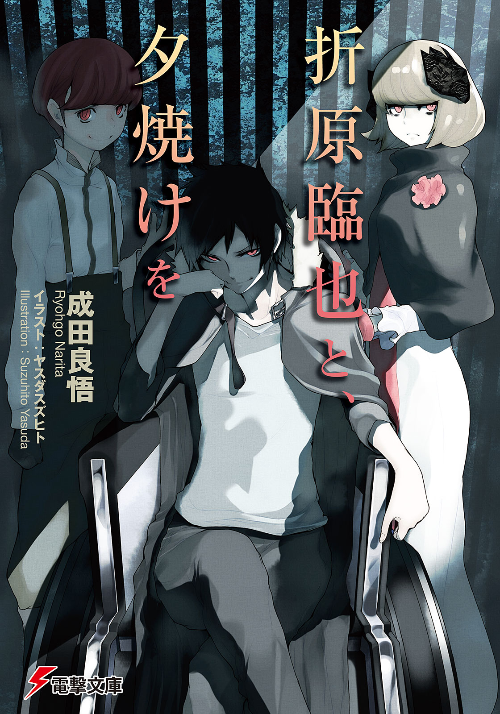
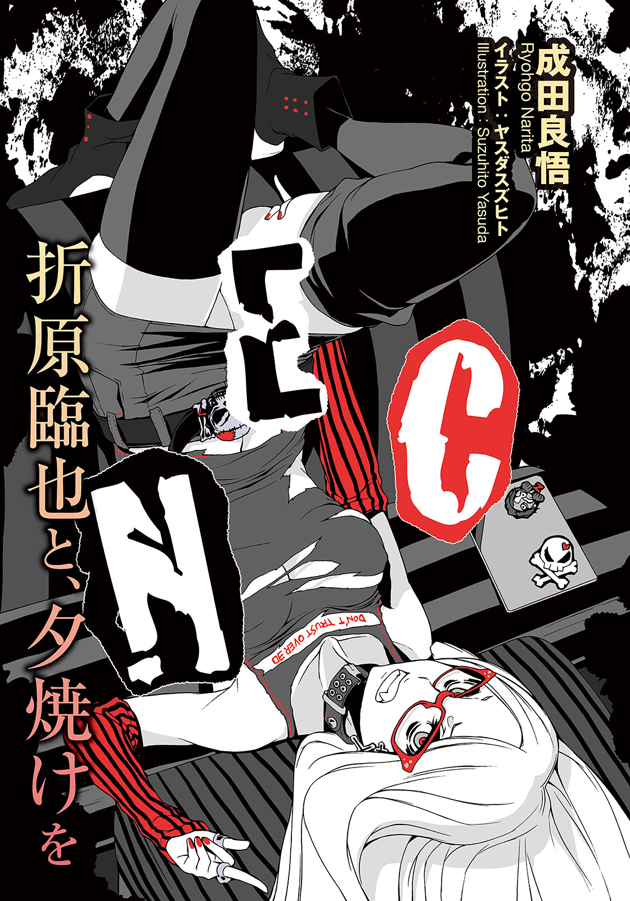
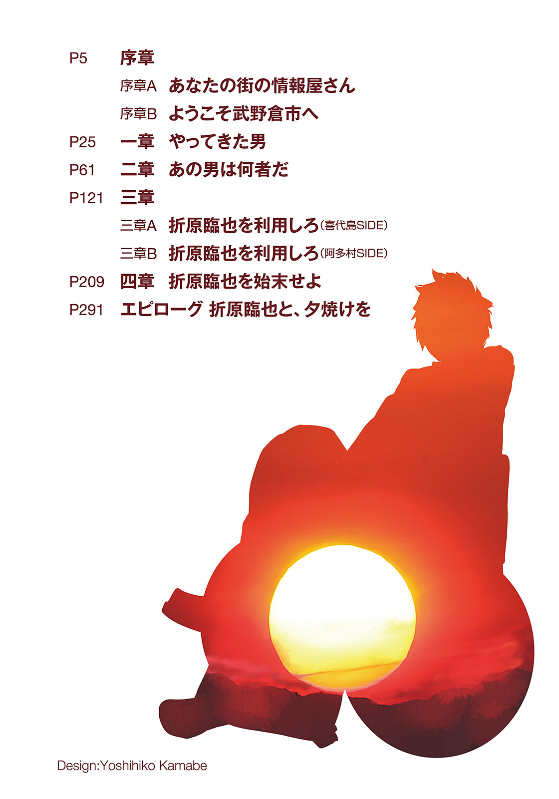
本書（電子版）に掲載されているコンテンツ（ソフトウェア／プログラム／データ／情報を含む）の著作権およびその他の権利は、すべて株式会社ＫＡＤＯＫＡＷＡおよび正当な権利を有する第三者に帰属しています。
法律の定めがある場合または権利者の明示的な承諾がある場合を除き、これらのコンテンツを複製・転載、改変・編集、翻案・翻訳、放送・出版、公衆送信（送信可能化を含む）・再配信、販売・頒布、貸与等に使用することはできません。
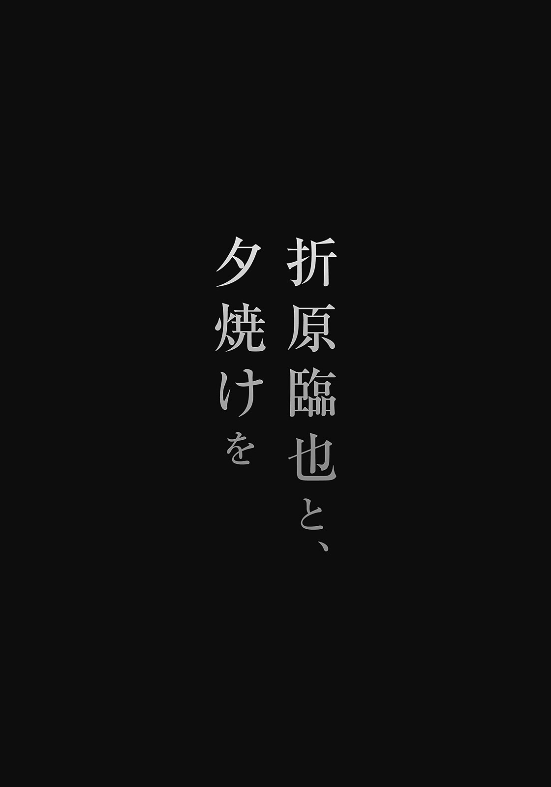
らく‐じつ【落日】
１ 沈もうとする太陽。入り日。落暉。落陽。
２ 物事の勢いが衰えることのたとえ。「大企業の─」
デジタル大辞泉（SHOGAKUKAN Inc.1995 1998 2012）より抜粋
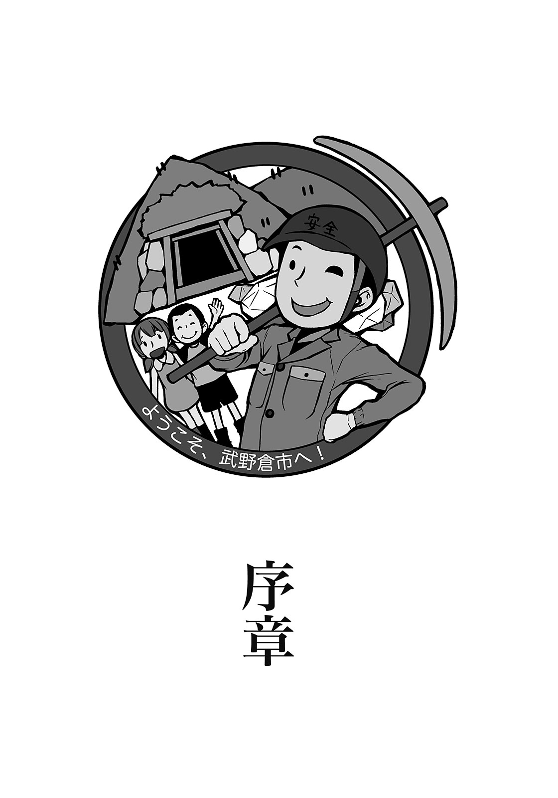
序章Ａ あなたの街の情報屋さん
「本当に、あいつを殺すチャンスがあるんだな」
電話口で物騒な言葉を口にするのは、くたびれたワイシャツに身を包んだ、サラリーマン風の男だった。
『ええ、確実に彼は今日、一人で会社の執務室に残ります。金庫の暗証番号も、間違いありません。私が保証しますよ』
「そうか......警備員もいない休日になんで会社にいるのか解らんが、好都合だ」
『確認しておきますけど、本当にやるんですか？ 殺人』
携帯の向こうから聞こえてくる声に、男は苛立ちながら応える。
「当たり前だろう！ 今更何を言ってるんだ！ 奴は、会社を立ち上げる時から苦楽を共にした、共同経営者の俺をあっさりと切り捨てたんだぞ！ あいつだけが会社の研究成果を全部独り占めしやがって！」
『そこはほら、人には人の事情って奴があるんですよ。復讐なんて止めて、新しい人生を歩むっていう道もあるんじゃないですか？』
「あるわけがないだろう！ 親友だった......いや、俺は親友のつもりだった！ だがあいつにとって俺はただの踏み台だったって事だ！ 俺はすべてを奪われた！ 俺には養わなきゃならん家族もいるのに......借金だって残ってるのに......奴もそれは知ってたのに！ 俺は家族と路頭に迷うしかない！ 今度は俺が、あいつからすべてを奪う番だ、そうだろう！」
男はまるで、自分自身に言い聞かせるように声を張り上げ続けた。
恐らくは、電話の向こうの人物に同意して欲しいのだろう。
『この殺意は正しい』と。
『別に、仕事を選ばなければ家族は養えるとは思いますけどね。まあ、なんにせよ、あなたがそう仰るなら俺は尊重しますよ。例えあなたが、どんな結末を迎えてもね』
「余計なお世話だ！ 成功したら金は半分やる！ せいぜいお前も遠くまで逃げるんだな！」
激しく叫ぶ男は、それ以上話す事はないと電話を切った。
頭の中に、『本当にやるのか？』という疑問が何度も繰り返される。
──くそ、あの情報屋め。最後の最後で決意を鈍らせやがって......。
そんな自分の頰をバシリと叩き、男は鋭い痛みと共に覚悟を決めた。
これは正しい復讐だと、自分自身を奮い立たせ──彼はナイフを懐に忍ばせ、夜の街へと一歩踏み出す。
その一歩が、新しい人生への一歩目だと信じて。
「畜生......なんで......なんでこんな事に......」
数時間後──無事に『始末』を終えた男は、路地裏でガックリと膝を落とした。
ワイシャツには返り血がべったりと貼り付いており、胸元にしまわれた折りたたみナイフの刃には真新しい血がこびりついている。
「ああ......何がどうなってる......？ なんで......あんな」
頭を振る男の胸元で、携帯電話の着信音が鳴り響いた。
画面も確認しないまま、虚ろな表情で電話にでる。
すると、今の男の状況にまるでそぐわない、軽快な声が受話器から飛び出した。
『やあ、おめでとうございます！ こうして電話できてるっていう事は、返り討ちにあったりせず、無事に始末を終えたみたいですね！』
「無事に......無事にだと？」
カチカチと歯を嚙み鳴らした後、男は震える声で言葉を紡ぐ。
「き......金庫の、中に......金は殆どなかった。代わりに......俺の名義になってる会社の資産権利書だのなんだのが出て来て......。殺......こ、ここ、殺した後に、あいつのパソコン見たら、自分の会社への告発文とか書いてて......」
『ええ、それはそうでしょうね』
「は......？」
『今日、彼はそれを書く為に、会社に一人で残ってたんですから』
呆然とする男に、電話の向こう側にいる男はクスクスと嗤った。
『会社の部下がやっていた大規模な不正に気付いた社長は、共同経営者の貴方を護ろうとしたんですよ。親友の貴方をね』
「......？」
『貴方の性格からいって、不正を伝えれば一緒に責任を取ると思ったんでしょうね。でも、家族がいる上でやむを得ない借金がある貴方にそんな負担を掛けるわけにはいかない。社長はそう考えたんじゃないですか？ だから、喧嘩別れして罠に嵌めて経営権を奪ったフリをしていた。クビにする事で、一度会社と無関係な状態にしたんでしょうね』
男はゴクリと唾を飲み込む。
確かに、パソコンの中にあったマスコミ向けの懺悔文のようなものには、『不正が表沙汰になる前に、気付く可能性のあった共同経営者を切り捨てた』というような事が書かれていた。
『既に指示書も作ってたみたいですね。始末を全部終えた後の、会社の商品や研究成果の権利とかは、自動的に貴方の所有物になるようにしていたみたいです』
「噓だ！」
『噓じゃないっていうのは、金庫の中身を見たなら知ってるんじゃないですか？』
淡々と言う電話の声に、男はより一層歯をカチカチと震わせながら問い掛けた。
「お前......、知ってた......のか？ 全部知ってた上で、俺を止めなかったのか!?」
『変な事を言いますね。ついさっき止めたばかりじゃないですか。なんなら、録音したの聞かせましょうか？』
「ふざッ......ふざけッ......」
『巫山戯ているのは貴方でしょう？』
相手の怒声を遮る勢いで、電話の相手はキッパリと言い放つ。
『俺は情報屋ですよ。貴方が聞きさえすれば、知ってた事は残らず教えてあげましたよ。普通は忠告しないんですが、今回は特別に「人には人の事情がある」ってヒントまであげたのに』
「それは......」
『貴方は自分で、相手を理解する事を拒否したんです』
「わ、解るわけないだろう！ そんなの......！ どうやって解れっていうんだ！ あいつが、俺に一言も相談しないのが悪いんじゃないか！」
背骨の中から湧き上がるような吐き気を抑えつつ、男は子供のように叫んだ。
そんな彼に、携帯電話からあからさまな嘲笑が聞こえて来る。
『まさか、社長さんも親友だった貴方が殺人を考えるまで恨むとは思わなかったんじゃないですか？ まあ、貴方が相手の行動の裏を読まなかった......というか、読もうとすらしなかった時点で、親友だと思ってたのは社長さんだけだったみたいですけどね』
「俺は......噓だ！ 噓だぁぁあああぁ！」
『そう悲観しないで下さい。言ったでしょう？ 例えあなたがどんな結末を迎えても、貴方の選択を尊重するとね』
『貴方の取った行動は、とても人間らしかったと思いますよ？』
♀♂
同時刻 関東某所
電話の向こうで絶叫が聞こえる。
直後、何か激しい衝突音のようなものとノイズが響き、そこで通話が完全に途切れた。
「トラックにでも飛び込んだかな？」
憐れな殺人者と最期の会話をしていた男は、持っていた携帯電話をゴミ箱に放り投げた。
「さて、流石に殺人犯が持ってた携帯ともなると、通話履歴も調べられるだろうから......そろそろ別の街にいくとしようかな」
独り言を呟き、部屋の中に、キイ、キイ、と車輪を回す音を響かせながら──
車椅子に座ったその男は、机の上に並ぶ十数台の携帯電話に目を向ける。
「......だいぶ減ったなあ。そろそろ飛ばし携帯も補充しないとね」
男は肩を竦め、窓の外を見ながら自嘲の笑みを浮かべて呟いた。
「まったく、人間観察も一苦労だよ」
♀♂
自分は情報屋である。
そんな事を嘯く、一人の男がいた。
ただ、本当に『情報屋』と呼ぶべき生業をしているのかどうかはさておき、彼が数多の情報を手にする力を持っている事だけは確かである。
彼は決して正義の味方などではなく、
さりとて悪の手先というわけでもない。
弱きを助け、強きを挫き。
弱者を踏みにじり、強者に阿る。
善人を諫め、悪人を咎め。
敗者を笑い、勝者を窘めた。
彼はそうして生き続ける一方で、その逆の事も平気で行う。
強きを助け、弱きを挫き。
強者を踏みにじり、弱者に阿る。
悪人を諫め、善人を咎め。
勝者を笑い、敗者を窘めた。
自分がないのではない。
ただ、彼は平等なだけだった。
己の欲望に、果てしなく素直なだけだった。
『人間』。
そんな単語のすべてにくるまれた有象無象の玉石達を、彼はひたすらに愛し続ける。
彼はただ、人を愛しているだけなのだ。
例えその結果、愛する人間を壊す事になったとしても。
情報屋は、壊れてしまった人間も平等に愛でる事ができるのだから。
序章Ｂ ようこそ武野倉市へ
雨の降りしきる三車線の県道。
そんな道の歩道橋に、『ここより鉱山の街』という横断幕が掲げられている。
シトシトと振る雨に濡れるその横断幕の下を、何台もの車が行き交っていた。
道幅の割には交通量がさほど多くないその道路の傍にある、とある繁華街の雑居ビル。
その屋上では、街を象徴する男の一人が雨に打たれていた。
阿多村竜一。
街を取り仕切る鉱山主、阿多村甚五郎の長男であり、将来武野倉鉱山と付随する会社の権利のすべてを受け継ぐ事を約束されていた男だ。
武野倉鉱山からは銀・銅・鉛・亜鉛などが豊富に採掘され、現役稼働している金山ほどではないものの、時には少量の金も取れる鉱山として採掘が続けられている。もっとも、割合の少なさから『金山』ではなく『銀山』という事になっているのだが。
採掘だけではなく、それに付随するビジネスと町おこしに成功した阿多村家。彼の一族が築き上げた総資産は、百五十億円を超えると言われていた。
その資産を元に更に事業を発展させ、街の殆どの企業が阿多村家の影響下にあるという、まさしく阿多村帝国とでも呼ぶべき地として、武野倉市はこの地方の中に堂々と君臨していた。
阿多村家は、まさに街の中に限定すれば貴族とでも呼ぶべき存在だった。
無論百五十億程度の資産では日本国内トップ10に並ぶ事はできず、居並ぶ大企業と比べれば国を動かす事ができるというレベルには届かない。
だが、武野倉市に限定するならば話は別だ。
金だけではない。数十年かけて築き上げてきた人脈の地盤も含めれば、この街に限って言うならば正しく王のように振る舞う事すら可能であった。
もっとも、武野倉にのみ重点を置きすぎた為に、武野倉を一歩でればその影響力は弱まってしまうし、全国区で言うならば、阿多村グループはさして有名企業というわけでもない。
東京辺りの人間ならば『阿多村？ なにそれ？』という程度のものだろう。
井の中の蛙、大海を知らず。
周囲の街の有力者達からは、そんな陰口も叩かれた。
だが、阿多村は『井の中の蛙』である事と引き替えに、井戸の中に大量の財宝を貯め込み、蛙の王となる道を自ら選んだのである。
大海の波すら跳ね返す、気高く、頑強な井戸を造り上げて。
阿多村という名を、深く、狭く、武野倉という土地に住まう者達の脳髄に刻み込んだ。
自分達が支配者であると思い知らせる為に。
自分達が庇護者であると思い知らせる為に。
自分達が独裁者であると思い知らせる為に。
自分達こそが、大海よりも豊かな井戸に住んでいる事を信じさせる為に。
斯様な経緯を経て、地方都市に一つの歪んだ街と──その街を独占する、強大な一族が誕生したのである。
そんな一族の当主の長男。
いわゆる『御曹司』である阿多村竜一。
彼は現在、自分の一族が所有するビルの屋上に監禁されていた。
──なんで俺が。
──こんなバカな事があってたまるか。
──畜生、あいつめ......ぶっ殺してやる！
──ただの殺し方じゃねえ！ 金と時間をたっぷりとかけて殺してやる。
監禁されてから半日は、そんな事ばかり叫んでいた。
だが、身体が飢えを感じるに従い、その悪態は徐々に不安へと変化する。
──どうして誰も気付かないんだ。糞。
──もう丸一日経ってるのに、親父は何してやがる。
彼は飢餓感と縛られた手足の痛みに晒されながら、結果として丸３日も、屋上の貯水タンク横の倉庫に放置されている。
阿多村総合レジャービル。ゲームセンターやバッティングセンター、ボウリング場、カラオケボックスに若者向けのレストランなど、町おこしの一環として作られた市内最大の一大レジャー施設だ。
階下には山ほど人がいて賑わっているというのに、屋上で監禁されている自分には誰も気付かない。
こんな理不尽があるかと足をばたつかせて喚き立てるが、返事をするものはいない。
その代わりとばかりに、倉庫の扉がゆっくりと開かれる。
「て、手前！ もういいだろ！ いい加減にこの手錠を外せ！」
現れたのが自分をここに監禁した存在だと気付き、再び悪態をつくが、その声にはもう殆ど力がなかった。
「金ならいくらでもやるからよ！ な？ おい！ 手打ちにしようや！ 手前、喜代島の野郎に幾ら貰ったんだ？ 倍だの三倍だのセコイ話はしねえ。手前が満足するまで金をくれてやるから、こっちにつけよ、な？ 俺はきっちり死んだって事にしてよ、喜代島の野郎を呼び出して......」
何か交渉のような事を喚き続ける竜一に、監禁者はそっと耳をよせ──
「────」
何事かを囁いた。
その瞬間、竜一の顔がこれまでにないほどに青ざめる。
飢餓感も手足の痛みも、一瞬にして吹き飛んだ。
その囁きを聞いた瞬間、彼は理解してしまったのである。
確実に、自分はこれから殺されるのだと。
「ま、待て！ 待ってくれ！ 話あお......ごぼぁッ」
何かを叫びかける彼の口に、薄い紙が何枚分もグシャグシャに詰め込まれた。
県道の横断幕と同じ事が書かれている、阿多村グループが市役所に作らせた観光用のチラシらしい。
もっとも、竜一はそれに気付く事はなかった。
永遠に。
ザクリ、と、何かが竜一の顔面に突き刺さる。
「──────ッッッッ！」
即死しない程度に刺し込まれたカッターナイフの刃が、竜一の鼻を破壊する。
叫びは口に詰め込まれたチラシのせいで言葉にならず、喉にたまった呻きとなって屋上の倉庫に小さく響き渡った。
弾みで口の中から丸まったチラシが零れ、竜一の横に転がり落ちる。
『ここより鉱山の街』
チラシに書かれた文字、血飛沫が降りかかった。
ザクリ、ザクリ。
ツルハシの代わりに、カッターナイフの刃が何度も竜一の身体に突き刺さる。
身体を激しくのたうち回らせ、横に落ちていたチラシも激しく揺れ続けた。
『貴方の希望を採掘しよう』
ザクリ、ザクリ。
新しい文字に血がかかる。
肉と欲が大量に詰まった身体から、何かを掘り出そうとするかのように。
『街の幸せを精錬しよう』
ザクリ、ザクリ。
文字に血がかかり続け、チラシを真っ赤に染め上げていく。
やがて、その音が止む頃にはチラシに読める箇所は殆ど無くなっており──
ただ一言だけが、かろうじて読める形で返り血の間に浮き上がっていた。
『ようこそ、武野倉市へ！』
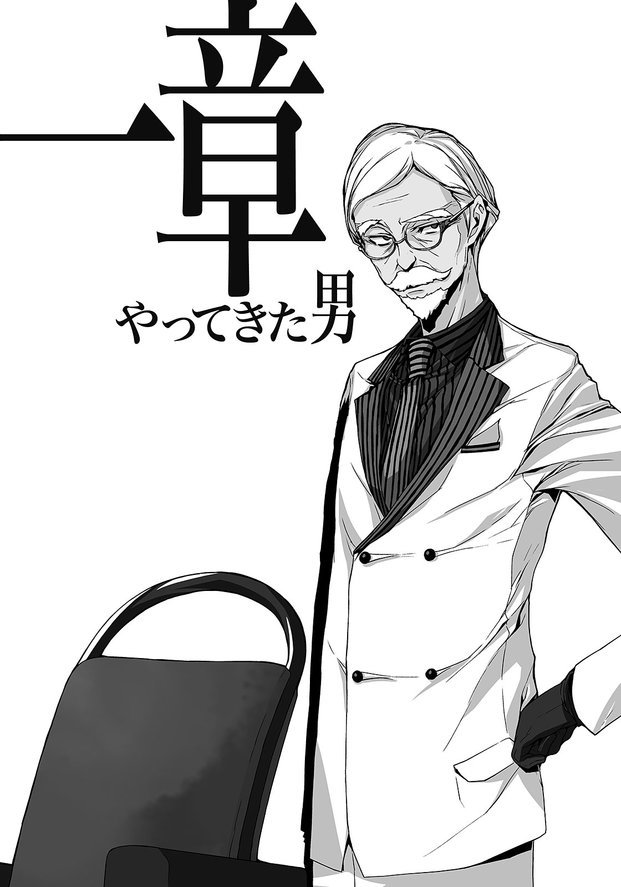
某月某日 地方新聞の記事より一部抜粋
『武野倉市内にて変死体 ──不明の資産家長男と断定──
『昨夜、武野倉市内で発見された変死体は、三日前から行方不明になっていた阿多村竜一氏（二八歳）だと判明し、警察は事件と事故両面からの捜査を────』
新聞記事に書かれていた街から、遠く離れた土地。
山小屋の中で、一人の男がその記事を眺めていた。
どうやって他県の地方新聞を入手したのかは解らないが、日付は確かに今日のものである。
男はニイ、と笑うと、その新聞を暖炉の中に投げ込んだ。
そして、それまでテーブル上で興じていたと思しきチェスや将棋の駒、麻雀牌やトランプなど、様々な多人数用の遊具を暖炉の火にくべていく。
季節は梅雨時。
じめじめとした気だるい日だというのに、男は暖炉の火を煌々と燃やし続ける。
記事や遊具が灰になっていく様を見つめていた黒髪の男は、ロッキングチェアの横に置かれた車椅子をさすりながら携帯電話を取りだした。
そして、ある番号にかけて楽しそうに話し始める。
「この前の話、お引き受けしますよ。何人か連れて、街にお邪魔させて頂きます」
丁寧な言葉使いだが、敬意はあまり感じられぬ声だった。
ただ、嘲笑しているというわけでもなく、彼の言葉には、どこかしら子供のように胸を騒がせている雰囲気も含まれている。
「......ええ、あなたの為じゃあない。他でもない、俺自身の為にですけどね」
キイ、キイ、と音を鳴らすロッキングチェアの上で、その男は確かに微笑んでいた。
「久しぶりに......人が恋しくなった。それだけですよ」
電話を切った後、男はロッキングチェアを揺らしながら、独り言を交えて思案する。
──さて、誰を連れて行こうか。
「波江さんはアメリカだし、黄根さんと美影さんは池袋から出ないし、蘭君はもう粟楠会だし、間宮さんは面倒臭いし......富士浦さんは刑務所、根黒さんはドイツで消息不明のままか。リサちゃんは日本に戻って来てるけど......今回の件で動かすには派手過ぎるから止めておこう」
知人の名をいくつか並べた後、男はニイ、と笑う。
「うん、そうだね。まずは坐さんと......あの二人でいいか」
声をかける知人が決まった途端、車椅子の男は鼻唄を交えながら今後の旅に想いを巡らせた。
「ああ、移動だけでも結構かかるから、みんなが退屈しないようにしないとね」
そして、暖炉を見ながら、少しだけ後悔したように溜息を吐いた。
「......トランプまで燃やしたのは、少し失敗だったかな？」
♀♂
数日後 武野倉市
街には、今日も雨が降っていた。
ドロリとした雲に覆われた空の下、くすんだ壁のビルが墓標のように立ち並ぶ。
この土地一番の歓楽街の筈なのだが、周囲を取り巻く空気はどこか澱んでおり、客引きの明るい声で無理矢理それを誤魔化しているかのようだった。
そんな歓楽街の入口側で、車に泥水を撥ねられた男──越野が舌打ちをする。
「くそ、ついてねぇ」
彼は地元にある暴力団の下っ端であり、更に立場が下の新人達を連れて歩いていた。
ズボンに撥ねた泥を見ながら、走り去った車を見るが、既に角を曲がってしまっている。
苛立つ気持ちを抑えながら、越野はゆっくりと目的の場所に向かって歩き出した。
そこは、歓楽街の角に立つ古びたビルの四階である。
三階までは風俗店などが入っており、四階は小さな闇金融の事務所となっていた。
越野の所属する組織──富津久会がバックについており、ささやかな資金源の一つとなっている。
「......随分と渋い数字だな、おい」
役所には提出しない方の帳簿を見た越野が、露骨に渋い顔をする。
すると、闇金の事業主と思しき同年代の男が言った。
「今の状況じゃ、これ以上は無理だぞ。店を畳む連中も増えてるしな」
「もう少し気合い入れろ。ここで少しでも銭貯めとかねぇと、マジであの腐れボンボンの『先生』に街が乗っ取られるぞ」
そんな会話をしていると、事務所の扉が開き、一人の男が顔を出す。
「よう、どうした、景気悪ぃ面してるじゃねえか」
「......佐々崎さん。こいつはどうも」
心中で舌打ちをしつつ、越野は顔の表情を変えぬまま頭を下げた。
「天下の富津久会も、不況の波にゃ勝てねえか？」
「いえ、お陰様で、上手く回ってますよ」
「ほう、そうかい。だったら、遠慮する事もねぇな」
言いながら、佐々崎と呼ばれた男は何かを受け取るような形で右手を差し出す。
「......」
越野が視線で合図すると、闇金の事業主が引き出しから厚い封筒を取り出した。
佐々崎はそれを受け取ると、中に覗く一万円札の束を確認してニヤリと笑う。
「あぁ、じゃあ、ちょいと借りていくぜ」
「......警察は、『今回の件』で何か動くつもりですか？」
「今回の件？ 色々ありすぎるが、どの話だ？」
惚けたように、封筒を受け取った中年の男が肩を竦める。
佐々崎は現役の刑事だ。
現役とはいっても既に刑事とは呼べぬ輩であり、街の闇金や風俗店から賄賂を巻き上げて代わりに摘発情報などを流す犯罪者側の人間である。
「阿多村のぼっちゃんが殺された件ですよ。もう３日も経ってますが、なんの続報も流れてこないんで気になりましてね」
その言葉に、佐々崎が苦笑を返した。
「おいおい、滅多な事を言うなよ。まだ『自殺』になるかもしれないんだぜ？ なんせ、被害者自身の手に、凶器と思しきカッターナイフが握られてたんだからな」
「手足に縛られた痕のある男が、口の中にチラシつめたままカッターナイフで自分の両目抉って、鼻と耳を切り落としてから飛び降りる自殺なんてあるわきゃねえでしょうが」
「さあな、その手のハーブでもやってたんじゃねえか？ 混乱して手前を切り刻んで笑いながらビルから飛び降りた。そんな目撃証言が出てくるかもしれねえぞ？」
「なるほど、最初からまともに捜査する気はねぇって事ですか」
溜息を吐く越野に、不良刑事が苦笑する。
「いや？ 表向きはちゃんと捜査してるぜ？ なんせ今回はマスコミにも騒がれちまったからな。......まあ、捜査しちゃいるが、ほとぼりが冷めた頃になあなあで済ませるだろうよ。半年前に来た署長も、所詮はキャリア組の若造だ。『先生』や『領主様』に逆らって揉めるよりは、大人しく次の昇進まで事なかれ主義ってわけだ」
「つまり、警察の旦那がたはいつも通り、俺らのゴタゴタには不介入って事ですか？」
「マスコミに騒がれない限りはな」
佐々崎の言葉に、越野も苦笑しながら独り言を吐き出した。
「......まったく、俺が言うのもなんだが、どうかしてるぜ、この街はよ」
日本海に面した土地にある武野倉市は、地方都市としてはそこそこ大きな街だと言える。
だが、好んでその街に移住しようという者はそう多くない。
隣接する刃金市はドイツの観光都市と姉妹都市関係を結ぶほどに開けた街なのだが、山ひとつ隔てた場所に存在するこの街は、どこか閉鎖的な空気に満ちている。だが、決して寂れきった不景気な街、というわけではない。
鉱山開発で発展した町であり、日本で現役稼働する数少ない銀鉱山を占有する一族の手によって今も繁栄を続けていた。
最近は都市の再開発を進める動きもあり、この街出身の政治家が先鋒に立って土地の買収などを始めている。
ところが、その銀鉱山の主である一族と、その政治家の間には大きな軋轢があるらしく、その摩擦が退廃した街に更なる不協和音を響かせていた。
悪徳の街。
近隣からはそんな渾名をつけられて忌避されており、街の有力者の大半は、開き直ったかのように鉱山主や政治家に尻尾を振って、汚職絡みの美味い汁を吸おうとしている。
そんな男の一人である、汚職刑事の佐々崎が皮肉げに口元を緩ませながら言った。
「もうこの街は腐った連中から出たガスでパンパンだ。その上、火種はどこにでも転がってるときてる」
「旦那が言うかね」
「俺なんざまだ腐りかけさ」
──流石にあんな派手な殺しまでもみ消すとなると、うちの署もリスクがでかすぎる。
──そろそろ、逃げる算段をしといた方がいいかもな。
佐々崎は心中ではそんな事を考えるが、袖の下を受け取っている越野の前で言うわけにもいかず、誤魔化しの言葉を吐き出した。
「まあ、お前らが火種にならねえように気を付けるんだな。この程度の袖の下じゃ、流石に庇いきれねえぞ」
「解ってますよ佐々崎の旦那。こちとら余計な事に手を出す暇なんざねえっすよ。夜逃げした連中の代わりに、新しい顧客を探さないといけないんでね」
「新しい顧客ねぇ」
下卑た笑みを浮かべながら、悪徳刑事は越野を小馬鹿にするように首を振る。
「今更、事情を知っててこんな街に来る人間なんていやしねぇよ」
数分後。
越野は窓のブラインドを指で広げ、街並みを見下ろした。
丁度そこで、ビルから出て街を歩いて行く佐々崎の後ろ姿を見つけて舌打ちをする。
「ちッ......糞野郎が。小遣いを稼ぐだけ稼いで高飛びする気だな」
「攫いますか」
部下のチンピラの言葉に、越野は眉を顰めた。
「それこそ余計な火種って奴だ。野郎が俺らを裏切ったなら話は別だがな」
溜息を吐きながら佐々崎の背から目を逸らそうとした越野だが、そこで妙な光景を目にする。
「......なんだぁ？」
佐々崎の前に二人の子供が立ち、足を止めて何かを話している。
「......今日、平日だよな？」
どう見ても小学生、歳がいっていてもせいぜい中学に入りたてといった年頃の男女だ。
この距離では表情までは窺えないが、子供であることは確かである。
『金持ちのお坊ちゃんお嬢ちゃん』といった感じの小綺麗な格好をしており、昼時とはいえ、こんな飲み屋が並ぶ歓楽街にはまったく似合わない存在だ。
「佐々崎には女房もガキもいなかった筈だが......」
首を傾げる越野の視線の先で、佐々崎は子供達に手を引かれてどこかへと去って行く。
佐々崎の歩き方から、越野は彼自身も戸惑っている事に気が付いた。
「何がどうなってんだ......？」
不思議には思ったものの、あのような子供達は自分と関わる事などないだろうと判断し、それ以上は気にしない事にした。
彼は30年近く武野倉市で過ごしてきた経験から、身をもって知っていたのである。
この街で余計な事に首を突っ込むと、必ずろくな事にはならないのだという事を。
♀♂
武野倉市内 ホテル『武野倉グランパレス』ロイヤルスイート
「ああ、良い眺めだ」
雨模様の街を高所から見下ろしながら、その男は言った。
武野倉市で最も高く聳えるホテル、『武野倉グランパレス』。
その最上階の部屋をすべて貸切状態にした男は、スイートルームの片面の窓の前から街の景色を眺め続けた。
艶やかな黒髪の男は、黒い服を纏っていた。
そして、黒を基調とした車椅子に腰掛けている。
通常のものとは違い、リクライニングチェアを思わせるゆったりとしたフォルムの、奇妙な形状の車椅子だ。
そんな車椅子の上で軽く足を組みながら、男は満足げに街を見下ろしていた。
「見るだけで人の匂いが感じられる。暴力と愛がいい感じに絡み合う街だ。気に入ったよ」
クツクツと笑いながら、男は言葉を続ける。
目を細め、心の底から楽しそうな微笑みを浮かべながら。
「ここなら、十分に羽を伸ばせそうだ」
男はそこで視線を横に向け、そこに立つ眼鏡をかけた老人に語りかけた。
「そう思わないかい、坐さん」
坐と呼ばれた老紳士は、黒と白を基調とした少し変わったデザインのスーツを纏ってる。
ピンと伸びた背筋と眼鏡の奥に光る眼光の鋭さから、執事かボディーガードの類だと感じさせる男だ。
ボディーガードというには老齢であるにも関わらず、それが一番しっくりくる雰囲気をまとわりつかせている。
「......そうは思いませんのう。生憎と、某は草食系男子でしてなあ。このようながっついた空気は息がつまるというものです」
丁寧な口調に『某』という一人称。
敬意を払っているようでまったく払っていない、寧ろどこか見下しているかのような空気を声に含ませる老人に、車椅子の男はカラコロと嗤った。
「坐さんは正直だなあ。少しは俺っていう雇い主に敬意を払うとかないのかい？」
「雇い主じゃなければ、世の中の為にその首をへし折っておりますでしょうなあ」
「殺伐としてるなあ、坐さんは」
笑いながら、車椅子の男はキイ、と前に車体を進める。
そして、先刻よりも一層暗く澱み始めた空を眺めながら、楽しそうに楽しそうに奇妙な言葉を呟いた。
「楽しみだなあ、ああ、本当に楽しみだ」
「この街を搔き乱したら、一体どんな人間を奏でてくれるんだろうねえ？」
♀♂
レストラン『金剛菜館』
「......あんたが、俺を呼んだのか？」
『武野倉グランパレス』の最上階にある高級中華料理店の中で、佐々崎は警戒の声をあげた。
街中で声を掛けてきた奇妙な子供達。
彼らに半ば無理矢理連れて来られる形で、彼はここに立っていた。
──『ねえ、おじさん、刑事さんだよね！』
──『......ついてきてください』
闇金から袖の下を受け取った後、街を歩いていた所で急に少年少女から声を掛けられた。
自分の事を刑事だと知っている事を不気味に感じたが、『学校はどうした、逮捕するぞ？』と冗談混じりに追い払おうとしたのだが──
──『あのね、おじさんに「そでのした」を渡したい人がいるんだって！』
──『ついてきた方が得......たぶん』
袖の下と言われてぎょっとし、思わず周囲を見渡す。
何かの罠ではないかと疑ったが、現時点でそれは判断できなかった。
子供達は同じ年頃に見えたが、双子のようには見えない。男女なので双子だとしても二卵性双生児だろうが、それを踏まえてもあまり似ていない。兄妹とも思えず、恐らく血のつながりはないだろうと佐々崎は判断する。
結局佐々崎は、罠の可能性を考えて警戒しながら彼女等の後に付いていった。
向かう先が倉庫や暗がりだったならば、即座に逃げ出すつもりだった。自分を良く思わない連中や、過去に逮捕した犯罪者がいて殺される可能性もあったからだ。
普通の街ならばそこまで警戒しないかもしれないが、今の武野倉市はそのような事が普通に罷り通ってしまう土地なのだと佐々崎は人一倍理解している。
だが、彼が連れてこられたのは、市内有数の高級レストランだった。
店の中に入った瞬間、佐々崎はまず背筋を凍らせる。
彼が足を踏み入れた瞬間、店の中にいたガタイの良い背広姿の男達が、無言のままじっとこちらを見つめてきたからだ。
一席だけではない。
店内の半分以上の席を占有していたその強面の男達が、物も言わぬままジッと佐々崎の方を向いているではないか。
──こいつら......何者だ？
──おい......待てよ、俺は『先生』にも『領主様』にも恨まれる覚えは......。
街を二分する勢力の片方に睨まれて、自分はこれから殺されようとしているのではないか。
そう考えた佐々崎は、逃走経路を必死に考えながら子供達に手を引かれていった。
最悪、この子供達が人質として使えるかどうかを考えながら。
そして、レストランの奥にある一室、クレジットカードのブラック系を持つ者などが案内される最高級個室の中にまで連れ込まれた。
そこにいたのは、一人の男。
「やあ、佐々崎さんですね。初めまして。私はこういう者です」
テーブルの上に置いた名刺を指で弾き、対面の佐々崎の前まで滑らせる。どうやら、ビジネスマンの礼儀などは欠片もない男らしい。
『ファイナンシャルプランナー 折原臨也』
名刺にはそう書かれており、あとは携帯の番号とメールアドレスが書かれているだけだった。
折原臨也という名前を見た後、佐々崎はじっとその相手を観察する。
艶やかな黒髪に、黒い服。整った顔の中に浮かぶ瞳には、怜悧そうな光が宿っている。いや、怜悧というよりは狡猾、といった方が正しいだろうか。昔この街で逮捕された殺人鬼と顔を合わせた事があるが、その男と同じような目をしていると感じた。殺人欲を感じるというわけではなく、純粋に『何を考えているのか解らない』という意味でだが。
更に特徴的な事を上げるなら──その男は、車椅子に座っていた。
自分をここまで引っ張ってきた少年と少女がいつの間にか彼の背後に回り込んでおり、それぞれが車椅子に手を掛けながら佇んでいる。
男の顔色は良く、何か大病を患っているようには見えなかった。
だとすると怪我か何かだろうか？
そう思った佐々崎が、思い切って尋ねてみる。
「健康そうに見えるが、足が悪いのか？」
「昔、派手な喧嘩をしましてね。リハビリに挑戦すれば治る可能性もあるそうですが、医者の先生が言うには、半分は精神的なものらしくて」
男は苦笑しながら、車椅子の車輪を撫でる。
「まあ、完全に歩けないというわけじゃないんですけど、飛んだり跳ねたりは無理でしてね。例えば貴方が今、俺を殺そうとしたら逃げるのは難しいかな」
「よく言うぜ。個室の外にあんなに人集めといてよ」
確かにこの場でなら絞め殺せるかもしれないが、その後に自分が殺されて終わりだ。
そもそも、相手も拳銃の一つぐらい何処かに忍ばせているかもしれない。
「......それで、ファイナンシャルプランナー様が、俺みたいな刑事になんの用だ？」
口ではそう言うが、佐々崎は最初から相手がファイナンシャルプランナーだとは信じていない。明らかに仮の職業だろうと判断しており、名前もどうせ偽名だろうと考えていた。
資産などを含めた人生や会社の将来設計を手伝うのがファイナンシャルプランナーというものだが、目の前の男からは他人の将来をまともに考えるような気配は感じられない。
すると、車椅子の男──折原臨也は楽しげに笑いながら言った。
「もちろん、将来設計の話ですよ。この街のね」
「ほう......誰の依頼だ？ ボランティアで街の将来を考えてくれてるってわけじゃないだろ？」
「名前は言えませんけど、この街の有力者、とだけは言っておきますよ」
「......」
それを聞き、大体の裏が読めてきた。
──なるほど、『先生』か『領主様』のどっちかに雇われた組織の人間って事か。
──どっちだ？ 下手に肩入れすると俺がもう片方に目をつけられる。
やはりろくな事にはならなさそうだと考え、佐々崎はできるだけこの男に関わらないようにしようと思ったのだが──
そんな彼に、臨也は分厚い封筒を投げ渡した。
「......？」
思わず受け取った佐々崎は、その口から覗く札束を見てギョッとした。
「お、おい、こいつはなんのつもりだ？」
「やだなぁ。袖の下、って奴ですよ」
爽やかな笑みを浮かべながら、臨也が言葉を続ける。
「貴方が何をしてるかぐらいは、簡単に調べられますよ。いや、そういう事をしている人がいるだろうという前提で街を調べたら、貴方の名前が出た......その結果として、貴方をこうして食事に御招待させて頂いた、というわけです」
暫く訝しんでいた佐々崎だったが、札束の枚数が五十を超えている事を確認して、腹を括る。
「......で、こんな先のない中年刑事になんの用だ？」
「一つは、今お渡しした封筒で、私が今後この街で何かしても、できる範囲で見ない振りをして欲しいという事。もう一つは......」
目を細めながら、臨也はもう一つの封筒を取り出した。
厚さから見て、先刻よりも多い金額が入っているように感じられる。
「私がスムーズに副業をこなす為に、街の裏表に詳しい貴方に、色々とお聞きしたい事があったんですよ」
「......つまり、あんたの言う事に正直に答えりゃ、その封筒の中身も貰えるって事か？」
ゴクリと唾を飲み込みながら尋ねる佐々崎に、臨也は笑いながら答えた。
「もちろん。ああ、中身が新聞紙だとか千円札でした、というオチはないから安心して下さい」
封筒の中から札束を僅かに見せ、指でパラパラと束を弾く。
すべて一万円札であるという事を確認した佐々崎は、手に汗を滲ませた。
──やべえな。
──この若造が『先生』と『領主様』のどっち側に雇われたのかは知らねえが、下手に情報を流したら、逆の方の陣営に狙われる事になっちまいそうだ。
そんな佐々崎の不安を察したのか、折原臨也は柔和な笑みを浮かべて語り始める。
「ああ、何も機密情報を話せと言ってるわけじゃありませんよ。少し事情通の人なら解る、この街の人間関係や組織図についての常識程度の事で構いません。貴方にとって不都合だと思う事があれば、意図的に隠して頂いても結構です。とはいえ、流石に噓八百を並べ立てられると困りますけど」
「......それだけでいいのか？」
「ええ、私を雇ったのが誰であろうと、悪く言えば蝙蝠、良く言えば中立の立場の人間から、客観的な情報を得たいんですよ。そこから始めるのが俺の副業の基本ですから」
「その副業ってのはなんだ？」
「ああ、副業というか、こちらが本業のようなものなんですけどね？」
佐々崎の問いに、臨也は笑みを僅かに陰湿なものに変えながら答えた。
「情報屋、って奴ですよ」
──巫山戯ているのか。
佐々崎はそう思った。
情報屋と呼ぶ者達は確かに存在する。
だが、それは競馬場のノミ屋やバーのホステスなどの一部に時折存在する、小金で街の情報を流してくれる人物達の総称だ。警察という立場から考えれば、暴力組織や一部のカルト宗教の内部にいる情報提供者を総じて『情報屋』と呼ぶ事が多い。
自分から『情報屋』と言う男などドラマや漫画の中でしか聞いた事がない。
他人の情報を一から調べるなら、探偵か興信所でも名乗ればいい。
何を自らそんな胡散臭い職業を称しているのか。
単なる冗談にしては幼稚過ぎると考えた佐々崎は、皮肉げな苦笑を浮かべて首を振った。
「おお、そりゃ凄えな。だったら、俺が昨日食った昼飯の内容も、あんたに聞きゃ解るってわけだ」
肩を竦めながら言う佐々崎に、臨也が笑みを浮かべたまま言葉を紡ぐ。
「燦々軒の黒胡麻担々麵ですよね。替え玉も二回頼んでましたね」
「......」
ブワ、と、佐々崎は自分の手の平から汗が噴き出すのを感じ取った。
──いや、俺の事を調べてたんだ。一日ぐらい尾行もしてるだろう。
そう考えた彼は、冷静さを保とうと作り笑いを浮かべかけるのだが──
「その昼食後、武野倉署内で新参者の警察署長さんに嫌味を言われましたよね？ ええと、『君が何をしてるかは見ない振りをしてもいいが、俺がいる間に尻尾を出すようなマヌケにはならないで貰おう』でしたっけ？」
「......ッ！」
臨也の言葉で、その笑いが凍り付いた。
──ば、バカな。
──なんで、そこまで知ってる!?
──あの時周りに誰がいた!?
──こいつもあの場に!? 馬鹿な！
──盗聴!? 警察を!? いや、警官に内通者が!?
さまざまな可能性が浮かんでは消えて行くが、そんな彼の脳裏の推測を搔き消すように、携帯電話のメール着信音が鳴り響く。
その文面は短く、件名は『目の前の男より』となっていた。
『この街に何人もいる貴方のパトロンと、彼らに頼まれて揉み消した悪事の内容、表にでも纏めてメールでお送りしましょうか？』
そう書かれていた本文を見て、佐々崎は悟る。
『情報屋』と名乗った男は、無料サービスとして一つの情報を突きつけたのだと。
目の前にいる男は、こちらの運命を既に掌握しているのだという、最悪の情報を。
♀♂
「ああ、皆さん、撮影は終了です。ありがとうございました」
佐々崎が去った後、個室から車椅子で出た臨也が、通常席の面々に声を掛けた。
そこに座っていたガタイの良い男達は、顔を見合わせた後に臨也に尋ねる。
「奈倉さんだっけか？ こんなんで一人一万円も貰っていいのかい？ 本当にただ座って、新しい客が来る度にみんなでジッと見つめただけだぜ？」
「ええ、ええ、最高でしたよ。そういう研究ですから」
「そうかい？ まあ、俺らにゃ良く解らないけど、頑張ってくれよ」
レストランの一般席に座っていたのは、三つほど離れた街にある大学の応援団員やラグビー部の面々だ。
その大学のＯＢだと名乗る奈倉という男に、『行動学の研究で、唐突に大勢に見つめられた時の人間の反応を研究する』という妙な名目で雇われた彼らは、隠しカメラで撮影されているという店内で『来客をただジッと見つめる』という行動をし続けていたのである。
妙な研究だと思いつつも、彼らは日給の高さに釣られ、深く追及しないままこのバイトに参加していた。
訝しんで参加しなかった者も、流石に大学側に問い合わせてＯＢの名簿を調べるなどはしなかった。もしも調べるものが居れば、奈倉という名の卒業生など存在していないと気付いただろう。
もっとも、彼らは騙されはしたが誰も損する事はなく、楽に稼げたとホクホク顔でバイト代を受け取り帰って行ったのだが。
全員が去った後、個室から出る準備をしていた臨也に、少年が尋ねる。
「ねえねえ臨也さん！ 勝手にこんな事して、お店の人に怒られないの？」
少年の無邪気な問いに、臨也は言った。
「ああ、大丈夫だよ。この店のオーナーさんには、ちゃんと前もって話しておいたから」
「......脅したんだ」
目を逸らしながら言う少女に、臨也は肩を竦めながら答えた。
「やだなあ、俺が人間を脅したりするわけないじゃないか。店で使ってる肉、産地偽装してますよねって話をちょっと振ったら、勝手に向こうが脅されてるって勘違いしただけさ」
「よくわからないや」
「......」
首を傾げる少年と、呆れたように溜息を吐く少女。
そんな彼らの事を聞き、臨也は車椅子の肘掛けを指でトン、と叩いた後、半分独り言のように呟いた。
「まあ、敢えて誤解は解かなかったけどね」
「どうして？」
更に首を傾げる少年の頭にポンと手を置きながら、臨也は嬉しそうに答える。
「俺は、人間のそういう憶病な一面も大好きなんだ」
クツクツと笑う臨也。
彼のその笑いは、憶病な人間を笑うというよりも、どこか自嘲の色が浮かんでいるようにも感じられる。
「人間、いつ死ぬか解らないんだし、好きな事には正直に生きないとね」
奇妙な事を言った後、臨也は車椅子を前にこぎ出しながら言った。
「ああ、しかしここは本当に良い街だなあ。いい街だよ。人間らしさに満ちあふれてる。佐々崎さんから話を聞いただけで、この街に永住したくなるぐらいだ」
個室の窓から最後に外の景色を見て、臨也は軽く肩を竦めて息を吐く。
楽しそうに、寂しそうに。
「でも、だからこそ......この街は、もうそんなに長くないかもねえ」
間章 折原臨也という男①
折原臨也？
これはまた、随分と懐かしい名前を聞いたね。
いや、そんなに懐かしくもないか。友達や家族と話していると、時々名前だけは話題に挙がるしね。
物騒な事件とか、珍妙な事件が起こるたびにさ、折原君ならどうしてたろうとか、この事件の黒幕は折原君なんじゃないかとか。そんな話題さ。
ほら、これだけでもう、ろくでもない人間だって解るだろう？
折原臨也が何者かだって？
何者って言われてもね。
職業で言うなら、情報屋って奴だよ。
表向きはファイナンシャルプランナーとか名乗ってたけどね。
情報屋は情報屋だよ。特に、人間に関する情報を多く扱ってたかな。
街の人間関係とか、誰かの裏の顔とか、有名人の秘密の愛人関係とか、彼に聞けば、大抵の事は解ったね。時々有名じゃない一般人の愛人関係とかも知ってたりするけど、まあ、趣味で色々と調べてたんだろうね。浮気調査みたいな事をやってた時期もあったから。
たまたま不倫関係っぽい雰囲気のカップルを見かけたら、仕事の合間にそのカップルの事を調べて、男の方の家の娘さんに不倫の証拠写真を送りつけたりするような奴だよ。他にも、自殺オフ会に死ぬつもりもないのに紛れ込んで、話を聞くだけ聞いて睡眠薬で眠らせて自分だけ逃げたりとか。
最低だと思うかい？
そう思ったなら、君の感性は正しいよ。そんな人間に近づいたりしたら駄目だ。できる事なら、一生関わらない方がいい。
僕はまあほら、感性が正しくないんだろうねえ。彼と10年以上も友達を続けてこられたっていう事は。君だって、僕に辿り着いた時点で、僕がまともじゃないって事は解ってるだろ？
彼、まだ生きてるのかい？ ああ、愚問だったね。生きてるから聞いてるのか。
流石に死んだかも知れないってみんな言ってたからさ、まあ、どっちでもいいけど。生きてても死んでても、存在感はあんまり変わらないよ。表だって人前に立つ奴じゃないからね。
僕が彼と初めて会ったのは、中学校の時かな。
生物部で一緒だったんだけど、昔から少し変わった奴だったよ。
そう、少しだけ変わってたんだ。
別に殺人鬼ってわけじゃないし、当然聖人君子ってわけでもない。
善と悪、強者と弱者、愛と憎しみ、希望と絶望、資本主義と社会主義、保守派と革新派、貴族主義と平等主義......まあ、いろんな対立構造があったとするじゃない？ 愛と憎しみは同一だとか、そういう難しく考えるのはおいといて、あくまで凄く単純に考えた時の話だけど。
その両極端の間を揺れてる振り子があるとしたら、あいつはその揺れを見るのが好きなんだ。
生きがい......いや、あそこまで行くと一種の病気だね。
しかも、振り子が停滞してると思ったら、適当に振り子を揺らしたり、他の人間の振り子とぶつけたり、そういう事をして反応を見る。そうしないと生きていけない奴なんだよ。
そのためならあいつは、その筋の人や警察すら利用しようとする奴だよ。
結果として、自分が逮捕されたり傷ついたり、最悪死んだとしても構わないんだ。
本当に、呼吸や食事と一緒なのかもしれないね。
うん、間違いなく病気だ。
そんな奴が、人並み外れた情報収集能力を持ってるんだから、本当に世界は理不尽だと思う。
ああ、確かに人並み外れてるよ。情報収集っていうより、もはやあれは蒐集だね。情報を一つのコレクションとして見てるのかもしれない。
彼が把握してる情報量は、本当になんていうか......規格外っていうか、ズルいっていうか、今どきのゲームに例えるならチートとか呼ばれてもおかしくないね。
この世界に神様がいるんだとしたら、なんで強制排除しないんだろうっていう感じだよ。
神様か。
普通の人が彼ぐらい情報収集とその処理能力を持ってたら、いろんな物事を操って神様を気取ってみたくなるものなのかな。どうなんだろうね。
人生設計を表向きの仕事にしてる癖に、彼は他人の人生をすべて管理するのは嫌がるんだ。事件を裏で操ろうとするけど、そこまで積極的な男じゃない。
ただね、彼はどんな結果だろうが喜んで受け入れて『計算通りだ』って顔をするんだ。
それにみんなコロリと騙される。
あいつは全部お見通しなんだ。今まで全部手の平の上だったんだってね。
勝手に勘違いして勝手に絶望する。そんな人達の顔を見て、彼はまた喜ぶんだ。
性格だけ見るなら、まさに『魑魅魍魎』にして『妖異幻怪』さ。
そんなイメージをアイツに対して覚える人もいるんじゃないかな。実際、勘違いするのも無理はないけどね。
想像してみて欲しい。
突然目の前に現れた男が、自分よりも自分に詳しいんだよ？
こと、情報という分野に関しては彼は正に『円転滑脱』、もしくは『闊達自在』とでも言うべきかな。生死に関わる事なら闊達じゃなくて『活殺自在』でもいいけど、とにかく、彼に翻弄された事がある人間なら、折原臨也という人間に対してそういうイメージを持つんじゃないかな。
確かに彼はそういう意味で『人でなし』かもしれないよ？
でもね、悪人というわけでもないんだ。
これが一番困った所なんだけどさ......。
彼、悪意でやってるわけじゃないんだ。
本当に、人間が好きでやってるんだよ。
『蛮烟瘴霧』って奴さ。彼は毒を含んだ霧そのものだよ。
自分に相手を害する気が無くても、ただ周りにあるだけで、人間にとっては有害なんだ。
でも、困った事に......人間にとっては災難な事に、彼は人間にまとわりつきたがる。
愛......。
そう、彼は人間を愛しているんだ。
人間を愛して愛して愛して愛して愛してるから、彼はただ見たいんだ。
いろんな顔をする人間をね。
苦しむ顔も、楽しむ顔も、人間が歌う愛も、人間が放つ憎しみも、果ては出産も殺人もあいつの中では同列なんだ。愛すべき人間の一面なんだよ。もしかしたら彼、子供の頃は、神様か悪魔にでも憧れてたのかもしれないよ。
人様の人生のレールの上に、突然壁を用意するのが好きなんだよ、彼。
上手く乗り越えて、成長してハッピーエンドを迎えるのも、壁にぶつかって砕けてバッドエンドで終わるのも、あいつは『どっちも素敵な人生だ。愛している』って言うんだ。
前に確かに言ってたよ。
──『他の誰もが下らない人生だと蔑むような人生があるとしたら、せめて俺だけは愛してあげないといけないと思う。でも、義務感で愛してるわけじゃない。本当になんていうか......純粋に、好きなんだよ』
ってね。
うん。
もう解ったと思うけどさ。
君がまともな人生を送りたいなら、関わらないのが一番の正解だよ。
彼の気まぐれで唐突に巻き込まれる事もあるけど、絶対というわけじゃない。
平穏な所に突然爆弾を投げ込むよりは、元から焦臭い土地や事件が起きてから。嬉々として関わりに行く事の方が多いんじゃないかな。
『山雨来らんと欲して風楼に満つ』って諺じゃないけど、彼が関わるものの周囲には、予め前兆みたいな空気が渦巻いてる。
それにさえ気付く事ができれば、とっととそこから離れた方がいい。そうすれば、彼の厄介な愛っていうか性癖っていうか、そういう面倒なものに巻き込まれなくて済むと思うよ。
もし、君がまともじゃない人生を送りたいなら......。まあ、止めはしないけどね。
──折原臨也の知人Ｋ氏への聴取より抜粋
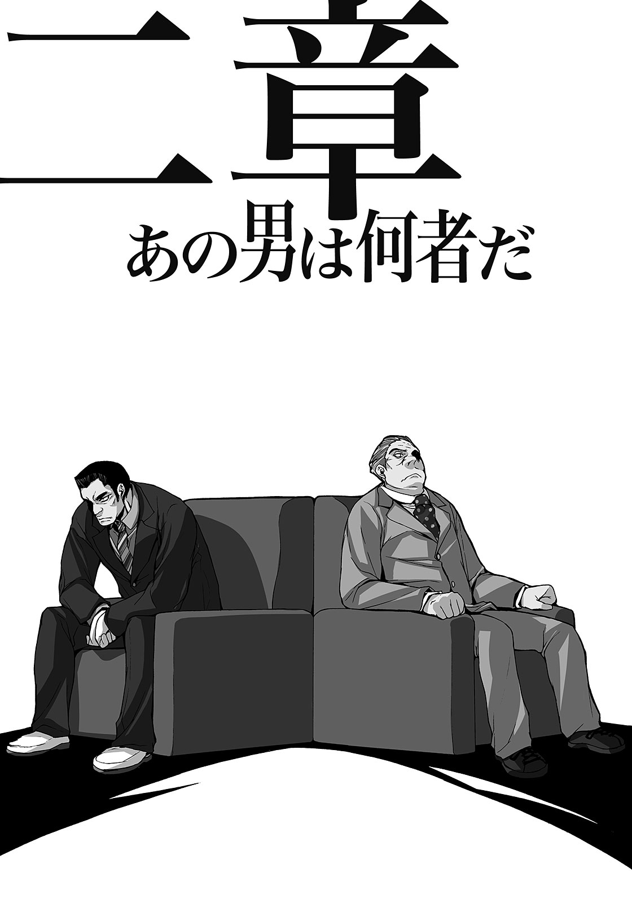
武野倉市には現在、二つの勢力がのさばっている。
一つは鉱山の権利を持ち、一般労働者から地元の暴力団に到るまで、市内に手広く根を張り巡らせている阿多村グループ。
街を実質的に牛耳り、裏で国家の法すらもねじ曲げている一面がある事から、『領主様』と渾名されて住民達に畏怖されている。
もう一つは、喜代島宗則という政治家個人を中心とする勢力だ。
こちらは阿多村とは逆に、周囲の都市から国会、各種官僚に到るまで、街の外部に広く根回ししているのが特徴である。一見すると喜代島個人の力など大企業のグループに比べれば小さいようにも思えるが、彼もまた市外の暴力団組織と手を結んでおり、社会の表裏に広く顔を利かせている権力者と言えよう。
双方共に街を軽く牛耳る事ができる力を持っていたが、住人からは、互いに拮抗して睨み合ってるだけならば何も関係はないだろうと思われていた。
ところが、ここ数年で、にらみ合いの関係は大きく崩れる事となる。
きっかけは、この街の港への再開発計画だった。
刃金市を初めとする周辺都市からの支援を受け、国際空港などの建設も含まれた一大都市開発の波がやってきたのである。
成功すれば数千億単位の利益を生む巨大事業。その開発を巡って、現在両者は深く対立していると言えた。
喜代島側は当初共同開発を唱えていたのだが、阿多村甚五郎は港の漁師達に根回しし、裏から漁港の開発反対を煽って港の値をつり上げるという工作に出る。
それに気付いた喜代島は、更に裏から手を回し、鉱山の採掘量を国でコントロールしようとした。一部のレアメタルの他に微量の金も採掘される事から、市場価格の調整という名目で動いたが、当然ながら阿多村はそれを突っぱねた。
だが、そんな通る筈も無い提案は目眩ましであり、阿多村グループがその対応に追われる隙をついて、喜代島は街の利権の一部を握り込む。
その後も様々な形で啀み合いが続いており、まさしく犬猿の仲といった空気が二つの勢力の間に漂っている。
元からそうした居心地の悪さはあったのだが──近年は『そろそろ銀山の資源が枯渇するのではないか』との噂も流れており、勢力図のバランスが崩れるのではないかという緊張状態が続いていた。
時代が進むにつれ、阿多村グループに支配された街から離れる者も多く、武野倉市は緩やかな衰退を迎えつつある。
それでも、見かけ上は平穏を保っていたのだが、そんな日々も終わりを告げた。
阿多村グループの跡取りと目されていた阿多村竜一が、何者かによって殺害されたのである。
♀♂
数日後 武野倉警察署 署長室
「これはこれは、わざわざ『先生』がお越し下さるとは」
そう言ったのは、まだ若い警察署長だった。
30代半ばであるが、バリバリのキャリア組で、昇進への足がかりとしてこの地方都市の警察署長に就任したらしい。
眼鏡の下でヘラヘラと媚びへつらう視線を向ける署長に対し、『先生』と呼ばれた50代手前の男──喜代島宗則代議士は、憮然とした表情で警察署長に言った。
「私だって、来たくはなかったんだがね」
来客用のソファにふんぞり返り、執務机の横に立つ署長をジロリと睨み付ける。
白髪混じりの髪をかっちりと固めており、小太りな身体をビジネススーツで包み込んでいる。
「是非、君の口から安心できる言葉を聞きたくてな」
「安心、ですか？」
「先日の事件についてだ。阿多村の馬鹿息子が誰かに殺されただろう」
死者を『馬鹿息子』と、マスコミの耳に入ったらかなりの騒ぎになりそうな言葉を平気で口にする喜代島。それに対し、署長は愛想笑いを浮かべたまま訂正する。
「あの、まだ殺人と決まったわけでは」
「なら、自殺として処理する気か？ 昔ならともかく、こんなネットだのなんだのが発達した社会でそんな単純な揉み消し方をするほど無能なのかね、君は」
「いえ、申し訳ありません。そのようなつもりは」
「事件にしない方向性にするというのは評価するがね。今の時点であれを自殺だなどという戯けた事をやれば、『喜代島一派の殺人を警察が揉み消した』と言われて終わりだ。ただでさえ、容疑者が私の愚息だなどという言い掛かりを付けられているのだからな」
忌々しげに喜代島が吐き捨てる。
愚息、と言ったのには理由がある。
彼の息子である喜代島堂馬は、決して出来のいい息子ではなく、若い頃は親の権力を笠に着て好き放題やっていた男だ。もっとも、現在も表舞台に立たなくなっただけで、裏で『翁華連合』と呼ばれる愚連隊と手を組み続けている。
もっとも、喜代島が懇意にしている暴力団組織と橋渡しをした為、今では翁華連合も喜代島の手駒の一つと言えるのだが。
この街に拠点を移した後、同じように地元の若者達の間で大きな顔をしていた阿多村竜一とは学生時代から何度も衝突しており、それこそ愚連隊同士の衝突となって殺し合いに近くなった事もある。
互いに醜聞になるとして阿多村、喜代島の双方で揉み消したが、街に住む者達からすれば、阿多村竜一と喜代島堂馬の不仲は公然の秘密だった。
だからこそ、街では早速『阿多村竜一を殺したのは、喜代島堂馬なのではないか』という噂が広がり始めている。
「マスコミは抑えてあるが、噂話で記事を書くクズのような雑誌もある。インターネットも最近は馬鹿にできん。くれぐれも、下らない噂が立たんようにしてもらいたいものだ」
「あの......一つ確認しておきますが、あくまで形式上という事と、無用な疑いを晴らす為に、息子さんのアリバイをお伺いする事になるかもしれませんので、どうぞお気になさらず」
警察署長の言葉に、喜代島代議士は苦虫を嚙み潰したような顔をしながらも頷いた。
「......当然だ。不快ではあるが仕方あるまい。堂馬にも協力するように伝えておく」
「ありがとうございます」
媚びへつらいながら安堵する署長に、喜代島が更なる懸念を口にする。
「それより、そんな下らん噂に踊らされた阿多村の連中が、我々を逆恨みして襲撃する......などという事態にはならんだろうね。小競り合い程度ならば相手の醜聞として利用できるが、息子を失ったショックでとち狂って、私の選挙カーにトラックを突っ込まれても困る」
「流石にそこまではしないと思いますが......彼らの動向には、これまで以上に目を光らせるとしましょう」
「ならいい。それと、うちの菜々と向こうの妾腹が街を歩いている所を見かけたら、菜々ごとで構わん。補導してから私に連絡しろ」
「は、はい」
答えながら、署長は心中で大きな溜息を吐く。
──最後のは流石に無理がある。小中学生じゃあるまいし。
阿多村と喜代島の関係を更に特殊なものにしているのは、一重に阿多村家の三男と、喜代島家の長女との関係だった。
本来交わる筈のないその二人は──如何なる運命の悪戯か、両家の関係が最悪になるよりもずっと前から互いに愛し合っていたのである。
♀♂
同日 阿多村本家 居間
「何が『事件と事故の両面から調べる』だ！ 巫山戯やがって！」
わざわざ数日前のネットニュースを見て、タブレットＰＣの画面に怒鳴りつける男が一人。
居間というには些か広大な空間の中、部屋には数名の男女の姿があった。
怒鳴り散らしたのは、阿多村家の次男、阿多村竜二である。
先日葬儀を終えたばかりであり、ようやく落ち着きを取り戻した所で情報をチェックした所、記事で今のような書き方がされていて激昂したようだ。
身長は１９０センチを超えるだろうか。強面の顔と合わさって、部屋の隅にいた若い家政婦がビクリとその身を震わせる。
すると、身長こそ竜二より低いものの、筋骨隆々としたその肉体から、彼以上の威圧感を放っている男──阿多村家当主、阿多村甚五郎が声を上げた。
「落ち着け、竜二」
「これが落ち着いてられんのかよ親父！ 喜代島の野郎に！ 兄貴が！ 殺されたんだぞ！」
「そう決まったわけじゃない。両者の共倒れを狙った外部の人間かもしれん。迂闊に動けばそれこそ阿多村が潰れるぞ」
「冷静にソロバン弾いてる場合か!? 親父は兄貴の事が大事じゃねえってのかよ！」
興奮する竜二に、阿多村がハッキリと告げる。
「ああ、死んだ男よりも、今はお前の方が大事だ」
「う......」
「ガタガタ騒ぐな。焦りを顔に浮かべるな」
豪放磊落といった言葉が似合う外見をしているが、目はどこまでも冷たく、刺すような鋭さで竜二を見据えていた。
「お前はもう、阿多村グループの後継者なんだぞ」
「......あ、ああ」
上から無理矢理押さえ付けられるような圧力を感じ、竜二の頭は強制的に冷やされた。
当主である甚五郎は、周囲の家族や付き人、家政婦に到るまで、部屋の中にいるすべての人間に対して言葉を紡ぐ。
「とにかく、弱みは見せるな。こんな時だからこそ、いつも以上に慎重に行動しろ。だが、動くなと言うわけじゃない。目を開いて、耳を澄ませろ。街の連中の反応から目を逸らすんじゃあないぞ」
「動かざるを得ない時があれば、我々が動きますので御安心を」
そう言ったのは、部屋の隅に立っていた30代半ばと思しき男。
阿多村と懇意にしている暴力団、富津久会の若頭である宇田川だ。
「ああ......だが、お前達もあまり派手な動きはするな。組の実入りが不安なら、減収の分は俺が補償する。組長にもそう伝えておいてくれ」
「痛み入ります」
頭を下げる暴力団の若頭と、一応はカタギという事になっている父親。
その二人を見比べて、自分の父親の方が余程ヤクザだと思う竜二だが、もちろんそれは口には出さなかった。
普通の街ならば、暴力団の若頭が屋敷に直接出入りしているなど、それだけでスキャンダルとなりえる。だが、阿多村は平気で彼や構成員を本邸に呼びつけていた。流石に組長を直接呼んだことはないものの、若頭である宇田川もそこそこ街の裏側では顔を知られている存在だ。
つまりは、その程度の事はスキャンダルにすらならない。
阿多村グループは、少なくともこの街では、そこまでの盤石な基盤を造り上げているのだ。
「街の噂と言えばですが......竜一さんの事件と直接関係あるかは解りませんが、ここ数日、妙な噂がありましてね」
「噂？」
「ええ、阿多村と喜代島に関する噂を、意図的にばらまいている奴がいるようです」
「そんなのは、連中がいつもやってる事だろう。懲りない連中だ」
竜二が吐き捨てる。
嫌がらせのデマなどは、いくらでも封殺できるし無視もできる事だと考えたのだが──
「いえ、それが今回は、双方が不利になったり有利になったり、バラバラの情報が流されていまして......」
「事件のすぐ後だ。街の連中が自分勝手な推測を噂してるだけだろ」
「問題は、その噂の中に、いくつか事実が混じっていた事です。たまたま当たったというには、我々絡みのネタまでありましたので、組でも情報を追っています」
「......」
その言葉に、室内にいた誰もが沈黙する。
「あとは......そうですね。和久ぼっちゃんと、喜代島のお嬢さんの噂話もありました」
「えッ......」
それに、部屋にいた男の一人が露骨に反応した。
まだ二十歳になるかならないかといった年齢の男だ。
彼の名は阿多村和久。
阿多村家の三男であり、父や兄と違って、特別に背も高くなければ肉厚でもなく、人畜無害といった雰囲気を放っている。
「和久、手前......」
そんな弟に対し、竜二が露骨に眉を顰める。
「まさか、まだあのアマと付き合ってやがんのか」
「......兄さんには、関係ないだろ」
「関係あるに決まってんだろうが！ 手前が噂の元を向こうに流してんじゃねえだろうな！」
「別に迷惑はかけてないよ。噂を流そうにも、そもそも俺は兄さんや親父の裏話を聞ける立場にいないしさ」
目を逸らしながら言う和久の胸ぐらを摑み上げ、竜二が怒鳴りつけた。
「手前の存在自体が迷惑だっつってんだよ！ うす汚え売女の血が混じってる癖に......」
「竜二」
次男の言葉を遮る形で、甚五郎が静かに名前を呼ぶ。
それだけで、竜二は背に冷や汗を滲ませ、それ以上何も喋れなくなった。
一見冷淡な父の言葉の裏側に、明確な怒りを感じたからだ。
「薄汚い女？ お前、俺が選んで買った女を、薄汚い呼ばわりか？」
「あ......いや......」
どこかツッコミ所がズレているという事は部屋にいた誰もが気付いていたが、甚五郎の言葉を指摘する者はいない。皆知っているからだ。阿多村甚五郎という男にとっては、見合い結婚の妻も、金で関係を持った妾も、等しく『所有物』に過ぎないのだと。そして、息子である竜二も和久もやはり『家族』というより『所有物』として見ているのだという事を。
「前にも言ったと思うが、確かにお前にとっては母親が違うが、半分俺の血が流れてるって意味じゃ、俺にとってお前も和久も一緒だ。竜二、お前はそんな俺の血を無視して和久を軽んじたのか？」
「い、いや......」
「お前は、遠回しに俺を侮辱してるのか？ 父親の、この俺を」
父親の声に、竜二がブルリと背中を震わせる。
竜一も竜二も学生時代は札付きのワルとして有名であり、街でいくら悪さをしようとも、親に咎められる事はなく、寧ろ大抵の事は揉み消した。
だが、喧嘩で自分より強い男が現れた時に『俺の親父に頼んで、手前の家族を路頭に迷わせてもいいんだぞ』と言って脅した時、彼は父親の甚五郎にツルハシで太股を貫かれた。
──「勘違いするな」
悲鳴をあげて床を転がる竜二の耳に、父親の冷たい声が響き渡る。
──「お前は俺の大事な息子だ。一人か二人殺しても揉み消してやる。だが、俺の地位までくれてやったつもりはないし、手前にアゴで使われるつもりもない」
──「どうして俺が、お前の為に手間かけて他人を路頭に迷わせなきゃいけねえんだ？ 結構手間なんだぞ？ マスコミにバレねえように人間一人の人生を潰すってのはよ。しかも、お前が堂々と俺の名前出して相手に『家族を路頭に迷わせる』って予告までしてんだからな。そんな厄介な仕事をさせて、お前は俺に何か報酬をくれるのか？」
──「俺の名前出して脅す暇があったら、闇討ちでもなんでもしてそのガキを潰せ。うっかり殺しちまったら、その時は揉み消してやってもいい」
父親の独特な倫理観を思い出しながら、竜二は太股の古傷が疼くのを感じていた。
「待ってくれ親父、悪かったよ。俺はそんなつもりはねえ、失言だった」
「そうか、ならいい」
顔を青くしながら言う竜二にそう答えると、続けて和久に目を向ける。
「それで、どうなんだ？ お前はまだあの喜代島の小娘と付き合ってるのか？」
「......最近は、会ってもいないよ。会える空気じゃないだろ」
「そうか。別に俺の知った事じゃねえが、喜代島に利用されて阿多村の弱みになるような真似はするなよ。その時は、お前はともかく、その小娘を潰す事になるからな」
「なッ......彼女は家のゴタゴタに関係ないだろ！」
焦りながらも真っ向から父親を睨み付ける和久に、甚五郎が言った。
「お前と小娘にその意図があろうがなかろうが、喜代島がそう受け取ると本気で思ってるのか？ ここで俺が『好きにしろ』と言ったところで、お前一人で問題が解決するとでも？ 家のゴタゴタと繫げて噂されてるってのに、どうして『関係無い』と言い切れる？」
「......」
和久は黙り込むが、それでも父親から目を逸らさない。
「まあいい。喜代島は排除するが、政治家でもなんでもない娘の方は俺にとっちゃどうでもいい。ゴタゴタが片付くまでは、大人しくしとけ」
「......解ったよ、父さん」
「それにしても、俺を正面から睨みつけるとは......和久は竜二より肝が据わってるな」
クツクツと笑う父を見て、竜二がギリ、と歯を嚙みしめながら和久を見た。
だが、下手に何か言うとまた父の不興を買うと思ったのか、特に声をあげる様子はない。
少しの間を置いて、甚五郎は再び使用人達も含めた室内の面々に告げた。
「お前らも、下手な噂に踊らされるな。ましてや、噂の元になるような真似をしねえように気を付けろ」
「ああ、そうそう。それで思い出しましたが......」
甚五郎の言葉が途切れるのを待ち、宇田川が口を開く。
「なんだ」
「オリハライザヤ、という名前に心当たりは御座いませんか」
「......いや、初耳だな」
部屋を見渡すが、竜二も和久も首を傾げていた。
「そのオリハラ......なんとかって奴がどうした？」
「オリハライザヤ、ですね。いえ、例の噂話を調べていたら、何度か聞こえて来た名前なんで気になりましてね。直接噂話を広めてる本人かは解りませんし、ただの偶然かもしれませんが、知らない名前でしたので一応と思いまして」
「調べてはみたのか？」
「市役所に裏から当たって見ましたが、少なくともこの町の人間じゃないようです。まあ、偽名の可能性もありますが......。ネットで調べても良く解りませんでしたね。せめて漢字が分かればまた違ったんですが」
『折原』や『織原』はともかく、『イザヤ』をどう変換するのかが宇田川達には解らず、カタカナのまま検索してもろくな結果は出てこなかった。伊座也や伊座夜で検索してみても同様であり、そこで話は止まってしまう。
「まあ、名前を出した連中も『友達の友達』ぐらいの感覚で、直接そいつに会ったってわけじゃないらしいんですが、一応今後も追ってみます」
「ああ。些細な事も見逃すな。この時期に新しく街に入って来たなら、喜代島の一派かもしれないからな。お前達も頭に入れて警戒しとけ」
部屋全体に向けられた甚五郎の言葉を耳にし、一人、動揺している者がいた。
──もう遅いですよ、旦那様。
家政婦の一人、古いタイプのメイド服を着た若い女が、胸の内で呟く。
彼女の名前は、新山アザミ。
雇われてまだ半年にも満たない、新入りの家政婦である。
彼女は動揺を顔に出したい衝動を抑え、あえて平静な顔のまま部屋の隅に立ち続けた。
──言えませんよね......。
──和久さんと喜代島のお嬢さんの関係。
──それをオリハラさんに教えてしまったのが、この私だなんて。
♀♂
２日前
オリハライザヤと名乗った男は、実に奇妙な男だった。
休暇の日に買い物に出かけ、公園で休んでいた所──
小学生ぐらいの子供二人に押されてベンチの横まで来た車椅子の男が、昔からの知り合いのように声を掛けてきたのである。
「やあ、どうしたんだい。なんだか浮かない顔をしてるね」
「......どなたですか？」
新手のナンパかと思ったが、それにしては子供二人を連れての声かけなどアグレッシブ過ぎる。本当に見覚えのない顔だった為、とりあえずアザミは軽く受け流そうとした。
だが、彼は続いて、無視できない事を口にする。
「いやあ、会うのは初めてだけど、君は有名だからね。新山アザミさん」
「......どうして、私の名前を」
「有名だってば。『領主様』の屋敷で働いてるなんて、それだけで庶民の憧れだからね」
「......！」
慌てて彼女は周りを見た。
『先生』の一派が、自分から屋敷内の情報を得る為に接触してきたのかもしれないと考えたからである。
「ああ、違う違う。別に君をどうこうしようって話じゃないよ。そうだとしたら、こんな所で声を掛けないで、夜道で車を使って攫うに決まってるだろ」
サラリと物騒な事を言った後、男は自ら名乗りを上げた。
「俺は折原臨也。この街に来たばっかりでさ。あまり街のしきたりとか暗黙の了解とか解ってないんだ。だから、色々な人に聞いて回っててね」
「オリハラ......イザヤ」
変わった名前だと思いつつ、子供が一緒という事に少し安心したのか、とりあえず逃げずに話を聞いてみる事にした。
「ああ、公園を歩いてたおばさん達に聞いてたら、家政婦を沢山雇って景気がいいって話になってさ。そしたら、『ほら、あそこにいる子......新山さんちのアザミちゃんも、お屋敷のメイドさんよ』なんて言うもんだから、気になってね」
噓だ、とアザミは思った。
自分は街の外から来た人間である。
この辺りの公園を歩いている主婦が『新山さんちのアザミちゃん』などという言い方をする筈がない。
その噓を指摘すべきか、敢えて騙されたふりをすべきか迷っているアザミに、イザヤと名乗った男は楽しそうに会話を続けた。
「ああ、別に阿多村家の秘密を教えろとか犯罪の証拠を教えろとか言うつもりはないよ。言っちゃ悪いけど、家政婦さんにまでそんな秘密が漏れてるような家なら、とっくに喜代島って人に潰されてるだろうしね」
「......」
「俺はただ、この街の空気を知りたいだけなんだよ。君が友達につい話すぐらいの噂話でいいんだ。たまたま道端で聞かれても問題ないぐらいの。とっくにこの町の中じゃ有名になっている話でもいいよ」
「それ、私に何か得があるんですか？」
アザミの問いに、男は答えた。
「そうだね。お金で答えてもいいんだけど、それだと本当に君がスパイみたいに思われるかもしれない。それが嫌なら、噂話には噂話で返してあげてもいいよ」
「例えば？」
「君が気にくわない人の弱みとかかな。その程度ならすぐに調べられるよ」
「それが、喜代島代議士とかでもですか？」
冗談だと思ってクスクスと笑う彼女に、イザヤはあっさりと答えた。
「もちろん」
「......」
「そのぐらいの立場の人だと、少し時間は貰うかな。ああ、でも一番時間がかかるのは、真面目に働いているサラリーマンの人とかだね。目立つ弱みとか無い人もいるし、一般人過ぎると、とっかかりを見つけるのに時間がかかるんだ」
本気なのか、それともやはり冗談なのか。
どう返していいのか解らず、アザミは取りあえず話を逸らす事にした。
「足、怪我か何かですか？」
「ああ、昔ちょっと、東京でヤンチャしてね」
「変わった車椅子ですね」
「一応特注品なんだ。電動でも動くんだけど、基本的に自分の手で動かすか、あの子達に押して貰ってる」
その言葉を聞き、アザミは近くを散歩していた子供達に目を向けた。
「弟さんと妹さん？」
「ああ......まあ、親戚の子供を預かってるみたいな感じかな」
──みたいな、って、まさか他人？
イザヤの言葉が引っかかったが、とりあえず件の子供達が笑っているのを見て、気にしない事にする。
「まあ、とりあえず、子供が付いてくる程度にはいい人なんですね」
「どうかな。ハーメルンの笛吹きかもしれないよ？」
おどけたように言うイザヤに、アザミはクスクスと笑った後に、ゆっくりと言葉を紡ぎ出した。ここまで話して、何も『噂話』を教えずに別れるのも悪いと考えたのだ。
だが、彼女に話せる噂話など、本当に限られている。
「......そうですね。本当に噂話っていうか、過去の話なんだけど......」
そして、彼女は世間話のつもりで話し始めた。
自分が聞きかじった噂話を。
元々何も知らぬ母子家庭の子として育った少年がいた。
彼は、とある代議士の娘と恋に落ち、相思相愛の関係となる。
だが、母親が病死し、父親からの迎えが来る。
どうやら少年は愛人の子だったらしく、数年前に本妻が事故死していた事も考え、認知して引き取る事にしたそうだ。
だが、そこで少年は知ることになる。
自分が愛した少女が、父親と敵対する男の娘だったという事を。
「なるほどねえ、まさに現代のロミオとジュリエットっていうわけだ。オチは両方自害かな」
「サラリと人でなしな事を言いますね......」
「人間ならではの意見だと思うけど？」
肩を竦めて笑う臨也に、アザミは小さく溜息を吐きだした。
「妾腹が急に遺産相続者候補になった事もあって、ご兄弟の竜一さんと竜二さんからは相当疎まれていたようです。旦那様の目の届かない所で虐めみたいな目にもあっていたとか」
そこで自分が言ってはならない事情まで話し始めている事に気付き、アザミは顔を青くしながら言った。
「あ、あの......この事は、私が言ったとは......」
「大丈夫だよ。情報源の秘匿も仕事の内だからね」
クスリと笑うイザヤは、空を見上げながら半分独り言のように語り出す。
「ロミオとジュリエットの一番好きな所はね、二人が死んだ後も少し話が続いた事さ。二人が悲劇的な最期を迎えた時点で話を切らずに、その後の登場人物達の反応を観客に見せつける。これが実にいい。まあ、これは完全に俺の好みだけどね。やっぱり悲劇があったなら、それを引き起こした人間達の反応も見てみたいっていう欲求が俺の中にあるんだよ」
「そういうものですか」
「ああ、悲劇の結末を迎えた人間を見るのも好きだけど、それを目の前で突きつけられた人間達がどう反応するのか、それが俺にとって重要な事だ」
「あまり趣味が良くないですよ」
呆れたように言うアザミ。
だが、イザヤは『良く言われるよ』と言って再び肩を竦めた。
「まあ、勘違いして欲しくないけど、俺は悲劇だけが好きってわけじゃないよ。喜劇だって、ハッピーエンドだって大好きさ。ただ、そこに人間の心の移り変わりがあるだけで満足なんだ」
そこまで言った所で、イザヤの懐から携帯の着信音が響いた。
「おっと。メールだね。......そろそろ帰らなきゃいけないみたいだ。ありがとう。助かったよ」
「いや、そこまでの事は」
「君とはまた会いそうな気がするよ」
やはり新手のナンパだったのではないかと思わせる事を口にした後、イザヤは子供達を呼び、そのまま公園を去って行った。
最後にアザミの方を振り返り、朗らかな声を上げながら。
「その時までに考えておいてね。君が弱みを握りたい人の名前をさ」
「......」
せめて連絡先を聞くべきだろうか？ それとももう関わらないで忘れた方が良いだろうか？
そんな事を一瞬迷った彼女の耳に、少年の声が響いてくる。
「ねえねえ臨也さん！ 『めかけばら』ってなあに？」
「......あ」
少し離れて遊んでいたので大丈夫だと思ったが、どうやら自分の話を聞いていたらしい。
気まずくなり目を逸らすアザミを余所に、臨也は楽しそうに笑いながら答えた。
「庶子って事さ。嫡子の逆って言った方が解りやすいね。まあ、色々な人間模様が生まれるから俺は好きだよ。嫡子の人と幸せに暮らす庶子の話も聞いたことがあるし、もちろん逆もまた然りだ。ああ、隠された血縁者っていう情報は聞くだけでワクワクするよねえ」
──この人、もしかして最低なんじゃ。
連絡先を聞くのは止めておこうと心の中で頷くアザミ。
そんな彼女の前で、少年が手乗り文鳥のように首を傾げた。
「しょし？ ちゃくし？ なんですかそれ？」
「なんでも俺に聞くのは良くないよ。自分で辞書で調べたらどうだい？ なんだったら、俺以外の人に聞くといいよ。そこにいるアザミさんとか」
「......」
ジト目で臨也を見つめるのは、少年の隣にいた少女。
どうやら彼女は意味が解っているらしい。
「......最低だね。臨也お兄ちゃん」
「良く言われるよ、ありがとう。それじゃあ、そろそろ戻ろうか」
「......」
小さな溜息を吐く少女は、アザミの方をジッと見て、去り際に小さく口を開いた。
「お姉ちゃん、あんまり、この人に関わらない方がいいよ？」
瞳の中に暗い色を湛え、アザミにだけ聞こえる声で言葉を紡ぐ。
「......私達みたいに、人生滅茶苦茶にされるから」
♀♂
現在
そんな事を思い出した家政婦の前で、竜二が苛立たしげに声を上げた。
「俺らに心当たりがねえって事は、そのオリハラって野郎は喜代島の手下に違いねえぜ」
「まあ、どちらの陣営にも属していない、無関係な一般人や雑誌記者という線もありますが」
決めつけは早いと、宇田川が補足し、甚五郎がそれに頷いてみせる。
「ああ。だが、どっちにしろ俺らの事をぺちゃくちゃ噂されるのは困るからな。見つけたら適当に口止めしておけ。金で止められるならそれで良し。欲をかくようなら、相応に締め上げろ......と言いたい所だが、そうさせる事が喜代島の目的かもしれん。迂闊に手を出すなよ」
当主である甚五郎の言葉に、部屋にいた全員が頷いた。
ただ一人、アザミだけが激しく目を泳がせる。
もっとも、頷いたまま顔を下に向けていた為に、誰もそれを気付く事はなかったのだが。
そして、部屋の中にもう一人、心中で渋い顔をしている者がいた。
富津久会若頭の宇田川である。
彼は一つ、意図的にこの場で言わなかった情報がある。
街に流れている噂の中に紛れた『本当の話』の一つに、次のようなものがあった。
──『富津久会の内部に、喜代島一派のスパイが数人居る』というものである。
無論宇田川は自分がそのスパイではない事は理解しているが、明らかにこちらの情報が向こう側に流出しているのは確かだ。恐らく情報を流しているのは一人二人ではないだろう。
だが、その噂が真実だとこの場で認めるわけにもいかない。
──だが、解せないな。
宇田川は思う。
そのような噂を意図的に流したものがいるとすれば、誰が、何の為にやったのだろうか？
仮に噂を流しているのが喜代島一派なら、わざわざスパイの存在をバラすような真似をするとは思えない。疑心暗鬼による内部崩壊を狙っているのかもしれないが、だとしたら街の噂の中に混ぜるようなまどろっこしい真似をする意味が解らない。
阿多村陣営だとしたら、富津久会の名を下げるような真似をするのは何故だろうか？
富津久会に取って代わり、阿多村家に取り入ろうとしている組織でもあるのだろうか？
いくつもの疑問が浮かんでは消えていくが、どうにもハッキリとした答えが出ない。
ただ一つのヒントだけを頼りに、その状況を打開させるしかないのだ。
──まったく、嫌な傾向だ。
オリハライザヤ。
本当にその男が噂の中心にいるのならば、なんとしても探し出さなければならない。
例え、連れてきた時に死体になっていたとしても。
今は中立だとしても、喜代島の一派に取り込まれたら、その時点で阿多村一派にとっては重要な厄介事となるのだから。
♀♂
一週間後 深夜 ナイトクラブ『闇坊主』
「オリハライザヤ？ 誰だそいつは」
街の海沿いにあるナイトクラブのカウンター席で、鋭い目つきの男が眉を顰めた。
派手なジャケットを纏った若い男で、一見するとまともな顔立ちをしているのだが、その立ち振る舞いからどことなくカタギの人間とは違う空気が滲み出している。
「今、富津久会の連中が探ってるらしい」
隣に座っていた身長２メートルを超すスキンヘッドの巨漢が、静かに頷く。
横幅も十分に広く、隣に座っていると言っても、椅子を一つ空けてる状況だ。
そんな巨体を大きく上下に揺らして深呼吸し、スキンヘッドの男は言った。
「なんで探してるのか、富津久にいる昔の知り合いを脅して聞いてみたんだが......なんでも妙な噂をばらまいてるとかなんとかでな」
「噂？」
「お前の親父さんと阿多村の連中のゴタゴタ回りを、ある事無いこと抜かしてるんだとか。お前の妹と阿多村の三男坊の関係とかも含めてな。なあ堂馬、お前がこうやってまだ俺ら『翁華連合』と繫がりがあるってのも、バッチリ噂になってるらしいが......お前は心当たりねえか？」
「ねえな......。糞、そのオリハラとか言う野郎、フリーの記者か何かか？ 巫山戯やがって。何人か事故死したってのに、まだ懲りてねえのか」
堂馬と呼ばれた男は、物騒な言葉を口にしながらグラスを呷る。
彼は喜代島宗則の長男であり、今回の阿多村竜一の事件に関しては、近しい者からすら『学生時代からの因縁に、ついにケリをつけたのだろう』という声が上がっていた。
確実なアリバイはあるが、こうして『翁華連合』の人間と繫がりがある以上、人に作業をやらせたとするならば、主犯の一人として疑われていておかしくない。
過去に阿多村や喜代島の争いを面白おかしく記事にしようとしたフリーライター達もいたが、『ある一線』を越えた者達は、水難事故や失踪という末路を辿った事を堂馬は知っていた。
なので、そのオリハラという男も噂をばらまく事で街をつつき、その反応を元に記事を書いて雑誌に売りつけようとする者達なのだろう。
そう考えた堂馬は、苛立たしげに言った。
「ちッ......。それもこれも、竜一の馬鹿が勝手に死にやがったからだ。あの野郎は俺がぶっ殺してやる予定だったんだが......」
「念の為に聞いておくが、本当にお前じゃないんだろうな」
「当たり前だろうが！」
スキンヘッドの巨漢の言葉を聞き、グラスをカウンターにドン、と置きながら叫ぶ。
「噂じゃ目ン玉抉られてたって話だが、俺なら全身の皮まで剝いでやるってんだ！ そっちこそ、翁華連合の誰かが勝手にやらかしたなんてオチじゃねえだろうな？」
「無い、とは言い切れんが、アンタに迷惑を掛ける形にはしねえさ。跳ねっ返りがいたとしたら、俺が全部ねじ伏せる」
「まあ、蓼浦の実力は解っちゃいるがよ」
蓼浦と呼ばれたスキンヘッドの男は、暴力団に一切関わりを持たない愚連隊──俗に『半グレ』と呼ばれる無法者達の集団、『翁華連合』のリーダーだ。
堂馬にとっては昔馴染みであり、自分が悪さをする時に隠れ蓑として利用してきた男でもある。もっとも、蓼浦も堂馬の父の喜代島の権力に助けられた事もあるので、互いに利用しあう関係と言うのが適切だろう。
その巨体が示す通り、常人離れした膂力を持ち合わせており、軽自動車一台程度ならば一人で裏返す事もできる力自慢だ。
翁華連合の全勢力は堂馬も把握していないが、単純に人数だけを考えるならば、富津久会よりも多い。富津久会は昭和の時代から一本どっこでやってきた組を阿多村家が抱えている形なので、より大きな組系列には所属していない。なので、富津久会と揉め事を起こしても他の街から追い込みをかけられる心配はないのである。
それが、翁華連合という半グレが富津久会という組織と対抗できる理由なのだが──それを知らない半グレの人間が『暴力団と拮抗した力を持っている』のだと思い、勝手に所属して人数が膨れあがりつつあった。
現在ナイトクラブの中にいるのも、ほぼ全員が翁華連合の面子であり、仮にここに富津久会の人間が攻めてきたとしても、相手が銃器を持ち出さない限りはどうとでも対処できるだろう。流石にサブマシンガンなどを乱射されたらどうしようもないが、そんな大ごとを起こすほど相手が迂闊ではない事も知っている。
なので、堂馬にとってはある意味実家よりも安全な場所としてこの溜まり場を利用していたのだが──
そんな彼の背後から、ややしわがれつつも、凛とした調子の声が掛けられる。
「失礼。喜代島堂馬さんでいらっしゃいますかな」
「ああ？」
声をかけてきたのは、この場に似付かわしくない、喫茶店のマスター風の老人だった。
背筋が真っ直ぐに伸びており、秘書や執事といった職業がまず頭の中に思い浮かぶ。
その佇まいから、堂馬はまた父親の使いがやってきたのだろうと判断した。
「親父に伝えておけ。もうガキじゃねえんだから、一々指図するなってな」
「いや、某は喜代島宗則様の使いでありませんのでな」
「ああ？」
一人称が『某』の時点で、執事や秘書という可能性はだいぶ薄らぐ。
──っつーか、ソレガシって......時代劇かよ。
ならば、この老人は一体誰なのだ？
疑問に思うが答えは出ない。富津久会の人間という可能性もあるが、それにしては一人でこんな場所まで来るとも思えなかった。
──なんなんだ、このジジイは？
追い払っても良かったのだが、もしも父親以外の政治家の関係者だったりした場合には少し不味い事になる。
28歳になって一応その程度の分別はつけられるようになったのだと自分で納得しながら、堂馬は静かに語りかけた。
「で、あんた誰だって？ 太秦の映画村とかから来た人か？」
「失礼、某は坐傳助と申しましてな。年寄り臭い喋り方は癖なんで黙殺して下さらんかな」
「で、そのソゾロさん？ が、俺に何の用すか」
「某の雇い主が、堂馬殿と電話で話したいとの事でしてな」
懐から取り出した携帯電話を堂馬に向かって差し出す老人。
「あぁ？」
「通話は繫がっておる故、どうぞ耳に」
──......携帯電話型爆弾とかじゃねえだろうな？
訝しみつつも、堂馬はそっと携帯を耳に当てた。
「もしもし」
『ああ、初めまして。喜代島堂馬さんですね？』
「誰だ、てめぇ？」
一体なんの悪ふざけだと思っていた堂馬だが、その直後、携帯電話の向こうから更に巫山戯た固有名詞が飛び出した。
『イザヤですよ。折原臨也』
「......はぁ？」
一瞬混乱した後、すぐに冷静さを取り戻し、横に座る蓼浦に視線を向けながら、あえて相手の名前を復唱する。
「オリハライザヤだと？」
「！」
蓼浦が目を細め、続いて老人に目を向けた後、ゆっくりと椅子から立ち上がった。
少しだけ席を離れると、そのまま少し離れた場所に居た翁華連合にハンドサインを送る。
『これから揉め事が起こる可能性が高い』という意味の合図だ。
意味を理解した部下達がさっと立ち上がり、店内に僅かに存在していた翁華連合以外の一般人を退店させるべく動き始める。
もっとも、翁華連合のホームである店に来る『一般客』もその辺りの暗黙のルールは理解しているようで、特にごねる事もなく店から出て行く。
そんな作業が裏で行われている間に、堂馬は携帯電話の向こう側の相手と会話を続けた。
「オリハライザヤねぇ......聞いた事ねえ名前だな。どこの田舎者だ？」
『やだなあ、腹の探り合いは無しにしましょうよ。あなたに色んな街の情報を持ってくる蓼浦さんって、脳みそまで筋肉が詰まってるように見えるけど、街の情報を聞き分けられるぐらいには頭のいい人でしょう？ 俺の存在に気付いてないわけがない』
「......手前、マジでなんなんだ？ 何しにこの街に来た？」
舌打ち混じりで言う堂馬に、臨也と名乗った男は答えた。
『俺は情報屋、って奴ですよ。売り物にする情報を、貴方からも仕入れたいと思ってるだけです。もちろん対価はお支払いしますよ？ お金でもいいですし、なんだったら、貴方が欲しがってる別の情報でもいい』
「情報屋だぁ？ んな事言ってすり寄ってきた奴は過去にゴマンと居たが、どいつもこいつも、ただの小遣い稼ぎ目当てのクズだったぜ。もちろん、話を聞くだけ聞いて丁寧にシメてやったがな」
『それは怖い。シメられたら堪りませんからね。話だけにしましょうか？』
おどけたような情報屋の声。
堂馬は警戒を解かぬまま、慎重に言葉を選んだ。
「そいつはそいつで気にくわねぇな。時期が時期だ。仮に何か俺に有益な事を抜かしたとしても、阿多村の連中が送り込んできたスパイにしか思えねえぞ」
『確かに。でも、俺のバックに誰がいるかなんて無意味な話ですよ。仮に俺が貴方の父親や、その周りの政治家の人に頼まれてこの街に来たんだとしても、それを貴方に伝える事はない。もしかしたら、死んだ阿多村竜一さんに頼まれてここに来たのかもしれませんよ？ 貴方を窮地から救う為に』
「何言ってやがる。あの馬鹿が俺を助けるわけねえだろうが」
『どうでしょうね？ 過去に一時期だけ、手を組んでた事があるんでしょう？ 数年前、街に来た他県の暴走族を追い払う時にね』
堂馬は思わず目を細める。
確かにそんな事もあったが、もう10年も前の話だ。
しかも、完全に裏で手を組んでいた為に、その事実を知るのは阿多村が纏めていた不良軍団と、まだ小さな暴走族に過ぎなかった頃の翁華連合の一部の幹部しか知らない筈の話である。
「......知らねえな。そんなガセネタを摑まされるようじゃ、手前も大した事ねえな」
『これは失礼。じゃあ、その後貴方の妹の菜々さんを阿多村竜一さんが悪戯しようとしたことで関係が決裂したっていうのも、ガセネタなんでしょうね』
「......」
──何故だ。
──何故こいつは、そこまで知ってる？
──あれを知ってる奴は、本当に限られてる筈だ。蓼浦ですら知らねえ筈だ。
──竜一か......？ まさかマジで竜一の知り合いなのかこいつ......？
──いや、竜一が自分から言うわけがねえ。
堂馬は頭の中で警戒音を鳴らしつつ、あくまでも余裕ぶろうと鼻を鳴らす。
「......手前、頭になんかヤベェ蟲でもわいてるのか？ それとも、ハーブでもやり過ぎて脳味噌がハーブ畑になっちまってるのか？」
『俺がイカれてるかどうかっていう意味なら、確かに一般人から見ればイカれてるのかもしれませんね。まあ、直接お会いできればハッキリすると思いますよ。坐さんが案内するんで、俺の所まで御足労頂いていいですか？』
「はッ......いや、遠慮しとくぜ。お前、イカれてんじゃなくてタダのアホだわ」
堂馬はニヤリと笑いながら、背後にいる翁華連合の男達に聞こえるように大声で言った。
「俺が手前の所に行くんじゃねえ！ 手前の方がここに来るんだよ！」
『......』
「このソゾロとかいう爺さんをぶち殺されたくなかったら、それしか選択肢はねえぞ。こっちはこの爺さんの爪剝いで、手前の住所だのなんだの調べて、お前のベッドの横でバーベキューパーティーやってもいいんだ。家が焼けるまでな」
残忍な笑みを浮かべて、堂馬はジロリと老人に目を向ける。
「とりあえず五百万だ。腕利きの情報屋さんだったら、そのぐらいは余裕だろ？」
既に店内から一般客は退出しており、店員は見ない振りをしていた。
出入り口と裏口への通路の前には数人ずつ翁華連合のメンバーが立っており、老人を逃がさないように配置されている。
「ま、そういう事だ。イカれ野郎に雇われた不運を呪うんだな、爺さん」
憐れみを込めた堂馬の言葉を聞いても、坐という名の老人は表情を変えなかった。
ただ、眼鏡の位置を僅かに直し、小さな溜息を吐き出すのが見える。
電話からは、おどけたような雇い主の声が響いていた。
『なんて事だ。君には敬老の精神ってものはないのかい？』
「こんな場所に爺さん送り込む手前に言われたかねえな」
──ふん、強がりやがって。
──爺さんの悲鳴を聞かせてみるか。
目で合図を送ると、翁華連合の若いメンバーが坐に背後から歩み寄る。
手にはワインの瓶があり、それで軽く殴りつけようという腹の内だろう。
──その反応次第で、この爺さんが捨て駒かどうかを......
そこまで考えた所で、電話の向こうから反応があった。
『っていうかさ、堂馬さん。値段の設定を間違えてるよ』
「......あぁ？」
『本当に坐さんが捕まったなら......俺は一億出しても惜しくないと思ってるよ？』
ボグリ、と、堂馬の背後から鈍い音が響き渡る。
ワインボトルで殴りつけた音だろうと思ったのだが、続いて堂馬の耳に飛び込んできたのは、翁華連合の若者の悲鳴だった。
「ああぁぁあ!? あっがぁぁああ！」
「!?」
見ると、そこではワインの瓶を持っていた筈のメンバーが床に転がっており、肘と肩の関節が外れて奇妙な方向に折れ曲がっている。
老人の手には、いつの間にか若者が持っていた筈のワインの瓶が握られていた。
「五百万......。ふむ、某の値段は五百万ですか」
考え込みながら周囲に視線を送り、堂馬に向かって一礼する。
「こ、この......」
一礼している隙をついて後ろから摑みかかろうとした別の男のアゴに、下から振り上げられたワイン瓶の底がクリーンヒットした。
御辞儀の動きに合わせて、瓶を持っていた片腕を背後に回転させたらしい。
アゴを割られて口から血の泡を吹き出しながら、襲撃者が床に崩れ落ちた。
呆然とする周囲の面々の前で、老人は溜息を吐きながら告げる。
「失礼ながら、それは少々、値段の設定を間違えておられますな」
堂馬にそう告げつつ、二人同時に跳びかかった若者達に手を伸ばす。
左右に広げた手の先では、それぞれの手が襲撃者達の喉に食い込んでおり、親指が喉仏を潰す形で深くめり込んでいた。
そのまま身体を回転させ、既に意識を失っていた二人を勢い良く投げ飛ばす。
「うおぉ!?」
小さな悲鳴を上げて距離を取る翁華連合のメンバー。
「貴方がたに捕まるほど老いぼれてしまっていたなら......、某には、もはや一円の価値もございますまい」
まったく変わらぬ調子で喋った後、坐はふむ、と一考する。
「ただ、『イカれ野郎に雇われた不運』というのは、正しくその通りですなあ。人生70年目にしてようやく厄年でも来たかと思ったほどです」
『聞こえてるよー、坐さーん......って、坐さんに伝えてくれます？』
携帯電話からそんな声が響くが、もはや堂馬の耳に届いてはいなかった。
「お、おい！ 何してる！ 構わねぇ！ 道具だせ道具！」
堂馬は怯えながらカウンター席から立ち上がると、携帯電話を握り締めたまま距離をあける。
それに合わせて、蓼浦の次に背の高いメンバーが、ボックス席にあった小さなテーブルを頭上に掲げて迫ってきた。
「死ね！ 老いぼれが！」
振り下ろされるテーブル。
坐はそれを紙一重で躱すと、ヒョイとテーブルに足を乗せ、そのまま軽く跳躍してカウンターの上に飛び乗ってしまった。
その行きがけにワインの瓶を思い切り大男の頭頂部に振り下ろす。
「がッ......」
白眼を剝いて昏倒する男。
店内に残っていた十数名の男達は、それぞれナイフやスタンガンなどを取り出しているものの、目の前の老人にそれが通用する気がせずに一歩を踏み出せずにいた。
集団でかかれば倒せるだろうが、誰もが『確実に返り討ちに遭うであろう最初の一人』にはなりたくないと互いに視線で牽制しあう。
その数秒の隙を突き、老人はカウンターの上から酒棚に手を伸ばし、アルコール濃度が一際高い酒の瓶を二本選んで摑み上げた。
「マスター、後ほど弁償いたしますという事と、先に手を出してきたのは彼らという事で......一つご勘弁願いたい」
「え？」
状況についていけずに口をパクつかせていたカウンター内のマスターに言い訳混じりの謝罪をすると、そのうちの一本の蓋を開け、その口に、いつの間にか取り出していたハンカチを詰め込むと──オイルライターを取り出して火をつける。
ハンカチの端が燃えたのを確認すると、坐はなんの躊躇いもなくそれを店の入口目がけて投擲した。
「ちょッ......」
そんな誰かの間抜けな言葉が響く中──入口近くの床で瓶が割れ、艶めかしく輝く炎が、勢い良く広がった。
「まじかこの爺ッ！」
「消せ！ 消せ！」
誰もが火の方に視線が釘付けになる。
実際、ガソリンなどではなく、アルコールによる火炎瓶は、すぐに消されてしまう事が殆どであり、カーテンなどに燃え移らなければ大した脅威というわけではない。
ただ、坐は敢えてここで示しておきたかったのだ。
自身が今摑んでいる酒は、火を放てば確実に燃えるのだと。
入口近くにいた男達が上着などをばたつかせて火を消している中、坐は既に次の動きを見せていた。
グラスを数個カウンター上に置き、カウンターから飛び降りながら、酒瓶の底でそのグラスを叩き割る。数秒の間に何度も瓶底を叩きつけられたグラスは、粉々の破片となってカウンター上に広がった。
それを手早く手の平に盛ると──野球のピッチャーのような構えで振りかぶり、思い切り店内の男達に向かって投げつける。
散弾のように広がりながら、ガラス片が露出した男達の腕や頭部に叩きつけられた。
「うがぁッ!?」
「こいつッ！ マジでやべえぞオイ！」
パニックを起こした男達は、半分は敵意を剝き出しにしつつも、もう半分の者達は、この老人相手では自分達が不利だと気付き始めていた。
「お、応援呼べ応援！ 鉄パイプでもバットでも何でもいい！ 長物用意させろ！」
「裏口から出て、誰か呼んでこい！」
♀♂
裏口
裏口のドアがドンドンと叩かれるが、その扉が開く事はなかった。
ハリガネによって、すぐ傍にあった階段の手すりとドアノブが何重にも巻き縛られており、ちょっとした力ではドアが開かないように封印されている。
そのドアに背を当てて座っているのは、中学生前後の男女が二人。
ドアは少し前からガタガタと揺れており、『くそ！ なんで開かねぇ!?』という叫びと共に、内部から拳や蹴りが叩き込まれていた。
そんな振動を背に感じながら、子供達はそれでもドアの前から動かない。
「なんか背中にドンドン響いて気持ちいいね！」
はつらつとした男子の声の横で、少女が無言のまま何かを弄っていた。
使用には本来免許が必要な、携帯電話の電波を妨害する局所的なジャマー装置である。
市販品の小さなものだが、店内の携帯を妨害するには十分な威力を持つ代物だ。
一方、少年の手には、既に使い終わった後の高枝切り鋏が握られていた。
電柱からバーの内部に伸びる電話線とネット回線を切断するのに使用したものであり、少年は無邪気な笑顔を浮かべながら、無表情でジャマー装置を弄る少女に声を掛けた。
「ねえねえ、上手くいったみたいだから、臨也さん、喜んでくれるかな！」
すると少女は、少し考えた後、やはり無表情のまま答えた。
「......臨也お兄ちゃんは、私達が失敗しても普通に喜ぶと思う」
♀♂
店内
「くそ......携帯！ 通じねぇ！ 通じねえじゃねえかよ、っダラァッ！」
そんな事を叫びながら、ちょっとしたパニックになる男達。
老人は、構わずカウンター上からガラス片を手に盛ると、再びその手を振りかぶった。
目に入ったら失明する可能性もある。
その事実に気付いた男達は、揃って老人から目を庇い──喧嘩慣れしていた筈の蓼浦でさえ、視線を一瞬外してしまった。
だが、その間にガラス片が飛来する事はなく──代わりに、バシャリという小さな水音が店内に響き渡る。
「あ......？」
同じように目を庇っていた堂馬に対し、一呼吸の間に駆け寄った坐が残っていた高濃度アルコールの酒をぶちまけたのだ。
「なッ......ちょッ......」
既に消えかけているが、その酒が燃えるというのがハッキリと目に焼き付けられたばかりである。
そして老人はピシリと背を正し、オイルライターを手にしたまま恭しく一礼した。
「それでは、折原氏がお待ちですので、御同行下さいませ」
ライターの着火石に手を置いたままの坐に、堂馬はもはや逆らう気は無かった。
ちらりと蓼浦を見るが、頰を引きつらせながら首を振っている。
その目は、『そのジジイはマジで火をつけるから、大人しくしておけ』と言っているように感じられた。
そんな様子を音や坐の声から察したのか、堂島が握り締めていた携帯電話から、カラコロと楽しそうな声が聞こえて来る。
『いやあ、迂闊でしたね。まさか、ただの老人をそんな危ない場所に送るとか思ってました？』
そして、相手の耳に届いているのかどうかも確認せぬまま、相手を慰める言葉を吐き出した。
『でも、そういう迂闊さ......俺は好きですよ？』
♀♂
翌日 歓楽街
「これは佐々崎の旦那、お疲れ様です」
朝方の路上。
富津久会の下っ端である越野が頭を下げると、汚職刑事の佐々崎はどこか覇気の無い声で「おう」とだけ呟き、そのまま立ち去ろうとした。
「あ、ちょっといいですかい」
「......なんだよ。立場上、あんまり表で一緒に居られる所を見られると不味いんだがな」
「今更って奴でしょう」
少なくともこの界隈で店を構えている人間で、佐々崎の黒い噂を知らない者はいない。
もっとも、警察にそれをタレ込んだ所で、また別の人間が同じ事をするだけだと解っている為に、店主達は敢えて彼を糾弾しようとはしなかった。自分達も脛に傷ある身の上という事から、マスコミやネットなどを利用して被害を訴える事もできない。
そんな状況の中、比較的揉めずに上手くいっている部類である越野は、佐々崎ならば何か知っているかもしれないと、駄目元で尋ねてみる事にした。
「噂なんですけどね、街に妙な野郎が来たらしいんですよ。......オリハライザヤ、って知ってますかい、旦那」
「......いや？」
極めて平静を装った佐々崎の返答だったが、その僅かな間に越野は違和感を覚える。
「本当にですかい？ まさか、マル暴の旦那がたが送り込んだ犬って事はないですよね」
「さあな......そうだったとしても、俺が知ってる筈ねえだろ」
素っ気なく言って立ち去る佐々崎。その背を見送りながら、越野は横にいた若い手下達に小さな声で告げた。
「......他の連中にも言っとけ。今後佐々崎を見かけたら、なるべく目ぇ離すなってな」
「へ？ あいつがどうかしたんすか？」
下っ端の言葉に、越野はやや自信なさげに答える。
「......いや、確信はねえんだが......オリハライザヤについて、なんか隠してる気がしてな」
♀♂
警察署内
「......気付かれたか？ いや、まさかな......」
背にじっとりとした汗を搔きながら、佐々崎は警察署の廊下で呟いた。
どうにも、別れ際の越野の疑うような視線が気に掛かる。
先日、言われるがままに折原臨也という男に対して街の状況を教えてしまったが、まさか越野からその名前が出るとは思っていなかった。
あれから時折『何か新しい情報があったら教えて下さいね』という連絡はあったものの、直接は会っていない。
──なんだって、富津久会の連中がアイツを探してやがるんだ？
素直に突きだしてしまう事も考えたが、臨也の口から阿多村家についてのアレコレを聞かされた事を喋られたら不味い事になる。
いっそ消してしまうかと思ったが、流石にリスクが大きい上に、返り討ちになる可能性の方が大きいだろう。
レストランの中にいたのが雇われ大学生だったという事実を知らない佐々崎は、未だに折原臨也がある程度の規模を持つ組織の一員だと信じ込んでいた。
──やはり喜代島派の人間だったのか？
──いや、元々富津久会だったが、ここ数日で寝返って、それで富津久会の連中が慌てて探してる......ってシナリオもありえるのか？
──何にせよ、知らない振りをして関わらねえのが一番だ。
そんな事を考えながら佐々崎が歩いていると、突然声を掛けられる。
「佐々崎君、ちょっといいかな......？」
「はい？ ......！ 署長!?」
彼に声をかけてきたのは、佐々崎よりだいぶ年下である、若き警察署長の柿沼だった。
キャリア組であり、この地方での警察署長任務は、本庁勤務の前の腰掛けのようなものだという噂を聞いている。
すぐに居なくなるのだから、大して媚びを売る必要もあるまいと考えていたのだが──向こうからヒラの刑事である自分に声を掛けてくるという事は、先日の昼食後のように皮肉でも言ってくるつもりなのだろうか。
そう考える佐々崎に、署長は焦燥を隠すようにしながら部下に問い掛けた。
「ああ。君が一番、街の裏表に詳しいと思ってね」
「はあ......」
「夕べ、海岸沿いのナイトクラブで騒ぎがあったのを知っているかね？」
「いえ」
今日は非番ではない為、仕事でもない限り海岸沿いの方に顔を出す予定はない。
「そうか......まあ、詳しくは後で説明があると思うが......今のうちに、君のような現場の人間に聞いておきたい事があったんだ。喜代島代議士絡みの事だから、他言無用に願いたいのだが」
「はあ」
どこかオドオドしている調子の署長を不思議に思っていたが、喜代島が絡んでいると知って納得した。確かに、素直に安定した昇進ルートを歩みたいなら、警視庁や警察庁にも顔の利く喜代島代議士に睨まれるわけにはいかないのだろう。
──さては、またあの馬鹿息子が何かやらかしたか？
喜代島代議士本人とは縁が無いが、息子の堂馬については、過去に何度か罪を揉み消してやった事がある。
警察庁に戻った後に恩恵があるかどうかは解らないが、とりあえずキャリアコースの男に恩を売っておくのも悪くはないだろうと考え、話を聞く事にした。
「お任せ下さい。私は口が堅いのが取り柄ですので」
──話を聞いたら、この前の皮肉について嫌味を言って撤回させてやるとするか。
腹黒い事を考えながらも真面目な表情で断言する佐々崎に、署長はほっとしたような調子で笑う。
「それは良かった！ 助かるよ！ とりあえず先に聞いておきたい事があるんだが......」
「はい」
「......折原臨也という男について、何か知らないか？ 喜代島代議士の息子とトラブルを起こしたらしいんだが......」
その瞬間、佐々崎は数秒前の自分を殴りたくなったが──すべては後の祭りだった。
間章 折原臨也という男②
折原臨也、ですか。
随分と懐かしい名前ですねえ。
情報屋......ですか。まあ、間違っちゃいません。
確かに、彼は東京では『情報屋』として有名でしたよ。
あくまで、一部の間でだけですがね。
私も世間様に顔向けできない事をしちゃいますが、そんな類の人間にとって、彼は中々に面白い存在でしたよ。同時に不愉快でもありましたが。
まったく、一体どこからあんな情報を持ってくるのやら。
製薬会社の裏帳簿だの、街の裏で起こってる非合法に半分足を踏み入れた土地買収計画の情報だの、果ては組の金を持って逃げた奴の居場所まで、『何故お前がそれを知っているんだ？』っていう情報をいくつも抱えてる奴でしたよ。
もちろん、消されてもおかしくはありません。
そういう情報で随分と儲けさせて頂きましたが、逆に言うなら、折原臨也という情報屋は、我々の事も深く知りすぎているんじゃないか......そんな疑念は常にあります。
いや、疑念というか、ほぼ確信していましたね。その上で、彼を情報屋として利用していた。
我々も、少しでも邪魔な方向に動くようなら消すつもりでした。
まあ、その前にあいつの方が東京から消えてしまいましたけどね。
てっきりどこかで野垂れ死んだと思っていましたが、こうして私に彼の事を聞きに来る人間が現れたという事は、どこかで生きていたようで。
しかも、相変わらずヤンチャをしているらしい。
ええ、ヤンチャですよ。ただのヤンチャだ。金のやり取りこそしていましたが、奴さんのやってた事は商売なんかじゃあない。ただの遊びです。
彼のやっている事は、『ビジネス』とは言えませんでした。
いえ、悪い意味で言ってるんじゃありませんよ。
もしもビジネスだったら、必ず歪みが生まれて、『情報屋』なんて自由きままな立場は許されない。
とっくに消されるか、どこか力の強い組織の専属って事になっていたでしょうね。あるいは、興信所みたいにもっと徹底した基準をもった健全なビジネスに移行するしか生き残る道はなかったでしょう。
まあ、それはおいといて......折原臨也は、一言で言ってしまえば......ガキですね。
子供なんですよ。
確かに頭は回りますし、能力もある。
ただ、いくら頭の回転が速くても、心は中学生か高校生ぐらいなんじゃないですか。
才能と心のバランスが取れてないんです。
人間の最高峰と言ってもいいレベルでボクシングの才能がある奴が、世界チャンピオンを目指すんじゃなく、『この拳で総理大臣や大統領を殴れば世界征服も夢じゃない』って言い出すようなものですよ。
極端な例かもしれませんが、本当にそういう男なんです。
笑い話だとお思いかもしれませんが、実際笑い話なんでしょうよ。
......遠く離れた場所で、対岸の火事として見ている分には、ですがね。
考えてもみて下さい。
さっきのボクシングの例で言うなら......。
テレビで『アメリカ大統領でもぶん殴って見せる』なんて言っている内は、本気かジョークか解らない、単なる嘲笑の的でしょう。
ですが、その拳が、自分に向いたら、どうです？
世界チャンピオンレベルの拳が、『お前の面が気にくわないから、今からお前の存在を征服する。世界征服の第一歩だ』なんて言って殴ってきたら、それでも笑っていられますか？
実際顔面を陥没させられるまで気付かずに笑っているなら大マヌケ。殴られて死にかけても笑っていたらそれはある種の狂人でしょう。
まあ、笑ってられるのは、そのパンチにカウンターを決められるぐらいの実力者でしょうね。
実際、折原臨也よりも情報収集能力のあって、奴の行動を全部抑えられる人間がいるのならば、彼のヤンチャに巻き込まれても笑って見て居られるんでしょうがね。
そんな人間がいるとしたら、どのみちあまり近づきたくはないですね。
今の話を聞いて、安心しましたか？
それとも警戒しましたか？
中身がガキみたいな奴だと知って安心したなら、そりゃ大きな間違いですよ。
力を持ったガキっていうのが、一番危ない。
なんとかに刃物とは良く言いますが、自分に酔ったガキに銃だの日本刀を持たせたらどんな不都合が起こるのか、想像できるでしょう？
歯止めが利かないんですよ。
そして、『情報』ってのは時に日本刀や拳銃より厄介だ。
あれは、毒薬みたいなもんですからね。気付かないうちに仕込まれてた......なんて洒落にもならない。
......しかし、そうですか。
折原臨也、生きてましたか。
もしも、貴方が奴と会う事があったら伝えて下さい。
今までの事は見逃してやる。
だから、二度と池袋の街に関わるな、とね。
貴方も、可能ならすぐに街から追い出した方がいいですよ。
自分の大事な街に、子供が毒をばらまき出す前にね。
──東京某所 暴力団幹部 Ｓ氏の供述より抜粋
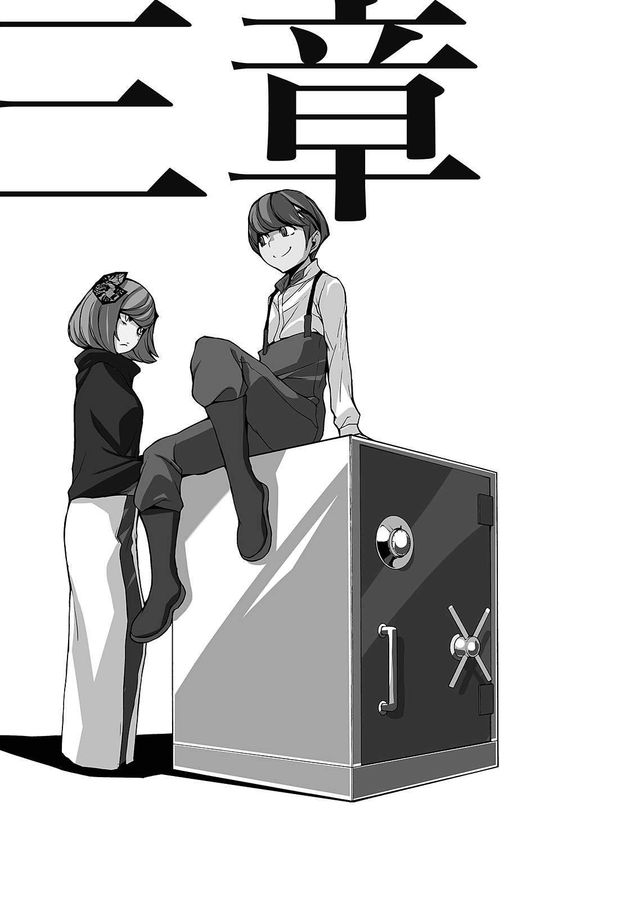
三章Ａ 折原臨也を利用しろ（喜代島ＳＩＤＥ）
武野倉警察署 署長室
翁華連合のアジトで喧嘩とボヤ騒ぎがあった。
そのような通報があって駆けつけたものの、誰も詳しい状況を喋ろうとはしなかった。
怪しんだベテラン刑事の一人が、後になって店のマスターを呼び出した段階で、ようやく厄介な事件が発生していたと判明した。
「傷害事件に放火、更には誘拐じゃねえか......なんで通報しなかった！」
ベテラン刑事の言葉に、マスターが申し訳無さそうに答える。
「翁華連合の連中に口止めされてたんですよ。老人一人にいいようにやられて、元幹部メンバーである堂馬さんを攫われたなんて、面子が潰れるどころの騒ぎじゃありませんからね」
話を聞くに、どうやら翁華連合の面子からは被害届は出そうもない。マスターも、火は壁などを焦がす前に消えたし、話を大ごとにしたくはないとの事だ。
彼が言うには、下手に事件にしてその話が広まったら、自分が翁華連合に殺されるから勘弁してくれとの事である。
だが、流石に誘拐──しかも代議士の息子が被害者ともなれば、放置するわけにはいかない。
翁華連合の面々は警察に頼らずに独自にその犯人を捜しているのだろうが、当然ながら警察の立場として放置しておくという選択肢など存在しない。
しかし、喜代島代議士を巻き込んだ大騒動にはならなかった。
署長が喜代島代議士に電話確認を取ろうとした所、部下から報告があったからだ。
何事もなく、喜代島堂馬がナイトクラブに戻り、翁華連合の面々に挨拶してから実家の方に帰っていったと。
「ナイトクラブ店主の話だと、誘拐された時に会話に出ていた名前......つまりは、堂島の電話の相手がオリハライザヤ、との事だ。オリハラという男とソゾロという名の老人については、少なくともこの街の住人ではないと解っている。もちろん偽名の可能性も高いが、そんな老人がいるならもっと前から目立っている筈だろう」
「外部の人間ってわけですか」
佐々崎が問う。
あの後、立ち話で周囲に聞かれるのは不味いという事で、署長室に移動する形となった。
部屋の中には署長と佐々崎だけとなり、神妙な空気が流れている。
「事件になっていない以上、本庁のデータベースなどに接続して調べる許可は取れない。だが、些細な事でもこの町で別の犯罪に関わっているのならば話は別だ。そこをとっかかりとして調べる事ができるそうなんだが......今の所、その誘拐事件以外には名前が浮かばない」
「......」
佐々崎は、心中で顔を引きつらせたまま考えた。
──俺が関わってる、なんて言えるわけもねえしな......。
──だが、話は使いようか？
「そういえば、富津久会の連中から名前を聞いた事がありますね」
「本当か？」
「ええ、向こうもその名前の男を捜してるみたいでしたが......。もしかしたら、翁華連合だけじゃなくて富津久会相手にも暴れたんじゃないですかね」
「......その可能性もなくはないな」
警察署長がフム、と考えている所に、佐々崎は続けて尋ねた。
「で、肝心の堂馬は何て言ってるんですか？」
「それも、君に調べて欲しい。捜査ではない以上、正式な聞き込みもできない」
困ったように溜息を吐きながら、署長は疲れた目で言った。
どうやら、キャリアの経歴に傷がつく可能性があるため、喜代島と阿多村の厄介事にはあまり関わりあいたくないらしい。
それでも、調べる事は調べておかねば、準備のないまま壮大な厄介事に巻き込まれかねないのも事実だった。
「街でばったりあったフリをして話を聞くしかないだろうな」
「......解りました。やってみます」
答えつつも、佐々崎は迷う。
堂馬に接触するかどうかではない。
オリハライザヤ。
彼に連絡を取るべきか、取らざるべきか。
漢字すら解らない謎の人物と言われていたが、佐々崎はそれを『折原臨也』という漢字で記す事を知っている。
『臨也』を『イザヤ』と読む事は普通は無い。役所も良く申請を通したものだと思う程だ。
普通に検索しても出てこないだろうが、佐々崎は漢字で検索した結果、いくつかの情報を摑んでいた。
東京の池袋や新宿と言った都心部の掲示板などで、時々その名前が出て来ていた。
数年前、東北の方で通り魔に刺された被害者の名前とも一致する。
──もしかしたら、その時に刺された怪我が元で車椅子なのかもな。
背中から刺されて脊髄や腰椎を損傷したのかもしれない。そう考えれば筋は通ると佐々崎は一人で納得していた。
──......しかし、これはチャンスかも知れんな。
佐々崎は、署長室を出た後にじっくりと考える。
どのみち、この町にこのまま長く留まるのは危険だろう。
ならば、やはり適当な理由をでっちあげ、警察に辞表を叩きつけて逃げるのが一番だ。
だが、高飛びするにも金が要る。できることなら、今後一生遊んで暮らせる程度の金が。
逃げるのは確定しているのだから、喜代島や阿多村に関してでも構わない。
──あの、得体の知れない情報屋なら......。
──奴がどちらの陣営かは解らん。
──まあ、自分とは関わりない陣営の情報を流してくれるとは思うが......。
その情報を手に入れる為ならば、こちらも対価を支払っても構わないと思っていた。
流石に命までは懸けられないが──場合によっては、警察内部の機密書類や捜査資料すらも持ち出しても構わない。
佐々崎の双眸に、今までに無い強い色の光が宿る。
会った日にはただ臨也に怯えるだけだったが、彼の名前が街に広がり始めたのを見て、逆に覚悟が固まった。
彼が捕らわれれば、初日に情報を渡した自分もただでは済まない。
もはや一蓮托生なのだと理解し、佐々崎は強く拳を握りしめ、思う。
自分を利用させる代わりに、こちらも最大限にあの情報屋を利用してやるのだと。
♀♂
喜代島家
「親父、阿多村を潰そうぜ」
放蕩息子が久しぶりに家に顔を出したかと思うと、唐突に戯けた事を言い出した。
喜代島宗則は、そう考えて大きな溜息をつく。
「できるならとっくにそうしている。少しは考えてから物を言え」
宗則にとって、この息子は昔から頭痛の種だった。
確かに親として大事ではあるのだが、甘やかしすぎた事は後悔している。
自分の政治権力や金を利用して他人を従わせるのはいい。
だが、短絡的な暴力は宜しくない。暴力沙汰を揉み消すのは一苦労であるし、対立派閥の代議士に知られた日には、それだけで大きなスキャンダルとして取り沙汰されるだろう。
「考えてるさ。俺だってもう28だぜ？ 自立してもおかしくない歳だ」
「突然とち狂った事を言い出すかと思ったら、現実すら見えていないのか。普通は28と言ったら自立していない方がおかしいだろう」
「まあ、ほら、一応俺も会社員だろ？」
「ああ、私が用意した職場で、週に一度顔を出すだけの立派過ぎる仕事だがな。少し安心したのは、お前があれを『自立している』と捉えなかった事だ。もし『俺はとっくに自立してる』などと言いだしていたらと思うとゾッとするな」
喜代島家長男である堂馬は、父親である宗則の脛を囓るのが主な仕事と言えた。
最初は秘書という形で手元で見張るかとも考えたのだが、堂馬には秘書としての能力もないし、地方によっては議員の親族秘書採用を認めていない県もある。今後国会議員を含めて全国的にその流れが波及する可能性もある為、喜代島はなるべく息子を秘書にはしたくなかった。
──調べられた時に、過去の素行まで明るみに出ると困るしな。
そんなわけで、堂間は秘書ですらなく、『喜代島が過去に世話をした企業などに出入りする清掃会社の職員』という事になっていた。もっとも、気が向いた時に出社してゴミ収集をやる程度なので、殆ど『給料泥棒』というに等しい状態なのだが。
──わざわざ息子の為に作らせた清掃会社だ。クビになる心配は無いが......給料明細が流出したら、騒ぎにはなるかもしれんな。
全国の清掃業者の社員の平均よりもだいぶ色をつけた給料を払っているが、それは半分息子への口止め料と、首輪の意味合いが強かった。
下手に突き放して金を渡さなければ、翁華連合とつるんで裏の商売──下手をすれば、恐喝やら違法ドラッグの販売などに手を染めかねない。
実際、高校時代はカツアゲなどで警察沙汰になりかけた事が何度かあり、その度に揉み消しに苦労させられた。
──あまつさえ、こいつは......！ ......いや、思い出したくもない。
更なる悪行を頭の中に浮かべようとしたが、諦めたように首を振る。
「いいから、お前はとにかく大人しくしていろ。阿多村の長男があんな事になったばかりだ。今下手に動いてどうする。警察署長に顔が利くといっても、我々が率先して疑われるような真似をしていればマスコミ連中も面白おかしく書き立てるに決まっている。その時に、情報を抑えるのにどれだけの金と手間がかかると思う？」
「阿多村の人間がやった事にすりゃいいんじゃねえか？ 竜一殺しをよ」
「何を馬鹿な......」
「富津久会をこっちに引き入れりゃ、その程度の工作は簡単だろ？」
「奴らは阿多村の犬だ。スパイは送り込めても、鞍替えさせるほどに金を払うとなると採算が合わん。弱みを握られて一生搾り取られるだけだ」
適当に話を切り上げ、早く事務所に向かおうと考える宗則だが──次に堂馬が吐いた言葉で、僅かに心の流れが変わる事となる。
「阿多村が消えて再開発がストレートに始まれば、目出井組系の下部組織も利権に群がってくる。下手に欲を出して目立った事をした日にゃ、自分達なんざ即座に潰される事も解ってるだろうよ。大人しく親父の私兵になるんじゃねえかな」
「......」
息子の発言に、宗則は僅かに面食らった。
確かに、裏側でそのような動きが起こる事は当然予測しているが、目の前の敵を殴る事しか考えていないようなこの馬鹿息子がそんな一手先の事を考えているなど予想だにしなかったのである。
港湾部の再開発は、兆単位の金が動く一大プロジェクトだ。
いくつもの非合法組織が利権を狙って集まってくる可能性も大きい。阿多村という強い基盤に寄り添わなければ、すぐにでも潰されてしまう事だろう。
「港湾開発で、阿多村の野郎が漁業組合と海沿い土地持ち連中を煽って反対活動やってただろ？ 示談金って事で漁業組合にゃ金を払う事になったが、裏じゃその漁師連中からかなりの額が阿多村に引っ張られるって決まってるんだろ？」
「......まあ、そうだろうな。単純に私への嫌がらせなら無償でやった事も考えられるが、本当にそこで利を取らぬ奴なら、こんな馬鹿げた街は作っていないだろう」
「だからよ、その漁師連中をこっちで取り込んで、金を阿多村に流させなきゃいい」
「馬鹿な。漁師の連中が『領主様』に逆らう筈がない。第一、その金が入らない所で、阿多村にとっては痛くも痒くもないだろう」
話にならんと切り捨てようとした喜代島だが、息子の堂馬はそこで邪悪な笑みを浮かべながら、一つの可能性を口にした。
「鉱山が枯れてたら、話は全然変わってくんだろ？」
♀♂
半日前 ホテル『武野倉グランパレス』ロイヤルスイート
「糞野郎が......こんなとこに泊まってるとはな」
「高い所が好きなもんでね。ロイヤルスイートに拘りはないよ。許されるんだったら、屋上のヘリポートにテントを張ってそこで寝てもいいぐらいさ」
「巫山戯ろ」
ギリギリと歯を鳴らす堂馬。
彼がアルコールとライターによって拉致された後、連れてこられたのは市街地で最も高級なホテルのスイートルームだった。
アルコールは既に揮発しており、今なら火を付けられても火だるまになる事はないだろうが、背後に立つ坐という老人の圧力に屈し、結局逃げる事もできずにいる。
「で、情報屋様が、俺を攫ってどうするつもりだ？ 親父から身代金でも取る気なら、諦めるんだな。親父なら、これ幸いとばかりに見捨てて『息子を誘拐犯に殺された悲劇の父親』として票集めに利用するだろうよ。犯人は阿多村の連中だって噂を流して街を牛耳るのに利用するかもなあ」
吐き捨てるように言い、車椅子に座った情報屋を睨み付ける。
すると、情報屋──折原臨也は、肩を竦めながら言った。
「もしかして、俺が阿多村さんの雇った殺し屋かなにかだと思ってる？」
電話の時のような敬語を使わず、臨也は極めてフレンドリーな調子で語りかける。
「君のお父さんに雇われた、って可能性は考えないのかい？ 醜聞になりそうな息子がそろそろ邪魔になってきたから、居なかった事にしてくれってね」
「はッ。親父もそこまでは......」
「堂馬さん、さっき自分で言ったじゃない。『息子を誘拐犯に殺された悲劇の父親』になれば得するってさ。一石二鳥、いや、三鳥になるんだとしても、本気で君を見捨てないという選択肢はあると思うかい？」
「......」
堂馬は、黙り込む。
確かに父親に非情な一面があるのは確かだ。
しかし、そこまでするだろうか。
追い打ちをかけるように、臨也が尋ねる。
「君は若い頃からグレて、毎日夜遊びをして家にも殆ど寄りつかなかったんだよね。そんな君が、父親の事をどれだけ理解してるって言えるのかな？」
「少し黙ってろ！ ぶち殺すぞ......」
「おや怖い。坐さんが君を殺すのとどっちが早いかな」
クツクツと笑う臨也に、堂馬は舌打ちした。
──糞、後ろのジジイさえいなきゃ......。
もしここで自分が反抗的な態度をとった場合の事を想像し、背中に汗を滲ませる。
だが、当の坐本人は、ふむ、と考えた後に言った。
「こちらの御仁が折原殿を殺すのを待ち、正当防衛としてその後に始末すれば、某は無罪のまま世の中の澱みを掃除できるのではないか？」
「坐さん。酷いな。人を悪人とか通り越して『世の中の澱み』って......」
「自覚がないあたり、救いようがございませんなあ。悪意によって行われる悪事よりも、善意によって行われる悪事の方が厄介とは申しますが、悪意も善意も無く、ただ興味だけで周囲を穢し続ける折原殿は、正しく『人の形をした浮世の澱み』と称するしかございますまい」
「丁寧な解説をありがとう。俺のナイーブなハートが少し傷ついたよ」
まったく傷ついた様子もなく、笑いながら首を振る臨也。
「やれやれ、どうして俺の雇う人って、いっつも俺に対して必要以上に辛辣なんだろうね」
そして、車椅子をキイ、と前に出し、堂馬に一歩分近づきながら言った。
「さて、なんでここに呼んだのか、だけどね。電話でも言ったように、君から情報を仕入れたいからさ」
「情報だと......？ はッ、やっぱり阿多村のスパイか。親父の弱みでも握ろうってのか？」
「いや？ 俺が知りたいのは一つだけさ。まあ、初対面だし、今後お得意様になってくれる事を祈ってサービスしておこうか。先にこちらから面白い情報を一つあげようじゃないか」
「......面白い情報だぁ？」
眉を顰める堂馬に、臨也は窓の外に見える山々を見ながらあっさりと告げる。
「この街の鉱山だけどね、もうとっくに枯れてるよ」
ほんの数秒、静寂がスイートルームを支配した。
堂馬が鼻で笑う音が、重い沈黙を打ち破る。
「はッ......何言ってんだ、お前？」
「前々から噂だけはあったんだよね？」
「噂は噂だ！ 本当だとして、なんで手前なんかがそんな事を知ってる！」
強気で怒鳴る堂馬に、臨也は淡々と答えた。
「阿多村グループが、裏の方の帳簿で、海外からレアメタルや銀を仕入れてる証拠を摑んだ......と言ったらどうかな？」
「......」
「もう、一年も前から鉱山は枯れていたんだ。そこで阿多村家は、こっそりと別の場所から鉱物を仕入れて、さも自分の鉱山から仕入れたように見せかけていたってわけさ。もちろん、何重にも偽装取引を重ねてね」
「待てよ......そんなの、損してく一方じゃねえか。そんな真似をする理由がねえ」
「その理由はあるさ。阿多村グループの特殊性による所が大きいんだ」
臨也は車椅子に座ったままテーブル上の高級ワイングラスを手に取り、事前にペットボトルから注がれていた麦茶をグラスの中で転がした。
「日本からは金鉱や銀鉱が枯れつくしたわけじゃない。ただ、何箇所も新しい金山を開いて掘りすぎると金相場に大きな影響が出るから、調整しながら掘ってるのさ」
「そうなのか？」
「大手メーカーは所有している鉱山が枯れたら、狙いを付けて土地だけ買ってある山にまた鉱山を開く......っていう事ができるけど、地域支配に拘り過ぎた阿多村グループじゃ、今更街の外で新しい採掘を始めるなんて真似はできない。弱みを見せた所で周りの大企業に狙われて終わりだろうね」
あっさりと『阿多村グループが終わる』と言い切る臨也に、堂馬は思わず反論する。敵ではあるが、仮にも『領主様』と渾名されて街を支配している不俱戴天の敵が、鉱山が枯れる程度の事で潰れるとは考えられなかったのである。
「そんな事はねえだろ。現に、色んな事業に手を広げて......」
「その他の事業への進出や街の支配に、銀......というよりもレアメタルの方かな。そういう資源の供給を利用していたとしたら？ 特定の企業にレアメタルを流す事で、便宜を図って貰ってたという構図があるのは、俺よりも先に調べてる人は結構いたよ」
「いや、やっぱりおかしいだろ。結局、損する一方じゃねえかよ。そんなんで金が貯まるなら苦労はしねえってのぐらいは流石に俺でも解るぞ」
「ああ、だから、一時しのぎでいいのさ」
クツクツと笑い、臨也は言った。
「この街の再開発......そんな話がなければ、案外あっさりと閉山を発表してたのかもね」
「あッ......」
「再開発にガッツリと食い込む事ができれば、莫大な利権が手に入る。十分過ぎるお釣りが来るのさ。鉱山を閉山した所でまったく問題ないほどのね」
そこで臨也は言葉を切る。
ワイングラスの中の麦茶を一口飲んだ後、薄い笑みを浮かべたまま『交渉』を続けた。
「さて......その、『外部から鉱物を仕入れてるという証拠』、これを君に売ってあげてもいい」
再び、室内が沈黙に支配される。
今度の静寂を打ち破ったのも堂馬だったが、鼻で笑う声ではなく、ゴクリと唾を飲み込む音だった。
「......代わりに、何が聞きたいってんだ？ 流石にそれに見合う情報なんて俺は......」
父親の愛人関係程度なら知っているが、流石に釣り合うとは思えないし、今更愛人疑惑が持ち上がった所で、父ならばあっさりと揉み消せるだろう。
ここまで聞いて肝心の証拠が手に入らないのでは生殺しだ。
金でなんとかならないだろうか？
そこまで考え、ふと疑問に思う。
──待てよ？
「......なんで、俺なんだ？」
「え？」
「俺なんかより、親父と交渉した方が遙かに実入りがいいし、証拠が本物なら、かなりの額の金を親父なら出すだろう。いや、阿多村から口止め料として脅し取る事だってできる筈だ。殺されるかもしれねえが、アンタほどの人間なら、街の外からいくらでも交渉できるだろ」
すると臨也は、なんだそんな事かという顔をして答えた。
「単純な事だよ。君じゃないと解らない事を聞きたいんだ」
「......？」
眉を顰める堂馬に、臨也は顔から笑顔を消し、真面目な表情で『依頼』をする。
「この前この街で死んだ、阿多村竜一の事を詳しく知りたい」
「できる限り詳しく。君だけが知っている情報があるなら、内容によっては現金で五十万出してもいい」
♀♂
現在 海沿いの図書館
潮風が入り込んでくる、海に隣接する形で建てられた図書館。
本が傷むのが早くなったりはしないのだろうか。
そんな事を考えながら、一人の少女が図書館の窓際の席に座っていた。
彼女の名は喜代島菜々。
堂馬の妹であり、現在高校三年である少女だ。
憂鬱な気分のまま、彼女は趣味であるハードカバーのファンタジー小説を読み進める。
不遇のまま死んだ魂が、地球とは縁の無い異世界に転生する話が好きだった。
昔から語られる王道的なストーリーの一つだが、今の彼女からすれば、そうした小説の主人公達が羨ましくて仕方が無い。
喜代島代議士の娘。
そんな境遇は、人から羨まれる事もあったが、彼女としては窮屈で仕方が無かった。それが原因でイジメをうけたり、フリーライターと名乗る人間から学校帰りに追い回された事もある。
もっと不幸な境遇の人間はごまんと居る。自分はまともに生きていける時点で幸福なのだろうと割り切りたかったが、それでも、この街の息苦しさに耐える事は厳しかった。喜代島の娘という事を考えれば、一般人よりも遙かに息苦しかったかもしれない。
ただ、今、自分が死んで関わりの無い異世界に飛ぼうとは思わない。
一人だけでいなくなるなど、考えられない事だ。
「......和久」
ぼそりと、幼馴染みでもあり、想い人でもある男の名前を呟く。
だが、彼女に応える者は居ない。
幸せな日々を過ごしてきた事は間違い無かった。
和久と一緒にいるだけで、街の息苦しさから解放される。ただ普通に笑い合う事ができるというだけで、彼女にとって和久という男はかけがえのない存在であった。
彼が、阿多村家に引き取られるまでは。
二人の関係のすべてを否定された。
しかも、自分がまだ幼い頃に、自分に悪戯をしようとしてきて、兄と殺し合いのような大喧嘩をした男──阿多村竜一の弟として。
最初は『自分と和久が架け橋になれば、阿多村と喜代島の対立はなくなるかもしれない』と努力しようとした。
過去に竜一に悪戯されそうになったトラウマは確かにある。
だが、自分がそれを我慢しさえすれば、問題は無くなる筈だと考えた。
和久と幸せになる為なら、その程度の事は我慢してみせると。
しかし、両家の確執の解消は、あまりにも高い壁だと思い知らされた。
自分が如何に無力であり、父親の庇護がなければ何もできない存在だったかという事も。
父や母や兄に、『お前は騙されていただけだ』とまで言われた。
そして、それを否定する事はできても、考えを変えさせる事ができない弱い自分に絶望した。
大事なものを奪われた反動で、息苦しさは日々強くなっていく。
彼と二人だけで、この『武野倉』という息苦しい世界ではなく、別の世界に行けたならばどれだけ素敵な事だろう。
そんな事を考えながら、彼女は静かに本を捲り続けた。
すると──彼女の耳に、小さな声が響き渡る。
「ねえねえ、お姉さんって、喜代島菜々さんですか？」
見ると、いつの間にか、隣に可愛らしい少年が座っていた。
まだ小学生ぐらいだろうが、ランドセルは背負っていない。
今日は休日なので、図書館に勉強にでも来た子供だろうか。
でも、何故私の名前を知っているのだろう？
そんな事を思って首を傾げていると、少年は菜々に言った。
「あのね、臨也さんに、お姉ちゃんを連れて来てくれって頼まれたの！」
「イザヤさん？ どなたですか？」
「いい人だよ！ だから安心して！」
それだけ言って、椅子から降りる少年。
「はやく準備して下さいね！ 外で待ってますから！」
図書館だから気を遣っているのだろう。小声でそう言うと、トテトテと早足で外に向かって去っていった。
まるで、アリスを異世界に誘うウサギのように。
間章 折原臨也という男③
折原臨也？
なんだあんた。臨也の知り合いか？
だったら悪い事は言わねえ。あいつとは一定の距離を置いとけ。
いや？ 絶対に近づくなと言うつもりはねえよ。そんなもんは人それぞれだしな。ああいう奴が好きって奴もいるんだろうし、人様の好みにまでとやかく言うのは野暮ってもんだろ。
まあ、顔はいいしな。それなりにモテる奴だったよ。
男友達ねえ。俺はたまに話すぐらいだったが、仲が良かったのはそれこそ一人か二人ぐらいじゃねえかな。
まあ、友達になるってんなら止めないぜ。ああいう危ない奴の傍にいる方が、スリリングな毎日が送れて面白いって奴もそれなりにいるだろうしな。
ただなあ、いくつか言っておくぜ。
あいつを、利用しようとしない方がいい。
あいつを、必要以上に頼ろうともしない方がいい。
臨也の奴は確かに万能だ。
奴の持ってる情報を聞いて、成功した連中を何人も知ってる。
ただ、同じぐらい、奴の情報に踊らされてエライ目に遭っていった連中も知ってる。
あいつが噓をついたのかって？
違うな。あいつは噓も時々吐くかもしれないが、基本的に奴が『情報屋』とか嘯いて流すネタは本物だったって聞いてるぜ。
ただ、言うべき事を言わない事があるってだけらしい。
酷い奴だと思うかもしれないが、あいつからしたら、人様の選んだ道を祝福してるつもりなんだろうな。
あいつは人間が好きだ。
自称だがな。
人間の無限の可能性が好きだって、高校の頃からずっと言ってやがった。
だから奴は、人が選んだ選択肢を後押しするのが好きなんだろうよ。
明らかに間違った選択だろうとな。
確かにあいつの顔の広さだの耳の早さだのはすげえよ。
奴の情報は、確かに行き詰まった人間には妙薬だろう。
だがな、薬も行きすぎりゃ毒薬だぜ。
長く付き合い過ぎると、胸焼けを通り越して中毒を起こすぞ。
だから、もし折原臨也と友達だの彼女だのになりたいっていうなら──
臨也の口にする情報には、耳を貸すな。
時々ならいい。だが、頼ろうとするな。利用しようとするな。
逆に、あんたが臨也を助けてやるといい。
臨也の奴を理解して、逆にあいつに『選択肢』を突きつけてやれ。
その上で、あいつが選んだ道を後押ししてやる事だな。
......まあ、何がどうこう難しい話じゃねえよ。
こんなん、普通のダチなら意識しねえでやってる事だぞ？
でもな、あいつにとってはそれが重要なんだろうよ。
臨也は確かに人間って奴を愛してるのかもな。
平等に、分け隔て無く。
だがな、あいつは一方的に愛を与える側でいいなんていう殊勝で傲慢な奴じゃない。
あいつに愛されたいと思う前に、あいつに友達になって欲しいと思う前に──
あんたの方から、奴を愛してやればいい。友達になってやればいい。
ああ見えて、意外と義理堅い奴だからな。
ちゃんと答えてくれると思うぜ？
でもな、さっきも言ったが、利用しようとはするな。
頼ろうとするのも厄介だが、利用はもっとやばい。
小耳に挟んだ話だがな......前に臨也を利用しようとした連中がいたんだとよ。
一つは危険ドラッグだかなんだかを商売にしてるような連中で、一つはカタギのくせに地下カジノを運営してたような連中だそうだ。
臨也の奴を利用して、自分の思い通りにできる手駒にしようとしたそうだが......。
両方とも、潰されたらしいぜ。
相打ちみたいな形にされてな。
自分を利用した奴を、惨たらしく潰し合わせたわけだ。
......いや？ あいつを悪く言うつもりはねえよ。
そもそも、普通の奴相手なら、こんな話はしねえ。
なんでしたか解るか？
あんたらから、同じような匂いがしたからだよ。
臨也を利用して勝手に潰れていったような連中とな。
だから、これは警告みたいなもんだ。
あいつの事をもっと良く見てやれよ。確かに善人とはいえねえ。悪人かもしれねえ。
でもな......。
あいつだって人間なんだぞ？
──東京某所 左官職人Ｋ氏の供述より抜粋
三章Ｂ 折原臨也を利用しろ（阿多村ＳＩＤＥ）
「またオリハライザヤ、か」
阿多村竜二は、行きつけの高級クラブの最奥の席で、店の女性に囲まれながら酒を呷る。
彼の前にいるのは、まだ若いチンピラ風の男だ。
その男の昔からの仲間が『翁華連合』に所属していると聞いて、情報を引き出すように日頃から言っていたのだが、今日もたらされた情報は竜二の感情の中に様々な波を起こしている。
──翁華連合の溜まり場であるナイトクラブが襲撃された。
最初は、良くある抗争かと思ったが、聞くところによると、突然現れた老人一人にいいようにあしらわれたらしい。
最初はなんの冗談だと思って聞いていたが、その情報の中に『オリハライザヤ』という単語が出て来た事で、彼は目を細めて「もう一度最初から話せ」と命令した。
結果として解ったのは、ソゾロと名乗る老人が、どうやらオリハライザヤという人間の使いだったらしいという事だ。そして、信じがたい話ではあるが、本当に翁華連合の幹部達はその老人一人に手玉にとられてしまっていたらしい。
「翁華連合の連中め、いい気味だぜ......とはいえ。堂馬はどうなったんだ？ そのまま拉致られたんなら、あいつの親父が黙ってねぇだろ？」
「それが、次の日の朝には普通に帰ってきたそうで」
「......」
竜二の目がスウ、と細められる。
戻って来なければ、それはそれで『やはり阿多村の差し金か』と疑われる事になるのだが、戻って来たというのは更に厄介な問題だ。
妙な動きをする男が、堂馬を拉致して解放した理由とは何か？
──取引したって事か？
──奴は、平和的に解放されたって事だよな。
──あり得るか？
──翁華連合に喧嘩売った野郎に攫われて、無傷で解放？
答えは一つしかない。
手を組んだのだ。
オリハライザヤという男と、喜代島堂馬が。
──この時期にそんな怪しい奴と手を組む？ 何故だ？ 一体何と何を取引した？
推測を重ねる内に、竜二は一つの答えに達しようとしていた。
──堂馬が何か弱みを握られたって事か？
──喜代島の弱み......。
──......。
──兄貴の件か？
──やっぱり、喜代島の連中が兄貴を......？
翁華連合と敵対していたという事は、オリハライザヤというのは、喜代島が最初から雇っていた人間では無さそうだ。阿多村でもないというなら、第三者という事になる。
竜一を殺したのが喜代島の一派だとすれば、その情報......あるいは証拠そのものを外部の人間が摑んだ場合、それは喜代島一派への十分な脅しのネタとなるだろう。
──タイミングが良すぎる。やっぱり、兄貴が殺された事と、オリハライザヤってのが無関係とは思えねえな......。
どちらにせよ、オリハライザヤという男が派手に動いた以上、相手の正体ははっきりさせておかねばならないだろう。
竜二は手元の酒を飲み干すと、携帯を取り出して父親に電話をした。
「......親父か？ 頼みがある」
酔いの勢いだなどと言われぬよう、表情を引き締め、口を開く、
「......『カンディル』の連中を使いたい。富津久会の臼原にも連絡を取ってくれ」
♀♂
数時間後 阿多村家
阿多村和久は憂鬱だった。
この家に引き取られてから憂鬱じゃなかった日などないのだが、ここ暫くはとりわけ憂鬱だ。
兄が死んだ事によって、喜代島と阿多村の関係に緊張感が満ち始めている。
最初は『流石に喜代島もそこまで短絡的ではないだろう』と思う者が大半だったが、何日も犯人の目処が立たない状況に、世間も「やはり喜代島が......？」という陰謀論的な仮説を囁き始める者も増えて来ていた。
中には『オリハライザヤ』とやらが流した噂もあるのだろうが、一体何が目的なのか。
おかげで、こちらが人目を忍んで喜代島の娘、菜々と会う事もできなくなっていた。
常時監視がついているわけではないのだが、街中で逢瀬を見られでもした日には、強制的な別離が待っている事だろう。
菜々も、『強制的に海外に留学させられるかもしれない』と言っていた。
親とはいえそんな横暴な真似が許されるのかとも思ったが、喜代島は公私ともに長い手を持った男だ。娘一人を無理やり遠方に送って、全寮制の場所に軟禁するぐらいの真似はするかもしれない。
この御時世、そんな事がネットなどで拡散すれば完全な軟禁など不可能なのかもしれないが、菜々は自分の家族を晒して世間に叩かせる真似などしないだろうし、同じ理由で、和久も菜々が世間の晒し者にされるような真似は極力避けたかった。
自分も動くしかない。
菜々より一つ年上の和久は、高校卒業後に大学に進学する予定だったが、引き取られたゴタゴタによって進学を諦め、立場上は浪人生という事となっていた。
父親は『この家の関連グループで生きるなら大学なんぞ必要ない。覚えるべき事は現場で叩き込む。別の場所で生きるというのなら学ぶのは自由だがな』と、至ってシンプルな答えを口にしている。
一見すると理解のある父親なのだが、『自分の手駒になるなら保護してやる。あとは自分でなんとかしろ』という形の表れであり、事実、竜二から酷い虐めのようなものを受けても、『自分で殴り返せ。殴る力がないなら知恵を使え』と言うだけで、虐め自体を止める事はしない。
例外は、先日の居間で見せたような、竜二が甚五郎本人の立場などを軽んじた発言をした場合だ。妾の子という理由で父親から軽んじられる事はなかったが、そこを攻める事ができなくなる以上、竜二はなにかにつけて細かく嫌味を言ってくる。
──こんな家も街ももう沢山だ。
──菜々を連れて、出て行けるものなら出て行ってしまいたい。
しかし、簡単な事ではない。
駆け落ちした所で、その先で生きる力も無ければ、まず駆け落ちを成功させる力もない。
金だけは唸るほどある両家だ。
遠く離れた土地に逃げ出した所で、彼らは簡単にこちらを見つけ出すだろう。
携帯電話の使用履歴、銀行のＡＴＭの引き落としなど、社会の表にも裏にも手を伸ばせる権力者達なら、あっさりとそれらの情報から痕跡を辿る事ができる。完全な偽名で働き口を探し、二人で偽名のままアパートなどを借りる事など可能だろうか？
あるいは、漫画喫茶や野宿での生活を菜々に強いる事ができるのか？
そんな事を考えれば考えるほど頭の中に焦燥が生まれてくる。
大きな溜息を吐いた和久の携帯に、メールの着信音が響いた。
「！」
菜々のアドレスからだ。家族に見られた時の為、名前などは高校の時のクラスメイトの男子に偽装している。
慌ててメールを開くと、そこには目を疑うような文章が添えられていた。
『街から、一緒に逃げよう』
まさか彼女の方からそんな事を言い出すとは思わなかった和久は、慌ててメールの全文を精読する。
そして数秒後、青年は更に驚愕する結果となった。
どうにも、街から逃げたり、その後の算段について協力してくれる人物が現れたというのだが──問題は、その協力者の名前だった。
『折原イザヤさんっていう人なんだけど、和久にも一度会って欲しいの』
折原イザヤ。
確認するまでもない。『折原』は『オリハラ』と読むのだろう。イザヤを漢字にしていないのは、簡単には変換できない文字という事だろうか。
そんな事が一瞬頭を過ぎったが、それどころではないと和久は己の頰を張る。
まさか、阿多村家が探している人間が、菜々と接触していたとは。
何が目的なのか。あるいは彼女を人質として喜代島家に対して何かする気なのではないか？
和久の心に更なる焦燥が満ちていく。
──行くしか無い。
そう考えた青年は、メールに『俺も会いたいから、待ち合わせ場所を教えて欲しい』とだけ書いて送信し、そのまま家の玄関へと向かう事にした。
すると、玄関から居間に向かう途中、兄の竜二が数人の大人を連れて歩いてくる姿が見えた。
「......邪魔だ、これから大事な話がある。出かけるなら暫く家に戻るな」
シッシと犬を追い払うような仕草を見せる竜二に、言われるまでもないと横を通り過ぎようとした和久。
その最中、数人の大人達の顔を見た。
不気味な集団。
それが、和久の純粋な感想だった。
まず目に入ったのは、かっちりとしたビジネススーツを纏う一人の男。髪の毛をオールバックに固めており、薄い色のサングラスを掛けている。
次に、その男の後ろを歩く、男とは正反対の様相を見せる女だった。
年齢は二十歳前後だろうか。あるいはもう少し幼いかもしれないが、ハッキリとした年齢は解らない。
何しろ彼女は、ゴスロリパンクといった風貌のメイクの上から派手な眼鏡をかけており、耳には逆さ十字のチェーンピアスをぶら下げていた。服装も妙な装飾が多い黒と赤を基調としたビジュアル系パンクバンドのメンバーのような上下に身を包んでいて、脇に抱えていたノートパソコンには髑髏やゾンビなど、物騒な柄のシールがいくつも貼られている。
──『カンディル』......。
この男女の事は、和久も存在ぐらいは知っていた。
阿多村グループが懇意にしている組織で、表向きは『株式会社カンディル』となっているが、実際の所は、ハッキングや脅迫、盗聴や盗撮まで駆使して非合法な調査を請け負う、裏の興信所とでもいうような存在である。
街の外での喜代島の行動についての調査を何度かさせているが、喜代島も彼らの事は最大限に警戒していると聞いた事があった。
菜々も彼らの手によって調査された事があるらしい。
というよりも、自分が喜代島の娘と付き合っているという事を最初に父親に報告したのも彼らだと聞いている。
和久にとっては憎々しい集団であり、目の前の二人はその『カンディル』の取締役の一人と称している男と、情報管理部門のトップと言われている女だ。
睨み付けようとした和久だったが、少し遅れて廊下の角を曲がってきた影を見て、それすらもできなくなる。
現れたのは、廊下の高い天井スレスレにまで届こうかという、髪を青く染めた巨大な男の姿だった。
目の周りに黒い包帯を巻いており、眼球の部分に空いた隙間から黒く大きな瞳がギョロリと覗いている。鼻から下には包帯は巻かれていないが、頭部を一周するように刻み込まれた、楽譜のような数本の縫い痕が痛々しさを感じさせる。
筋肉の塊という表現がぴったりの肉体の上から無理やりビジネススーツを纏っており、その巨大な手で顔を摑まれたら、空き缶のように潰されてしまうのではないかと想像してしまい、和久は思わずその身を震わせた。
──富津久会の殺し屋......！
確か、名前は臼原といっただろうか。
街の中で、『領主様の飼い鯨』と渾名されている男だ。
この屋敷の中で見るのは初めてだが、和久も街で見かけた事はある。
富津久会の中でも荒事専門であり、外見通りのその恐ろしい強さは、一度見た者ならば忘れる事はないだろう。
──なんだ......。
──『カンディル』だけじゃない、殺し屋まで本家に呼び出して、兄貴は何をしようとしてるんだ？
──まさか。
和久の中に、嫌な予感が膨れあがった。
『カンディル』は人捜しや情報収集のプロだ。
父親の甚五郎は『所詮は街の外の人間だ』と言ってあまり多用はしていなかったが、竜二の考えは違うらしい。
竜二がそんな者達を呼んで調べさせたい事とは何か？
臼原という殺し屋を使って始末させたいのは誰か？
間違っていて欲しいと思いつつも、和久は一つの不安でいっぱいになった。
折原イザヤ。
彼らは、そのイザヤという男を狩るために集められたのではないか？
だとすれば──そのイザヤがたまたまその瞬間、菜々と共にいたら？
最悪の予想に顔を青ざめさせながら、彼は逃げ出すように本邸を後にした。
一刻も早く、愛しい菜々の顔を見る為に。
そして、自らの目で、折原イザヤという名の男を見定め──場合によっては、その場で菜々を救い出す為に。
♀♂
阿多村家 執務室
「......良く来たな」
家に仕事を持ち込んだ時に使う、個室でありながら来客を迎えるソファなどが置かれた室内に、重々しい甚五郎の声が響き渡る。
「これはどうも。......あまり歓迎した様子はありませんね」
「当然だ。本来なら、お前達を動かしたくはない」
「おや、ハッキリと仰る」
困ったように言うサングラスの男に、甚五郎は渋い顔をして答えた。
「息子の件もある。派手に動いて喜代島との抗争を煽られても困る。潰す時は潰すが、その時期は俺が決める」
「そんな真似はしませんよ。もう少し信用して下さってもよいのでは？」
「お前らは、所詮この街の人間じゃないからな。あまり内側に入り込ませるつもりはない」
阿多村甚五郎が過去に『カンディル』を利用したのは、外部からちょっかいをかけてくる組織を探らせる為だ。確かに『贔屓にしている』と言っても過言ではないほどに重用はしているが、武野倉市の内部抗争に利用する事はあまり気が進まない。
──こいつらは、名前の由来そのままだからな。
『カンディル』。
それは本来、アマゾン川などに生息する小型の肉食魚の名前だ。
サメのような巨体を持っているわけでもないが、アマゾン川流域ではピラニアよりも畏れられていると言われている。
比較的温厚な性質のピラニアと違い、自分より遙かに巨大な人間にも平気で襲いかかってくる獰猛さを持ち、嚙みついて生み出した疵痕や、身体中に元から開いている穴にその身を潜り込ませ、相手を内部から喰らう魚である。
相手が巨大であろうとも、群の力を利用して徹底的にしゃぶり尽くす。
この情報収集組織にはピッタリの名だ。甚五郎はそう思っていた。
何しろ、株式会社とは名ばかりで、裏では採用していない事になっている従業員が何十名もいると噂されている。その『裏側』の全容は不明であり、登記されている本部こそ近場にあるものの、本当の拠点は東京にあるという説もあれば、あるいは海外だという噂もある。
もっとも、そんな怪しげな組織でも需要があるのは、仕事の成果はキッチリと出す事。そして、そうした『存在しない筈の社員』達が、非合法な行為にまで手を伸ばせるという事があるからだ。
阿多村としては非合法な手段は全て富津久会で賄いたいのだが、彼らは今一つ情報戦に弱い。
広域系の大手組織などと繫がりを持たない分、阿多村の子飼いとして自由にできるのだが、その一方でそうした組織間の情報ネットワークからは隔絶されている所があり、この街の外が絡んで来る事案になると後手に回らざるを得ないのだ。
今回の件について、息子の竜二が『金は俺が出す。連絡だけとってくれ』と言うので呼びはしたが、甚五郎としてはあまり面白い展開ではない。
竜二はオリハライザヤという存在を探らせる為に使いたいようだが、その案件はあまりにも武野倉の内部に踏み込みすぎている。
──荒事だけで済むなら、富津久会で......いや、臼原一人で十分なんだがな。
溜息を吐くと、甚五郎はチラリと青髪の巨漢に視線を向けた。
「......」
無言のまま頭を下げる臼原。
彼は富津久の中でもかなり特殊な立ち位置だ。何しろ外見が目立つ事この上ないので、事件をある程度揉み消せる武野倉市以外では動かす事ができない。
だが、そのデメリットと比べても余りあるメリットがある事と、甚五郎個人の『単純に殴り合いが強い者を気に入る』という嗜好により重用されている。彼は銃や刃物を持たずとも、ちょっとしたチンピラの集団程度なら警察に通報されるよりも早く蹴散らせる。
その上で外見に似合わず細やかな仕事もできるため、暗殺や闇討ちなどの後ろ暗い仕事にも使えるという、『外見が目立つ』という一点さえ除けば実に優秀な人材だ。
「......俺は、『カンディル』と臼原を同時に動かす事には反対なんだがな」
「安心してくれ親父、別にこいつらを一緒に行動させるわけじゃねえよ。ただ、オリハライザヤって野郎にゃ、翁華連合を手玉に取るような奴がついてるらしい。道具も無しで大勢で動くよりゃ、臼原一人に任せた方が目立たなくていいだろ？」
「そうなればいいがな」
──竜二は臼原とその相手を両方侮り過ぎている気がするが......。ここで一つ大きな失敗をさせて、貸しを作っておくのも手か。
息子相手に貸し借りの算段を始める甚五郎。
──竜一には、それこそ一生ものの貸しをいくつも作っておいたんだがな。
──まったく、勝手に死ぬとは恩知らずな奴だ。
親子の情などおよそ感じられぬ事を考えながら、甚五郎は静かに息を吐き出した。
──......いや、寧ろ貸しよりも......。
何かを考え込む甚五郎を余所に、オールバックの男が口を開く。
「それで、オリハライザヤ......という人物について探れば宜しいのですね？」
オールバックの男──『カンディル』幹部である磯坂の言葉に、竜二が頷いた。
「おう、そうだ。オリハライザヤだ！ そいつの情報を徹底的に漁れ。弱みになりそうな事も全部な。偽名かもしれねえが、そう名乗ってる奴がこの街にいて、堂馬の野郎と接触したってのは確かだ」
「ふむ......どうだ、ネク」
肩を竦めながら、応接間のソファーの裏側に声をかける磯坂。
その声を聞き、床に座りながらソファーの裏に寄りかかっていた女──ネクが、無線ネットワークに接続したノートＰＣに目を向けながら言葉を返した。
「んー。行けそうだよー、行けそうだねー。東京の方の子達に、心当たりあるって子がいたから、そっちから当たってみるよー」
「マジか!? 仕事が早いな！ 早速教えろ！」
竜二がそのパソコンを奪い取ろうとするが、ネクはヒョイと身を躱しながら床に転がる。
「まだ、駄目。情報確定してからじゃないと渡せないよ、おじさん」
「おじっ......」
口をパクパクさせる竜二に、甚五郎が言った。
「当たり前の話だ。裏を取る前の情報を搔っ攫って何の意味がある？」
「そ、そりゃそうだけどよ......」
ばつが悪くなって黙り込む竜二の代わりに、甚五郎が『カンディル』の二人に告げる。
「確定した情報からでいい。最優先なのは、奴に外部組織のバックがついているかどうかだ」
「畏まりました」
「りょうかーい」
磯坂の言葉に合わせる形でネクも手を上げ、ブルーライト軽減眼鏡をクイ、と持ち上げ、ニヒヒと笑いながらノートパソコンを閉じた。
そして、時間が惜しいとばかりに部屋を出て行く二人。
報酬の話などをしないのは、連絡を取った時点で話をつけているからだ。
それに続く形で、オロオロしていた竜二もハッと顔をあげ、臼原に対して入口の方をアゴでしゃくりながら指示を出す。
「よし......行くぞ、臼原。お前にもやって貰う事がある」
「......」
無言のまま頷き、臼原は竜二の後に続いて部屋を出て行った。
竜二達が去った後、甚五郎は隣に立っていた富津久会の若頭に声をかける。
「宇田川」
「はい」
「臼原の力についちゃ信頼しているが、あいつは今、竜二の采配で動いてる。その采配までは信頼できん。お前も動きを見張ってろ。可能なら、オリハライザヤとやらの正確な動きが摑めた時点で、俺に連絡しろ」
「......かまいませんが、どういうおつもりで？」
宇田川の問いに、甚五郎はクツクツと笑いながら答えた。
「そのオリハラって奴は、翁華連合にちょっかいを出しちゃいるが、具体的に喜代島と俺のどちらかの差し金でこの街に来たわけじゃなさそうだ。にも関わらず、ただ存在するだけでここまで街を焦臭くするような野郎だ。少し興味が湧いた」
「まさか、身内に引き入れるつもりですか？ 竜二さんの話が確かなら、喜代島堂馬と既になんらかの取引をしている可能性もありますが」
眉を顰める宇田川に、甚五郎は息子達に向けるよりも遙かに人間味のある笑みを浮かべて言った。
「そういう奴を取引ごと根こそぎ頂いてこそだろう」
「おや、喜代島と揉めるのは極力避けるのでは？」
「そう思ってたんだがな。『カンディル』の連中まで引き入れたとなりゃ、鉱山の裏がバレるのも時間の問題だろうと思ってな」
「......」
鉱山の枯渇に関する裏事情は、現場も含めて極一部の人間しか知らない。
現場の採掘者達は機械で掘り出した岩盤を運んでいるが、そこに資源の鉱石が多量に含まれていると信じている。
それを差し引いたとしても、内部で作業をしていれば、各部門の中で違和感に気付く者は多いだろう。
だが、その違和感を覚えた人間をそれとなく『昇進』という形で現場から遠ざけたり、あるいは遠回しに口止めをするなどして、意見を完全に封殺してきた。
人死になどが出ている案件ではない為、気付いた者の多くもその『口止め料』を享受するものが多かった。
「そのオリハライザヤって奴を生贄にするか身内に引き込むかは解らん。だが、それで喜代島から有利なネタを引っ張れるなら、それも一つの手だろう」
「しかし、危険では？」
宇田川の言葉に、甚五郎は事もなげに答えた。
「今なら何が起きても、竜二の不始末って事にできるだろう？ そしたら俺は、奴を切り捨てて和久に跡を継がせるか、あるいは四人目を生むように励むか......。いや、ぶっちゃけた話、俺が死んだら後は誰がグループを継ごうがどうだっていいんだがな」
あまりにもあっさりと言い放った男の言葉に、宇田川は呆れながらも頷いた。
「我々富津久会は、利益を生む者の味方ですので御安心を」
「......それはつまり、再開発への食い込みにしくじったら、喜代島につくって事か？」
「それは、組長のお考え次第です。私が何か考えるなどおこがましい」
「３秒で言葉を翻しやがって......ったく......」
呆れたように肩を竦めた後、甚五郎はまだ見ぬ男に対して挑戦的に笑いかけた。
「さて、オリハライザヤって野郎がどれだけのバカ野郎なのか、とくと楽しませて貰おうじゃねえか」
♀♂
ホテル『武野倉グランパレス』ロイヤルスイート
この男は、予想していたよりもバカなのかもしれない。
和久がそう思ったのは、高級ホテルのスイートルームの中で、その男の姿を見た時だ。
車椅子の上で足を組み、片手にワイングラスを揺らしながら優雅なポーズを取っている男。
「やあ、君が阿多村君だね。僕が折原臨也だよ。宜しく」
それだけを切り出せば、ミステリアスな雰囲気を醸し出す謎の男というイメージなのだが、問題は、その車椅子が小学生ぐらいの男の子の手によって、広い部屋を全力疾走で押し回されているという事だった。
「ぶーん。ぶんぶーん！ ひゃっほー！ 楽しくなってきましたよ臨也さん！」
子供は額に汗を搔きながらも、楽しそうに車椅子を押し続けている。子供にしては脚力と腕力があるのか、かなりのスピードで高級家具の間を走り回っている。
その振動でワイングラスの中から液体が零れていたが、どうやら中身はテーブルの上においてある麦茶のようだ。
「どうかな？ 君の可愛い恋人を誑かした男と対面した感想は」
「どうもこうも......」
和久はどう反応していいか解らず、思わず男から目を逸らす。
視線の先には菜々がいた。菜々はクスクスと笑いながらそんな男の様子を眺めている。
「菜々、無事で良かった......！」
「ああ、和久も元気そうで良かったわ......！」
お互いに状況を確認しあう和久と菜々。
そうこうしている間にも、臨也と名乗った男の車椅子は部屋の中をせわしなく押され回っていた。
「やあ、遥人君、そろそろ止めてくれると嬉しいな」
「はい！ 臨也さん！」
元気の良い返事をしながら、遥人と呼ばれた少年は車椅子を止める。
急に止めたせいか、あるいは車椅子の上で格好を付けて足を組むなどという真似をしていたせいか、臨也の身体が大きく前に投げ出され、そのまま車椅子から落とされた。
「おおっと」
だが、そこでタイミング良くソファーの端を摑み、上半身の力でゆっくりとソファーに身を沈め、そこで改めて足を組んだ。
「ふう、遥人君。俺だからいいけど、他の車椅子の人達を押す機会があっても、絶対に今みたいに乱暴に押したり止めたりしちゃあいけないよ？」
「はい！ 臨也さん！」
あまりにも無邪気な顔で頷くので、本当に理解しているのかどうか怪しく感じられる。
そう思いながらも、和久はとりあえずそれをスルーしてソファーに座り直した男に尋ねる事にした。
「......足、悪いんですよね？」
和久の問いに、臨也は余裕の笑みを浮かべながら答える。
「立ったり歩いたりが辛いだけでね、比較的症状は軽いんだ。こうして足を組むのも、凄く痛いのを我慢すればなんとでもなるよ」
どこまで本当なのか解らない事を言う臨也だが、和久は敢えて突っ込まない事にした。
「事故か何かですか？」
遠慮無く聞くのも失礼かと思ったが、こんな場所に突然呼びつけるような輩である。多少の無礼はいいだろうと考えたらしい。
「そうだね。事故か......ゴジラみたいな巨大な怪獣に喧嘩を売って襲われたのを事故というなら、まあ、事故なんだろうね」
「？」
「例え話さ。ちょっと鉄骨が身体に当たったり、何メートルもふきとばされたり、両腕を折られた状態で脇腹をナイフで刺されたりしただけさ。最初の鉄骨が一番まずかったらしくて、その時にちょっと全身の骨をあちこち痛めてたみたいでさ。その後も、意地を張って、痛みをアドレナリンで無理やり消して、怪獣に喧嘩を売り続けた無理が祟った結果だよ」
「はあ......」
怪獣どうこうという例えは良く解らないが、とりあえず何か酷い大怪我を負って、その後遺症という事らしい。話を総合するに、鉄骨の事故に巻き込まれた後に海外の牛追い祭にでも参加したのだろうか。
そんな想像をする和久の前で、臨也は自分の怪我を『大した事ではない』とでも言うように、極めて明るい調子で語り続ける。
「まあ、完全に立てないわけじゃないから、トイレとかシャワーとかベッドの移動が自力でできるのは不幸中の幸いかな。昔みたいに街を駆け回れないのは辛いけどね」
「リハビリ中なんですか」
「......まともな所でリハビリすれば、また走り回れるようになるかもしれないとは言われたけどね......。俺は、そうするつもりはないんだ」
「どうしてですか？」
ストレートに尋ねられ、臨也は口元に笑みを浮かべたまま、やや真剣な表情で言った。
「これはね、戒めだよ。俺への戒めだ」
「戒め......？」
「ああ、戒めさ。俺は今まで、人間を愛しているなんて言いながら、ちょっかいを出しては、派手に跳び回って逃げるなんて真似をしてきたんだ。まあ、怪獣......いや、誤魔化すのはよそう。人間離れした奴相手に捕まっちゃって、この始末になったんだけどね......」
臨也は遠くを見つめるように視線を泳がせ、自嘲気味に笑い続ける。
「本当に人間を愛してるなら、人間からも、人間ばなれした怪物からも、本物の化け物からも逃げるべきじゃあなかったと俺は思う。一定の距離から欲しいものだけ得ようとして、自分はずっと安全な場所にいようとした。これは、愛としては不純だ。そう、不純だったんだよ」
「......？」
言っている意味が良く解らないという和久と菜々に、臨也は自分自身に言い聞かせるように言葉の続きを吐き出した。
「だから、俺はもう逃げないって決めたのさ。隠れはするし、騙しもするけどね。それでも、そんな苦境を乗り越えて俺の目の前に辿り着いた人間がいたとしたら、正々堂々と相対しようと思ったんだ」
奇妙な事を言った後に、臨也は和久を見つめて言った。
「まあ、こっちから呼んだ形とは言え、君は今、こうして俺の前に立ってるわけだ。今から逃げようにも、これじゃ逃げられない。まあ、ここにいる遥人君が助けてくれるかもしれないけどね」
「解りました臨也さん！ いざという時は警察を呼びますね！」
「うん、遥人君。それ八割がた俺も逮捕されるパターンになるから止めておこうか。一番確実なのは坐さんに電話する事かな？」
「そっか！ 臨也さんはやっぱり凄いや！ でも、二割もあれば臨也さんなら大丈夫ですよ！」
目をキラキラと輝かせる少年を見て『君、俺をバカにしてるわけじゃないよね......？』と呟いたりもしているが、どうやら少年の耳には届かなかったようだ。
「まあ、とりあえず、俺の目の前に立った君には、正々堂々と相対しようじゃないか。まあ、俺が招いたわけだから当然といえば当然なんだけど」
言いたい事を言っているのだろうが、自然と煙に巻くような言葉になっている。
恐らくはこれがこの男の本質なのだろうと思いながら、和久は尋ねた。
「ええと、あの、どういう事なんですか？ 俺達についてどこまで知ってるんですか......？」
「どこまで、か。そうだね。逆に聞くけど、どこまで知っていて欲しい？」
「え？」
「君にだって知られたくない事の一つや二つあるだろうし、そこの君の可愛い彼女に対して秘密にしてる事もあるだろう？」
臨也の目が細められ、口元は実に楽しそうに歪んでいる。
「まあ、それはいいさ。後で個別に話す事もあるだろうしね。俺が知りたいのは情報だよ。その情報を聞くには外部に漏れないように個別に話す必要がある。例え、君の恋人だろうと、その間はこの階にあるレストランで食事でも楽しんでもらう事になるね。一人での食事なんて可哀想だとは思うけど、なんだったら遥人君にエスコートさせよう」
「はあ......」
キョトンとした菜々だったが、その手をいつの間にか傍に来ていた遥人が引いた。
「やった！ 行こうよお姉ちゃん！ あそこのお店、炒飯がすっごく美味しいよ！」
目を輝かせて、口元から涎を垂らしかけている少年。
「解りました、炒飯代ぐらいなら払えると思いますし......」
「もちろん俺の奢りだよ。まさか自腹で払う気だったのかい？」
言いながら、ポケットから取り出した蝦蟇口を遥人に投げた。
少年はそれを受け取ると、『じゃあ、早く行こう行こう！』と言って引っ張っていき、菜々は菜々で緊張感無く、
「じゃ、じゃあ、先に頂いてます！ 和久も、臨也さんも、お待ちしてますんで！」
などと言いながら部屋を出て行ってしまった。
「君の彼女、こんな状況なのに結構緩いね」
菜々が去った後、呆然とした表情で立っている和久に臨也が尋ねる。
「あいつはいつも夢見がちな所があって......」
和久にとってはそれも好きな所ではあったのだが、流石に『私と和久が仲良くなれば、喜代島と阿多村の関係も良くなる筈』と言いだした時は理想を通り越して夢想だと肩を落とした経験がある。
大きな溜息をつく和久に、臨也は言った。
「いい事だよ。ああいう暢気な善人も居ていいんだ。逆に、君みたいな現実主義者が居てもいい。俺は平等に愛する事ができるよ。ああ、性的な意味じゃないから安心していいよ？」
「それより、俺が現実主義者って、どこがどう......」
「言わなくても解るだろう？」
「......っ！」
スゥ、と、背骨に臨也の言葉が染みこんで来るような錯覚を覚える。
和久の手の平からブワ、と汗が染み出し、怪物を見るような目で目前の男を睨み付けた。
「本当に......あんた、何を......」
「まあ、俺はただ聞きたいだけさ。君が話せる範囲の真実をね」
「......」
「ただ、俺が納得いくだけの話を聞く事ができたなら......」
ニヤリと笑いながら、情報屋は震える和久に対して『取引』を持ちかける。
「君達がこの街から逃げるのに、協力してあげてもいいよ？」
♀♂
レストラン『金剛菜館』
「ねえ、君はこの街の子なの？」
注文した炒飯が届くのを待ちながら、菜々が問い掛ける。
値段は街の定食屋と比べて五倍ほどの値段がする炒飯だったが、喜代島の娘として決して見た事もない値段ではなかったので、取りたてて慌てる事はしなかった。
しかし、高いものを奢られたという事ぐらいは流石に理解できる。
スイートルームに泊まっている事や、あの特注の車椅子から考えても、かなりの資産家なのだろう。
菜々はそう考えたが、だとすると解らないのは、遥人という少年だった。
『臨也さん』と呼んでいたからには、兄弟ではないのだろう。
もしかして親戚か何かだろうかと思い、それとなく少年に身の上を尋ねてみる事にした。
「ううん、違うよ！ 僕は埼玉生まれだよ！」
「あ、そうなんだ。遠いね......。臨也さんがこっちの人で、遊びに来たとか？」
「ううん？ 違うよ？ 臨也さんは、いろんな所にいる人だから......どこの人なんだろう？」
首を傾げる少年に、菜々も首を傾げ返す。
「君とは、どういう関係なの？」
「んーとね、僕と、ひまりちゃんはね、臨也さんが助けてくれたの。あ、ひまりちゃんっていうのはね、一緒にこの街に来てる女の子だよ？」
「そうなんだ。......助けたって？」
更に尋ねる菜々に、遥人という名の少年は──あっさりと、あまりにもあっさりとその言葉を口にした。
「ええと、僕のお父さんね、ひまりちゃんのお父さんに殺されちゃったの！」
「......」
冗談を言っているのかと思った。
少年の意図が分からず数秒待ってみるが、ケロリとした調子で少年は言葉を続ける。
「それでね、お母さんとひまりちゃんのお母さん、前はお友達だったんだけどね、すっごく喧嘩しちゃってね、僕のお母さん、ひまりちゃんに会っちゃ駄目だなんてイジワル言ってさ？ お母さん、最期には、ひまりちゃんのお母さんを包丁で刺して、僕とひまりちゃんも殺そうとしたの」
「......」
「それをね、臨也さんが助けてくれたんだよ！ お父さん達の知り合いだったんだって。でも、僕のお母さんもひまりちゃんのお母さんも病院に入れられちゃって、暫く会えないんだってさ」
「......そうなんだ」
あまりにも軽い調子で語るので、菜々は最初は何を言っているのか理解できなかった。
しかし、時間と共に内容を嚙みしめ、恐らくは、少年の母は精神を病んで──警察病院か、あるいは専門の病院に入れられているのだろうと認識する。
「大変、だったんだね」
「うん......でも、寂しくないよ！ 臨也さんが色々と助けてくれたから！」
無邪気な顔で言う少年。
明らかに普通な話ではなかった。
助けたというのならば、何故この少年とひまりという少女は、埼玉の方からこんな街へ連れてこられているのだろうか？ そもそも学校はどうしているのだろうか？ 二人に何をさせているのか？
様々な疑問が、通常の人間ならば次から次へと湧いてくる筈だった。
だが、菜々という少女は、少年の笑顔を見ただけで、無条件に信じてしまう。
「そうなんだ......大変だったね、遥人君」
夢見がちな少女の希望を、現実に押しつけるかのように。
隣に座る少年をキュウと抱きしめた後、菜々は目に涙を溜めながら、天使のように微笑んだ。
「でも、良く解ったよ。......折原臨也さんって、すっごくいい人なんだね......！」
♀♂
夕刻 武野倉市内
──困った事になった。
阿多村家の家政婦である新山アザミは、外に買い物に出ている最中、周囲に阿多村家の人間がいない事を確認してから大きな溜息を吐き出した。
──まさか、あそこまで本格的に『オリハラさん』を探し始めるなんて。
先刻家の中で作業していた際、怪しげな男女と、街でも有名なヤクザの臼原が応接間に入っていくのが見えた。
お茶はいらないという話だったので気にせず廊下の掃除を続けていたのだが──
盗み聞くつもりなど欠片もなかったのに、部屋の中から竜二の大声が聞こえて来たのである。
その中で、『オリハライザヤ』という固有名詞がハッキリと出ていた事から、彼女はとても憂鬱だった。
もしも自分がオリハライザヤに情報を流していた事がバレてしまったら、ただでは済まない。
流石に殺される事まではないだろうが、クビになる可能性は高いだろう。
──それだけは......それだけは避けないと......。
苦労して辿り着いた場所なのだ。今更失うわけにはいかない。
しかし、今から自分に何ができるというのか。
大きな溜息を吐く家政婦。
彼女は気付かなかった。
自分の背後に、一つの影が迫っているという事を。
「......ねえ、お姉ちゃん」
「ひっ!?」
振り返ると、そこには一人の少女が立っていた。
アザミには覚えがある。
車椅子に乗っていた、オリハライザヤの傍にいた少女だ。
「私のこと、覚えてる？」
無表情な顔で問い掛ける少女に、思わず正直に頷いてしまうアザミ。
少女は「そう」と一言呟いた後、携帯電話を差し出した。
「じゃあ、この携帯電話、誰からのプレゼントか解るよね？」
「......」
アザミが携帯電話を受けとると、少女は淡々と説明を続ける。
「家の人にバレないように気を付けてね。臨也さん、『奈倉』って名前で登録してるから」
一方的に携帯を押しつけた後、少女は冷めた目つきで、アザミの心胆を寒からしめる言葉を口にした。
「捨てたりもしない方がいいよ。お姉ちゃんがまだあのお屋敷で働きたいならだけど」
「でも......私は、やっぱり関わらない方がいいと思うよ？」
♀♂
夜 ナイトクラブ『闇坊主』
「なんだ、堂馬はいねえのか」
駐車場に堂々と現れた阿多村竜二に、周囲の『翁華連合』メンバーが色めき立つ。
「竜二ぃ！ 手前、阿多村の人間がここに何しに来やがった！」
「無事で帰れると思ってんのかコラぁ！」
名も知らぬメンバー達の怒声を無視し、竜二は入口の傍にいた一人の巨漢に声を掛けた。
「よう、蓼浦」
「......何しに来た」
露骨に嫌な顔をする翁華連合のリーダー、蓼浦に、竜二は下卑た笑みを浮かべて見せる。
「別に？ お前らが最近、ヨボヨボのお爺ちゃんに虐められたって聞いたからよ、飛んできた入れ歯で怪我してんじゃねえかと思って、ちょいと見舞いに来てやっただけさ」
「手前......」
蓼浦の目が細められる。
「っけんじゃねぇ！」
声が聞こえていたのだろう。
翁華連合の一人がいきり立ち、車のトランクから木刀を取りだそうと移動した。
「おい、よせ！ 挑発に乗るな！ んな事したら......」
止めようとした蓼浦に、竜二が声を被せた。
「そう、俺の兄貴を殺したのは、やっぱり喜代島か......って話になっちまうよなぁ？」
「くっ......」
「だがな。安心していいぞ。別にお前らと喧嘩しに来たわけじゃあねぇ。ただ、だべりに来てやっただけだからよう」
竜二は含み笑いを浮かべながら、木刀を取ろうとトランクを開いたチンピラに目を向ける。
「だからな、そんなコワイもん、しまえよ」
刹那──彼らは気付いた。
駐車場に停められていたトラックの荷台の後ろから、巨大な影がノソリと現れるのを。
トラックを軽トラと見間違えてしまうかのような巨体。
蓼浦は巨漢という自負があった己よりも更に頭一つ大きいその影を見て、咥えていた煙草をポロリと落とす。
「う......臼原」
その巨体に皆が呆気にとられている間、トランクを開いていたチンピラだけがその接近に気付かずにいた。
仲間達が声を掛けるより一瞬早く──木刀を取り出した両腕を挟む形で、臼原がトランクを勢い良く閉じた。
「がごっ......ぼっばぁあぁっ？ あぁ、ぁああ!?」
ミキリ、と両腕の骨が折れる音がして、トランクに手を突っ込んだまま絶叫を上げる若者。
「......」
臼原は無言のまま悲鳴を上げる青年の頭を摑むと、そのまま車の後部、腕が挟まっているせいで中途半端に閉まった状態のトランクの蓋に叩きつけた。
「がぼっ」
歪な叫び声と共に、意識を失う青年。
「て、てめぇぇえ！」
周囲の翁華連合メンバーがいきり立つが、その表情は誰もが及び腰だ。
「竜二......手前、『飼い鯨』まで連れてくるとはどういう了見だ！」
蓼浦が叫びながら、あの巨体を止められるのは自分しかいないと前に出た。
「そこまでにしとけや、うすのろのデカブツが！」
普段自分が言われる言葉を、ここぞとばかりにぶつける蓼浦。
そう言いながら、相手を抑え込もうとするのだが──
「がっ......!?」
こちらの手が届くよりも先に喉を摑まれ、臼原に片手で持ち上げられてしまった。
「むぐががが......」
呼吸が苦しくなっている状況に必死に耐えながら、蓼浦は驚愕する。
──バカな！ ふざけんな......！
──俺の体重、１８０kgあんだぞこんちくしょう......！
軽自動車をひっくり返す事ができると自慢していた事もあったが、蓼浦は思い出した。
目の前にいる青髪の巨漢が、たまたま街に現れた大猪に遭遇した時の伝説を。
車すら横転させるという大猪の突進を、臼原は前蹴りで受け止め──
猪が怯んだ所で、傍にあった自動販売機を持ち上げ、その猪の上に落として仕留めたのだという伝説を。
与太話だとばかり思っていたが、目の前の男からは、確かにそれをやりそうな威圧感が感じられる。
──くそ......だが、やられっぱなしってわけにも......。
なんとか持ち上げられたまま相手にダメージを与えようと、空いた両手で臼原の両耳を挟み打ち、鼓膜を破ろうと試みた。
だが、一瞬早くその意図は見抜かれ、ゴミ袋でも投げ捨てるかのような勢いで、蓼浦の身体は軽々と放り投げられる。
「ぐぁっ......」
「おうおう、だから言ったろ？ 喧嘩に来たんじゃねえって。なのにつっかかるからこうなる」
自分の目の前でアスファルトに背中を打ち付けて悶える蓼浦を見下ろしながら、竜二はクツクツと笑い続けた。
すると、あまりの光景に固まっていた翁華連合の面々の間を縫って。その場にまったく似付かわしくない少女が現れた。
「なになにー？ 喧嘩ー？ 男の子だねー。青春だねー」
言動までこの場に似付かわしくないが、その眼鏡をかけたゴスロリ女は、自分より遙かに巨大な臼原の尻をバスバスと叩き、竜二に向かって声をあげた。
「あー、雇い主さーん？ 終わったよー、こっち終わったー。マスターが誤魔化してたけど、映像にばっちり映ってたよー、そのお爺ちゃん！ なんか、凄かった！ 仕事じゃなかったら、こんなデータ速攻でようつべに上げてヒット数稼ぎまくりだよ！」
「そうか、そいつは見るのが楽しみだ」
「このお店ねえ、防犯カメラのデータをパソコンで管理して、そのパソコンを無線ＬＡＮでネットに繫げてるんだもん！ データ盗むの、超楽ちんだったよー」
病んだ印象を与える、目の下の濃いアイシャドウ。
そんなメイクの上に眼鏡をかけて微笑む姿は、徹夜明けでハイになったハードな事務職の女性という印象だ。
もっとも、彼女の纏うゴスロリ衣装がそんなイメージを完全に打ち消しているのだが。
すると、その少女の背後から、オールバックにサングラスという風貌の男が現れて竜二に告げた。
「もうこちらに用はないかと。車にお戻り下さい」
「なんでぇ、俺と臼原が囮になる必要なんざなかったな」
つまらなそうに肩を竦めた後、倒れたままの蓼浦に問い掛ける。
「よう、蓼浦。俺の『飼い鯨』と、オリハラとかいう小僧の飼ってる爺さん、どっちが強ぇ？」
「......さあ、な。どっちでもいいさ。少なくとも、どっちも竜二を殺すのは小指だけありゃ......十分だろうな......」
「俺は関係ねぇだろうが。あぁ？」
ニヤリと笑いながら、蓼浦が言葉を続ける。
「それに、『俺の』だと......？ あの『飼い鯨』を飼ってるのは手前の親父だろ......？ てめえじゃ餌すら用意できねえだろ......ぐぼぁっ」
「うるせぇっ！」
怒鳴りつけながら、竜二は蓼浦の腹に連続で蹴りを入れた。
「俺を舐めんじゃねえ！ 俺が！ 受け継ぐんだ！ 阿多村を！ この街をだ！ そうなったら手前らの居場所なんざ残ってねえからな！ 覚えておけよ！ 糞が！」
「そこまでにしておいて下さい。傷害罪で訴えられたら面倒です」
オールバックの男──磯坂の言葉に、竜二は舌打ちしながら従う事にする。
「ちっ......解ったよ」
不機嫌になった彼を宥めるかのように、磯坂は竜二の耳元に囁いた。
竜二が、一刻も早く車に辿り着きたくなるような言葉を。
「折原臨也の事がある程度解りました。翁華連合の前では見せられませんので、車の中で資料をお見せします」
♀♂
車内
「で、何が解ったってんだ？」
情報提示を促す竜二に、磯坂は手元のタブレットＰＣを見ながら淡々と告げる。
「......まず、初めに言っておきますが......まだ調査途中段階ですので、そう多くはありません。あくまで折原臨也という人物について確定している事をお伝えするという事が一つ」
二つ目があるのか、という顔をする竜二に、磯坂は淡々と続けた。
「二つ目は、あくまで我々が調べたのは『オリハライザヤ』と呼ばれる人間で、尚かつ今回のような行動を取りそうな人物の情報を探っただけです。ですから、我々が調べた『折原臨也』を陥れようと、その名を騙っている別人という可能性もあります。何しろ、我々は誰もこの街にいる件の人物の顔を見ていないのですから」
「確かに......」
「ですが、顔写真は入手できましたので、確認は簡単かと」
「マジか？」
まだ依頼してから半日しか経っていない。
それで顔写真まで入手するとは、竜二にとってもまったく予想外だった。
──流石、親父が贔屓にしてるだけはある連中だ。
将来的にはそのコネも自分のものになるのだ。そんな事を考え始める彼の心中からは、既に当初の憤りの理由である『竜一の仇討ち』という要素は薄くなりつつある。
渡されたタブレットに表示されているのは、まだ若い男の顔だった。
黒いファーコートを纏い、艶やかな黒髪がショートカットに整えられている。
「想像してたよりも、随分ひょろっちい野郎だな......。つーか、何だこの写真」
遠くから望遠レンズで隠し撮りされたと思しき写真だが、背後にはくしゃくしゃに潰れたガードレールや折れた街灯、暴走族の所有物らしき派手な装飾の自動車が横転している光景が見え隠れしている。
「......映画の撮影かなんかか？ 確かに役者っぽい面っちゃ面だが......」
「さあ......そこまでは。折原臨也に恨みを持つ人物が、奴を探る際に遠方から隠し撮りしていたものだそうです」
「恨みねえ。やっぱりあちこちで騒動起こしてやがったんだな」
納得したように言う竜二に、磯坂は淡々とした調子で次の行動を提案した。
「本人かどうか確認する為に、喜代島堂馬の身柄を攫って、この写真を見せてみますか？」
「......お前、なかなかダイナミックな事を言うな」
「褒め言葉と受け取っておきます。臼原さんに御協力頂ければ、喜代島堂馬を攫う事ぐらいならば簡単かと」
後ろに付いてくる大型のワゴン車をミラー越しに確認しながら告げる磯坂。
「こちらはあくまで『丁寧にお話をお聞きした』というだけですので、大怪我をさせなければ問題が今以上にこじれる事はないかと」
「そういうもんか」
無論そんな筈はないのだが、竜二はあまりにも堂々とした磯坂の言葉に頷いてしまう。
「まあ、それはおいといてだ。そのオリハライザヤってのは、どういう野郎なんだ？」
「はい、まず、これが漢字になります」
言いながら、磯坂はモバイルプリンターで印刷したデータを竜二に渡した。
『折原臨也』。そう書かれた文字を見て、竜二は眉を顰める。
「これでイザヤって読むのか？」
「かなり特殊な読みというか、普通は絶対に読みませんね。当て字でしょう。よく役所を通ったものだと感心しますよ」
「なるほど......どうりでネットで検索してもでてこねえ筈だ」
「リンヤだと勘違いしている人間もいるようですね。実際オリハラリンヤで検索したら、東京の方のとあるコミュニティの掲示板がいくつかヒットしました」
蛇足的な説明をした後、磯坂は淡々と言葉を続けた。
「折原臨也。池袋出身ですね。自称21歳だそうですが、実年齢はそれより上との事で、正確な年齢が解ったら後ほどお伝えします。池袋の来神高校出身で、卒業後は『情報屋』を名乗って東京都内のカラーギャングや愚連隊と深い関わりを持っていたそうです。そのあたりから、この町に来ている『オリハライザヤ』と、この『折原臨也』が同一人物と推測しました」
「ほう......」
「ここからが重要な事になりますので、御尊父と相談する事をお勧めしますが......」
阿多村家当主、甚五郎も知るべき案件である。
そう前置きした上で、磯坂は言葉の続きを口にした。
「彼は東京にある『粟楠会』や『明日機組』を始めとした、複数の暴力団と繫がりがあります」
「......!? バックにヤクザがついてるって事か？」
「仕事の取引を長年行っていたそうですが、具体的な内容については不明です。ただ、粟楠会の幹部とは直接コネクションを持っているというデータが複数方面からあがっています」
想像以上に大ごとになりそうだ。
竜二はそう考え、ゴクリと唾を飲みながら、名前の上がった組織について尋ねる。
「......そのヤクザ連中は、でかい組織なのか？」
「池袋ではかなり有力な組織ですね。広域指定されている目出井組系列でも中堅、下手すればかなり上部に食い込んでいると見ていいでしょう。ハッキリと申し上げますが、阿多村グループ子飼いの富津久会とは組織の規模、基盤からして違います」
「......街の外で衝突すりゃそうだろうが、この街じゃ富津久会の方が有利だ。それは、どんなでけえ組織が来ても一緒だろうがよ」
「ええ、ですから、その力を削ぐ為に折原臨也を動かした......という可能性もありますね」
磯坂の言葉に、竜二は顔を顰めた。
「なんの為に......」
「可能性としては、再開発の利権争いに食い込む為でしょう。事業規模は日本円で兆単位です。そこに恒久的だろうが一時的だろうが食い込む事ができるとあれば、東京から手を伸ばす価値は十分にあります。何しろここは、他の広域系組織の息がかかっていないんですからね」
その話は竜二にも分かる。
事実、周辺地域の大手組織も、利権を狙って幾度となくちょっかいを出して来ている。それらは喜代島か阿多村のどちらかが町の水際で弾いているし、内部工作も防いではいた筈だ。
「この折原臨也という男本人は組員でもなんでもありませんからね。カタギとは言い切れませんが、せいぜい愚連隊の一人ぐらいの格でしょう。遠方からの客という事もありますし、網に引っかからないのも無理はない」
「過ぎた事はいい......で、その臨也って野郎は、どんな事ができる？」
「はい、自分から『情報屋』と名乗るだけの事はあるようです。暴力団のみならず、多方面とコネを作っていたそうですよ。地元の暴走族である『屍龍』から、海外のカルト宗教団体まで様々です。そして、その多岐にわたる取引先相手に、取引を続けるには十分な情報をばらまいていた。それでいて、他の組織にはまだ消されていない。これだけで十分異常です」
肩を竦めて、磯坂が「正直、我々『カンディル』の理想型ですよ」と苦笑する。
「他にも、『ダラーズ』や『黄巾賊』といった、地元のカラーギャングの相談役のような真似もしていたようですね。ただ、数年前に何らかの抗争に巻き込まれたらしく、そこで一度表舞台から姿を消しています。ロシア人の殺し屋に消されたなどという噂もありまして、だからこそ、今この街にいるのが本人かどうかの確認は急務です」
「一体何が目的なんだ......？ やっぱり、その、東京のヤクザがバックにいると思うか？」
「どうでしょうね。推測にしかなりませんが、粟楠会や明日機組とは取引していましたが、明確な手駒かと言われるとそうではない気がします。本人は神出鬼没で、行動の先が読めない事でも有名な男だったようですから」
「......ますます解らねぇ。どんな野郎なんだ？」
立場は解ったものの、今一つ『人となり』が想像できない。
そんな竜二に補足するように、磯坂が報告を続けた。
「両親は貿易商社に勤めていて、日本には殆どいないようですね。妹が二人居ますが、今は別居しているようです。周囲の人物からの評判は様々ですね。神のように信奉している輩から、人類の敵だという輩、たんなるノミ蟲だと吐き捨てる輩までピンキリですよ。まあ、それだけピーキーな人物という事でしょう」
ふむ、と資料を眺め、更に付け加える。
「女性の携帯電話を踏みつける事が趣味の一つだった時期もある......そうですが、これは不確定情報ですね。噂話程度に思って頂ければ」
「そんな噂を立てられる時点で変態さんだねー」
ネクがキヒヒと助手席から笑いを響かせた所で、阿多村竜二の携帯が鳴った。
「ん？ 俺か......？ ......知らねぇ番号だな。......もしもし」
眉を顰めながら携帯に出ると、知らない声が阿多村の耳に響いた。
『やあ、初めまして。阿多村竜二君かい？』
「......誰だ、手前？」
『おや、俺の事を探しているって話だから、もう声ぐらいは知られていると思ったけどね。「カンディル」っていう人達を少し過大評価してたかな？』
ぎちり、と、竜二のこめかみに音が響く。
相手の正体を瞬時に悟り、頰を引きつらせながらその名を口にした。
「手前......折原臨也か？」
すると、隣に座っていた磯坂がピクリと反応し、助手席にいたネクもパソコンを弄る手をピタリと止めた。
『ご名答！ 良かった、そのぐらいの推察力はあるんだねえ』
「舐めてんのか、手前......」
『そんな事はないよ。かの有名な阿多村家の後継者を舐めるだなんてとんでもない！ 君個人の能力がどうあれ、阿多村家の一員っていうだけでどんなバカでも警戒に値する人間になるからね』
遠回しどころか、かなりストレートに『お前個人は無能だけどな』と示す挑発。流石に竜二もその意味をすぐに理解し、携帯電話を思い切り車のフロントガラス目がけて投げつけた。
「おひー」
悲鳴らしくない悲鳴を上げて、ネクはノートパソコンに跳ね返った携帯が当たらぬように抱き抱える。幸い携帯はすぐ下に落ちたようで、運転手にもネクにも被害はなかった。
フロントガラスに小さな傷が付き、衝撃で携帯のバッテリーが外れて通話も自動的に切れてしまう。
「落ち着いて下さい。相手の思う壺です」
「落ち着いてられるか！ 手前ら『カンディル』の事もバカにしてたぞ......自分の声すらまだ集められねえのかってな！ 舐められてて悔しくねえのか！ あぁ？」
「これは手厳しい」
冷静な声色のまま肩を竦める磯坂。
彼は目をスウ、と細め、竜二に言った。
「問題は舐められた事ではなく、我々が調べているという事が相手に知られている......という事実ですよ」
「あぁ......？」
「東京で調べさせている人員は『カンディル』との繫がりは表面上消しています。それなのに、こうも早く我々が動いているのを知るとは大したものです。あるいはかまをかけたのかもしれませんねえ。貴方が『何故カンディルの事を知っている！』と答えていれば大惨事でしたが、そこは流石は竜二さんの胆力だと言えるでしょう」
「お？ お、おう」
かまかけを回避したつもりなど欠片もないが、味方にまで舐められるわけにはいかないと、取りあえず肯定する。
磯坂にもネクにも最初から舐められているという事には欠片も気付かぬまま。
「......おい、今の電話、逆探知とかできねえのかよ」
そんな竜二が、無茶な事を提案してきた。
「特定の通信会社の社員の大半の弱みを握って脅せば可能ですが、一人でも警察に通報したら、電話を掛けられた側の貴方が捕まると思いますよ？ どのみち、今すぐには無理ですね」
「くそ、なんだよ、使えねぇな......」
「接触を試みるなら、こちらから電話をかける事が重要だと思いますが？」
「......解ったよ」
舌打ちをすると、ネクが拾った携帯を受けとり、携帯のバッテリーを嵌める。
起動すると同時に、何件か着信履歴があり、全て同じ番号だった。
「スピーカー通話で、我々にも聞こえるようにして頂けると助かります」
「解った解った」
磯坂の指示通りにスピーカー設定した後、竜二は着信履歴にあった番号に電話を掛ける。
すると、数秒と経たずに回線が繫がった。
『やあ、良かった、このまま着信拒否される流れかと思ったよ』
「そうしてやりたいのは山々だがな。何の用だ？」
『ああ、君と個人的に情報の取引がしたいと思ってね。俺の事はもう「情報屋」だって事は解ってるんだろう？』
ふてぶてしく語る臨也に、竜二は顔を顰める。
「......んな事できる立場だと思ってんのか......？ つか、俺の番号は誰から聞いたんだ手前」
『情報の提供元は秘密だよ。もちろん、君から買い取った情報も、君が情報元だってバラす事はないよ？ そこはまあ、信頼してもらうしかないけどね』
「こっちが、そっちの事を何も知らないとでも思ってんのか？」
『どういう事かな？』
「手前にゃ可愛い妹が二人いるそうじゃねえか......折原......ぶ......ながれ......？ きゅう......なんて読むんだこれ」
磯坂から渡された資料にあった、臨也の家族。その名前を読み上げようとするが、ふりがながなかったので思うように読めないようだ。
『アハハハハハ！ そうそう！ いるよ、妹！ 悪い悪い、漢字が難しくて読めないよねぇ！ 今度親父に会ったら言っておくよ、阿多村グループの跡取り様が、親父のネーミングセンスのせいで恥を搔いたってさぁ！』
再び携帯を投げたい衝動に駆られるが、横に座る磯坂の冷たい目に晒され、竜二は強制的に頭を冷やす。
「......手前が親父に会う機会はねえよ......いや、仲良くあの世に送ってやるからすぐに会えるかもなあ......？ この可愛い妹達が、まずどうなると思う？」
『どうでもいいよ。御自由にどうぞ』
「強がるんじゃねえ」
『あのねえ、竜二君？ 人質に取られたら気に病むほどに家族が大事な人間が、本名でこんな活動して、尚かつ君みたいな人や喜代島堂馬さんを相手に、こんな真似すると思うのかい？』
これ以上無いほどに説得力のある言葉だが、竜二は別の所がひっかかり声を荒げる。
「手前！ なんで堂馬の野郎はさん付けで、俺は君付けなんだよ！」
『年齢差かな？ 駄目だよ君、年上の人間には敬意を払わないと』
「うるせえ！ 21歳だろうが手前は！ 俺より一つ下じゃねえか！」
『おや、それが自称で実年齢はもっと上だって解ってるんだろう？ 駄目だよ君、自分が雇ってる「カンディル」さん達の言葉をもっと真摯に受け止めてあげなくちゃ』
こめかみをひくつかせて口をパクパクさせる彼に、磯坂は溜息を吐きながら言葉を続けた。
「宜しいですか。折原臨也さん。私は富津久会の──」
スピーカー通話なので、磯坂の声も臨也には通じていた。
偽名を名乗ろうとすると、携帯のスピーカーからは機嫌の良さそうな声が鳴り響く。
『これはこれは、初めまして！ 「カンディル」の幹部である磯坂さんとお話しできるのはとても光栄ですよ！ という事は、傍には情報管理部の井鳴さんも？』
磯坂が名乗る前に、声だけで相手の名前を特定した折原臨也。
驚く竜二だったが、その後の言葉に首を傾げた。
「井鳴って誰だ？」
すると助手席から、目を据わらせたネクが呪詛のように言う。
「......本名、呼ぶの止めて」
『良い名前だと思うよ？ 井鳴寿枝さん。読みを変えると、いなりず......』
「......コろスよ？」
何か渾名にトラウマがあるのだろう。底冷えするような声と共に、眼鏡の奥から殺気を滲ませるネク。竜二は自分より年下の少女に対して本気で寒気を覚えながら、必死でその素振りを見せぬように黙り込んだ。
『っと、ごめんごめん。からかいはしたけれど、君達と敵対する気はないよ。俺はただ、商売をしたいだけなんだからさ』
「商売だぁ......？」
『ああ、そうだよ竜二君。君のお兄さん、竜一さんについて色々と聞きたい事があってね』
「......兄貴だと？」
目を細める竜二。
今更死んだ兄について何を知りたいというのだ？
そもそも、こいつが兄貴を殺した可能性すらあるというのに。
竜二はそんな事を考えながらも、怒りよりは疑問の方が大きかったようで、そのまま相手の言葉の続きを待つ事にした。
すると、臨也は楽しそうに奇妙な事を聞いてくる。
『君のお兄さん、一時的に喜代島堂馬さんと仲が良かった時期があったよねえ？ その後に喧嘩別れした原因は知ってるよね？』
「......ああ、まあな」
口には出さないが、竜二は知っている。
堂馬の妹である菜々に手を出そうとして、殺し合いのような喧嘩になったのだ。
兄が少女を襲うような変態だという事は阿多村家の恥なのであまり口外はしていないが、それでも街の中で知る人間は知っている。取りたてて騒ぐほどの情報じゃない。
『それさ、その後の顚末まで知ってるかい？』
「......どういう事だ？」
『まあ、それはいいさ。俺が聞きたいのは、竜一さんを取り巻いていた人間関係だよ。身内の君の視点から、できるだけ詳しく教えて欲しいんだ』
「......教えると思うか？」
この流れで協力を請うなど、一体どの口が言っているのだ。
巫山戯るなと思い、竜二が怒鳴りつけようとする直前、臨也が朗々とした声を張り上げる。
『もちろんただでとは言わないよ！ 俺からも情報を提供しようじゃないか！』
「......なんの情報だよ」
相手の力強い言葉に吞まれ、思わず尋ね返す。
すると臨也は、あまりにもあっさりとした調子で一つの情報を口にした。
本当にいけしゃあしゃあと、欠片も悪びれた様子もなく──
「君の弟と喜代島さんちの菜々ちゃんが、揃って街から逃げだそうとしてるって情報さ」
間章 折原臨也という男④
折原臨也だあ......？
ノミ蟲の事なんざ知るか！ 帰れ！
──折原臨也の天敵と噂される男性Ｈ氏の供述より抜粋
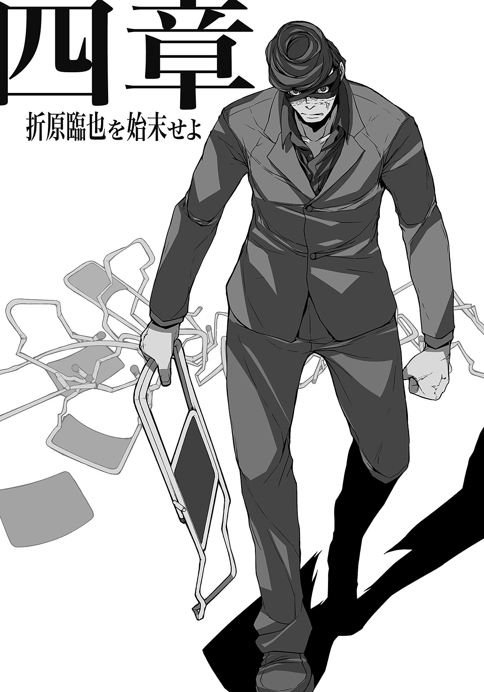
数日後 武野倉市 歓楽街
──なんだか、街が騒がしい気がする。
富津久会の越野が一人で街を歩いていると、どうにも妙な気分に襲われる。
なにやら、いつもと比べて街にとげとげしい空気が漂っている気がしてならなかった。
ただし、その原因の一つについては越野にも心当たりがあった。
阿多村和久と、喜代島菜々が姿を消した。
それは衝撃的な事実として世間に広まっていく。
だが、街の外に出ているという事は考えづらい。
噂が立ち、喜代島と阿多村、双方の手の者が街の出入り口を見張り始めた後で、市内で二人の目撃情報があったのだ。
二人並んで歩いている姿ではなかったものの、それぞれがまだ街に残っており、尚かつ生きているという事を示している。
恐らくは、街を出る準備を進めているか、あるいは街の周囲に見張りがいる事に気付いて警戒しているのかもしれない。
駅に人をやるだけではない。市内のタクシー会社にまで手を回し、二人の顔写真まで配っているという気合いの入れようだ。
捕まるのは時間の問題かと思われたが──誰かが匿っているのか、二人の行方はようとして解らず、ただ、時折目撃情報だけがもたらされるという日々が続いている。
──喜代島は阿多村のガキが誑かしたって騒いでるだろうし、うちは竜二の坊ちゃんが『和久は裏切り者だ！ 潰せ！』って騒いでるし、まったく、こんな時期に余計な手間を増やしてくれたもんだ。
──まあ、事情も事情だし、こんな街から逃げ出してえって気持ちも解るけどな。
溜息を吐きながら街を歩いていると、見知った顔が目に映る。
不良刑事の佐々崎だ。
「よう、旦那」
「あ、ああ。お前か」
目を逸らす佐々崎を訝しく思ったが、彼の前に二人の小学生らしき子供がいるのを見かけて、思わず目を細めた。
その視線に気付いた子供達が、「じゃあ、またね！ おじさん！」と言って走り去っていくのを見届けた後、越野が尋ねる。
「......あいつらはなんです？」
「ん？ ああ......あの子達はその、親戚の子でな。今日も学校をサボって街を彷徨いてたから、叱っていた所だ」
噓だな、と越野は確信した。
目の前の男の態度も怪しいが、そもそも前は二人に無理やり連れて行かれる形でどこかに向かっていた筈だ。少なくともとても『親戚の子を叱っている』様子には見えなかったと記憶している。
「......そうですか」
だが、ここでは敢えて深く追及せず、別の事を問い掛ける。
「なんだか街がピリピリしてますが、何か心当たりはありませんか、旦那」
すると佐々崎は、ああ、と息を吐いた後に答えた。
「この街の開発計画があるだろ？ どうにも、あれの利権争いが一気に激しくなりそうでな。他の街からも、ヤクザだのカルト宗教団体だの、焦臭い連中が集まってるらしい」
「......聞いて無いですね」
「まだ、お前らみたいな下っ端までには伝わってないだろうな。俺も署長に聞くまで気付かなかったぐらいだ。というか、署長から喜代島と阿多村に伝えたと言っていたからな、そろそろお前らにも話が来る頃だろう」
「......街の治安を護る警察のボスは大蝙蝠ってわけですかい」
呆れた調子の越野に、佐々崎は首を振った。
「それが利口なやり方だよ。あの若造署長にとっちゃ、この街は所詮出世して本庁に戻るまでの腰掛けだからな。波風を起こさず両方にコネを売るのが正解だ」
「賢い署長に街を護られるたぁ、嬉しくて涙がでそうですよ」
「そう言うな。あの署長も、今別の案件で板挟みを......ああ、そうだ、思い出した」
皮肉を受け流しながら、佐々崎は別の話を切り出した。
「念の為に聞いとくが......阿多村竜一が死んだ件で、何か噂は聞いてないか？」
「なんです突然。喜代島の野郎の仕業って噂は散々聞きましたけどね」
「......まあ、部外秘だが、お前には小遣いを世話して貰ってるからな、ネタの触りぐらいは流してやる」
「？」
訝しむ越野の肩をバンバンと叩きながら、佐々崎は耳を近づけ、言った。
「阿多村竜一殺しの犯人、近いうちにあがるかもしれん」
「はあ......はぁ!?」
驚きに目を見開く越野。
あれは事件ではなく自殺扱いか、そのまま迷宮入りにさせるものと思っていた。
しかも、署長は日和見主義の蝙蝠だと解ったばかりだ。波風を立たせる理由が解らない。
──いや、待てよ。
そこで越野は、一つの推測を立てる。
もしかしたら、犯人は喜代島とも阿多村ともまったく関係ない、イカれた殺人鬼か何かの仕業だと判明したのではないか？ それならば。納得もできる。
だが、その推測は、次の佐々崎の言葉で否定された。
「......巻き込まれたくなきゃ、今日のうちに街から逃げる事だな。荒れる事になるぞ」
頰に冷や汗を垂らしながら言う佐々崎、彼は周囲に目をくばり、この会話が他人に聞かれていないか警戒している。
逆に言うと、自分と顔を合わせている事自体は問題にならない、それ程の不味いネタなのだろうと推測できた。
「いいか、署長も本来なら揉み消す筈だった。だがな、どうも犯人がマスコミに漏れそうな空気になってきたらしくてな、それならば先に逮捕しなければ逆に警察と街の有力者達との癒着が疑われる状態になってきたって事だ。それ以上は言えん。ただ、警告はしたからな」
早口で言って去って行く佐々崎を見送り、越野は頰を引きつらせながら言葉を漏らす。
「なんだよ......この街で、何が起こってるってんだよ......」
♀♂
昼 ホテル『武野倉グランパレス』ロイヤルスイート
「そろそろかなあ、うん、今日辺りがいい感じになりそうだ」
子供のようにソワソワしながら、街を見下ろす臨也。
車椅子に座ったまま窓際をうろうろしている臨也を見て、坐は窘めるよう口を開いた。
「臨也殿にとっての『いい感じ』というのは、他の人間にとっては地獄という事でしょうな」
「そんな事はないよ？ 坐さんは俺を快楽殺人者か何かと勘違いしてないかい？」
「その物言いは、些か快楽殺人者に失礼ですなあ」
「酷いなあ」
肩を竦めつつ、臨也は坐に対して『自分』というものを語りだす。
「俺はね、坐さん。宝くじで一億円あてた人が心の底から喜ぶ姿を見るのが好きだよ。それまで平々凡々だった人生が、突然薔薇色になった瞬間の悦びを見るのは本当に好きだ。ただ。俺はそれまでの平々凡々な人生とやらも好きだし、突然の大金に踊らされて破滅していく様も平等に好きっていうだけさ。でも、自分から破滅の道へ誘う事はたまにしかしないよ」
「たまにする時点で十分悪魔だと思いますがなあ」
「その分、たまには自分から幸せに導く事もあるよ？ まあ、幸せなんて客観的には測れないから、もしかしたら破滅した人生の方を楽しむ人もいるかもしれないけど。俺はそんな人間も尊重しよう。数多の倒錯すら受け入れるさ。それが人間のやる事ならね」
「平等な愛とは、誰も愛していないのと同義......と、誰かが申しておりましたな」
淡々と皮肉を口にし続ける坐。
その背後に立っていた遥人が、坐に対して口を膨らませる。
「むー、坐お爺ちゃん！ 臨也さんを虐めてる？」
「これこれ、そんな事はしていないよ。ただ、遥人君や、臨也殿のような人間になってはいけないよ？」
「どうして？」
不満げに首を傾げる遥人に、坐は誤魔化さずに答えた。
「臨也殿のようになれるのは、臨也殿だけだ。憧れるのは自由じゃが、真似をしようとすれば、それは己を壊す事になる。もしそれでも壊れぬ道を探るなら、人を止める事になる。怪物になる事になるぞ」
「いいよ！ 臨也さんみたいになれるなら、僕は人じゃなくなっても──」
「駄目だ」
遥人の言葉を遮ったのは、珍しく厳しい表情になった臨也だった。
「い、臨也さん......」
「遥人君、俺が君やひまりちゃんや坐さん、他の色々な人達を好きなのは、君達が人間だからだよ。俺は、人を捨てた、自分を捨てた化け物は好きじゃない。まだ、化け物でありながら人間らしくしようとしてる奴の方がマシさ」
そんな存在に心当たりでもあるのか、遠くを見つめながら言う臨也。
「でも......僕も臨也さんみたいになりたいです」
「どうしてだい？」
遥人は変わらぬ笑顔のまま──どこか壊れた笑顔のまま、臨也に言った。
「臨也さんみたいになんでも知ってる人になれば、きっとひまりちゃんのお父さんと僕のお父さんを、仲直りさせられてたと思うから」
「......」
「お母さんがおかしくなっちゃった時も......僕、どうしていいか解らなかった......。だけど、臨也さんならきっと解ってたと思うんです。だから、僕、臨也さんみたいな人になって！ なんでも知ってる人になって！ そうすれば、みんなが仲良くする方法も解るから！」
笑いながら、少年は言った。
臨也は知っている。
少年の心は、開いているようで閉ざされている。
自分を盲信する事で、壊れそうな心を必死に支えているのだろうと。
「......」
部屋の隅で、ひまりはそんな遥人と臨也の会話を黙って聞いていた。
彼女が臨也を見る目は時に冷たく、場合によっては殺意すら込められている。
「ひまりちゃんもおいでよ。街がいい感じだよ？」
「......いい」
素っ気ない態度を取るひまり。
遥人とは違い、彼女は臨也との間に意図的に深い溝を空けていた。
臨也は知っている。
彼女が、全てを理解しているという事を。
全てを知っていながら、父親の凶行を止められる立場にいながら、臨也は結局、何もしなかった。それをひまりという少女は理解しているのだと。
親友に気遣われた結果、その親友を殺してしまう事になった男。それがひまりの父だ。
臨也はただ、全てを知った上で、相手が望む情報を提供しただけだった。
ひまりの父親が『何故親友があんな事をしたのか知りたい』と言っていれば、臨也は迷い無くその真実を伝えていた事だろう。
諍いを起こした親友同士の和解。それはそれで、臨也からすれば尊く美しいものなのだから。
だが、そうはならなかった。
それが全てだ。
臨也はなりゆきに任せ、そのなりゆきの一部始終を楽しんだ。
ただ、相手の選んだ道を尊重し、その背中を押したに過ぎない。
選んだのは遥人の父親だ。
無論、それが一般人からすれば如何に邪悪に見られる事かも臨也は理解している。
それでも、臨也はそのスタンスをやめないだろう。
彼にとっては、自分に対する憎しみも、あるいは信仰めいた行為すらも、愛の言葉のように受け止める事ができるのだから。
そしてそれは、この街に対しても同じ事だった。
「ねえ坐さん。俺さ、いつかまた、自由に跳ね回れる日が来ると思うかい」
ふと、横に立つ坐に尋ねてみる。
ジロリと臨也を睨んだ後、坐は言った。
「臨也殿が望むなら、そうなるのでしょう？ 医者にもそう言われたのでは？」
「......また、俺が自分の意志で跳ね回りたくなる日が来るかって事だよ」
「某にはなんとも言えませんし、心底どうでも良い事ですなぁ。ただ、治る見込みの無い方々からすれば、貴方の気分次第でその進退を決める所は、医療への冒瀆と受け取られても仕方ありますまい」
興味なさげな坐に苦笑しながら、臨也は半分独り言のように言葉を続ける。
「どうだろうね、俺が本当に治さなきゃいけないのは、足じゃない。頭の病気かもしれない」
「おや、今更気付いたのですかな？」
「そう言わないでおくれよ。自分がまともじゃないって事ぐらいは流石に解ってるよ。それでもね、止められないんだ。だから、俺はこの程度で済んだけど、次にヘマをやらかしたら......多分、命はなくなるだろうなっていう予感もある」
臨也は街を眺めながら、故郷である東京の一都市を思い浮かべた。
「皮肉な話さ。俺が、怪物みたいな奴に負けたって話はしたよね？」
「ええ、臨也殿お得意の悪巧みも全て力で跳ね返され、惨めに負けたと聞いておりますなあ」
「否定はしないよ。皮肉な事に、俺はその怪物の人間らしさに負けたんだ」
過去を懐かしむように言うが、その顔には、怒りも微笑みも浮かんではおらず、ただ、ただ無表情だった。
「その怪物が俺を殺せば、あいつは本当に怪物になる。それは俺にとって勝ちだった。俺は人間を愛して怪物に殺される。それなりに満足する結末になる筈だった。でも、そうはならなかったよ。怪物は怪物の癖に、人間の仲間を作ってたのさ。本当に信頼できる仲間をね。その人間が、怪物を止めた。その時点で......俺は負けてたのさ」
どこか憑き物が落ちたような顔で、臨也はなおも語り続ける。
「俺は、あの怪物の人間の部分を見ようともしなかったから負けた」
「......」
「おっと、つまらない話をしたね。俺の身体を治すとかとはちょっと関係ない話だったかな」
自嘲気味に笑う臨也に、坐はフム、と一考した後に口を開いた。
「臨也殿が身体を治せば、貴殿はまた前と同じ事をすると思いますぞ」
「......そうかもね」
「ですが、同じ結果になるとは限りませんなあ。臨也殿が、本当の意味で人を見る事ができればの話ですが」
「やだなあ坐さん。俺がまるで、本当の意味で人を見る事ができてないみたいじゃないか」
おどけたように言うが、坐はそれに対しては何も答えなかった。
臨也はやれやれと首を振った後に、ゆっくりと車椅子を動かし始める。
そして、山の麓に見える巨大な邸宅──阿多村の本邸の方を眺めながら、言った。
つい今しがたまで見せていた『人間らしさ』を欠片も感じさせない、周囲の気温を下げるような冷たい笑みを浮かべながら。
「さあ、行こうか。この街の終わりを眺めにね」
♀♂
警察署 署長室
時は、僅かに遡る。
「阿多村の連中が匿っている......という事はないんだろうな？」
「はっ......いや、まさか、そこまで彼らが短慮とは思えませんが」
ハンカチで汗を拭く仕草をしながら、署長は来客用のソファーに座る喜代島宗則に答えた。
「なら、何故まだ娘は見つからない？」
「失踪届を出して頂ければ、我々としても捜査として動く事ができるのですが......」
「そんな恥知らずな真似はできん！ 喜代島の娘が阿多村の小僧と駆け落ちだなどと！ 誘拐という形にできるなら、すぐにでも被害届を出してもいいがな」
「そ、それは流石に......」
娘が失踪したとあって、喜代島も冷静さを欠いているのは確かだろう。
「......実際、阿多村が、強硬手段に出た可能性もあるし、その理由も考えられる。駆け落ちに見せかけ、菜々を攫ったのかもしれん」
「理由、とは？」
「......この話はこの場限りと約束して貰うぞ」
「と、当然です！」
慌てて頷く署長に、喜代島が言った。
「阿多村の鉱山は、枯渇している。その証拠も摑んだし、つい数時間前、裏も取れた」
「なっ......」
驚く警察署長に、喜代島が不敵に笑う。
「今日の『懇親会』の挨拶で、私はそれを匂わせる発言をするつもりだ。阿多村がどう出るのかが楽しみだよ。焦って動けばよし。動かなければ、そこをついて勢力図の塗り替えを進めるだけだ」
懇親会。
それは、市内最大のホテル『武野倉グランパレス』の大宴会場で行われる、再開発計画に関する関連企業のパーティーだ。情報交換などの場として、月に一度程度開かれているが──今回の懇親会は、事業計画発足３周年目という事もあり、普段よりは些か大きな規模で開かれる。
あるいは、地方新聞や地方のテレビ局程度のマスコミが入る可能性もあるだろう。喜代島はそこまでは調べていなかったが、寧ろ居てくれた方が助かるとすら思っていた。
──ハッキリと『鉱山は枯渇している』と宣言してやりたい所だが、証拠の入手方法を問われると面倒な事になるからな。
そんな事を考えながら、喜代島は腹の内でもう一つの事を考えていた。
「......ところで、署長。オリハライザヤという男について何か解ったかな？」
「どうにもこの市内に潜伏しているらしいのですが......今は、阿多村の一派が血眼になって探しているようですが、なしのつぶてでしょうね」
「そうか。何しろ奴は息子を拉致監禁した凶悪犯だからな。街の平和の為に一刻も早く排除せねばなるまい」
「はい？」
署長が首を傾げる。
「被害届は出さないという話では？」
「利用価値のある内は、という奴だ。阿多村を排除もしくは手駒にできたなら、ただの情報屋風情に何の価値がある？ こちらの裏事情も知っている可能性がある人間を野放しにしておく筈がないだろう。金次第でこちらの情報を他人に流すという事なんだからな。息子の醜聞などで強請られても困る」
「それは、そうかもしれませんが」
目を泳がせている署長に、喜代島が言った。
「居場所が分かり次第私に伝えろ。私の方でも見つけたら知らせる。どちらにせよ、奴の居場所が分かった時点で被害届を出すからそのつもりでな」
「......また、この街での『事故死』が増えるというわけですなあ」
「......勘違いして貰っちゃ困るが、仮に記者達の『事故』が『事件』だったとしても、犯人は阿多村の連中だろう。解るな？」
喜代島は念を押すように言った。
過去の『事故』の数々は、先代の警察署長の時期に起こったものである。
この新しい警察署長がそれをどう思っているかは知らないが、念を押しておく事は無駄ではない。もはや、この男が自分の犬である事は確実なのだから。
「もちろんです。まあ、事故の撲滅というのは、人間が生きて行く以上避けては通れない事ですからねえ」
ハンカチを頰に当てつつ、どこか怯え混じりの愛想笑いを浮かべたまま答える署長。
それを確認した喜代島は、顔には出さず、心中でほくそ笑んだ。
喜代島は一つ、署長に噓をついている。
オリハライザヤの居場所は、とっくに解っている。
署長には「息子は目隠しして連れ去られたらしい」と言ってあるが、実際は、今日懇親会をやる『武野倉グランパレス』のスイートルームに泊まっているという事は摑んでいる。
──堂馬の話では、坐という老人が化け物だという話だったが......。
──まあ、所詮は暴走族のチンピラ相手の話だ。プロ相手にはどうにもなるまい。
既に、ホテルのスイートルームにある階には見張りの人間を置いてある。
阿多村を追い落とした後は、オリハライザヤがホテルを出た時か、あるいは坐という男が部屋を空けた所を見計らって、拉致をする事も可能だろう。
その時を待たずとも、逃げだそうとしている素振りがあれば身柄を押さえろと指示してある。
どうしても離れない場合は、それこそ警察を利用すればいい。坐という老人が店に放火したと堂馬に証言させればいいのだから。流石に警察を敵に回すほどその老人も愚かではあるまい。
そう考えた喜代島は心中でクツクツと笑うと、ゆっくりとソファから立ち上がった。
「さて、そろそろ行くとしよう。阿多村の顔が今から見物だ」
喜代島宗則は、オリハライザヤという情報屋を優秀だと評価していた。
だが、それだけだった。
確かに阿多村の鉱山の状況を摑んだ手腕は中々のものだが、個人で動く根無し草の男を、今後も重用しようとは思わない。
優秀なその手腕が自分の一派に向けられる可能性を考えるならば、排除は早いうちに進めた方がいいだろう。
優秀なだけの情報屋、自分が畏れる事はない。
喜代島は、そう考えていた。
情報屋など、コソコソと隠れながらパソコンを弄って他人のパソコンに侵入してデータを盗み出すようなコソ泥だろうと。
だからこそ、彼は堂々と『武野倉グランパレス』へと足を向けた。
頭上のスイートルームに、得体の知れない『情報屋』がいる場へと。
♀♂
夕刻 阿多村本家
「折原臨也の居場所が分かりました」
「やっとか」
磯坂の報告に、阿多村竜二は嬉しそうに顔を上げる。
折原臨也からの電話を受け、様々な『情報交換』を行った竜二だが、臨也という男は意外と慎重なのか、直接顔を合わせるような真似はしなかった。
だが、竜二は情報交換をするに従い、今まで以上に折原臨也という存在を危険視するようになっている。
「野郎は色々と知りすぎてる。いつこっちを強請ってきてもおかしくねえ」
「強請るまで待って、警察に任せるという手もありますが？」
「警察に貸しを作れってのか？ 今の署長は喜代島にも平気で媚びへつらう蝙蝠野郎だぞ。んな事より、臨也の野郎はどこにいるってんだ？」
磯坂の進言を切り捨て、竜二は肝心の報告を促した。
「それが、少々不味い事になりまして」
「不味い事だ？」
「ええ、居場所は、『武野倉グランパレス』のスイートルームです」
「はぁ!? 街ん中で一番目立つ場所じゃねえか!?」
耳を疑った竜二に、磯坂は淡々と言葉を続ける。
「ええ、東京からの報告で『高い所が好き』というものがありましたが、まさか潜伏先まで高所を選ぶとは」
「......待てよ。『武野倉グランパレス』って事は......今日、親父が行ってるんじゃねえか？」
「はい。そろそろ『懇親会』が始まりますからね。今日は節目の回ですので、喜代島氏も出席する筈です」
「それが『不味い事』ってわけか。ソゾロとかいうジジイが、親父をどうにかするってのか？」
父親に対して思う所も多い竜二だが、感情を抜きにして、『今いなくなられたら困る』という打算はあった。
故に、簡単に第三者にどうにかされてしまっても困る。流石に懇親会のような大人数の有力者が集まる場所で襲うような真似はしないと思うが、磯坂やネクの報告を聞くとありえないとは言い切れなかった。
そして、竜二の不安を後押しするような言葉を磯坂が告げる。
「いえ、不味い事というのは、別件です」
「なんだと？」
「スイートルームの階を始め、ホテル周囲に、喜代島宗則の息のかかった人間達が多数いるそうです」
「......あぁ？」
喜代島が臨也を監視し、場合によっては拉致する為に配置した人員。しかし、阿多村達から見れば、それはまったく違う意味合いとして受け取られる。
「やっぱり、喜代島とがっつり手を組んだってわけか。護衛ならまだいいが、親父を襲う手駒だとしたら......？」
「喜代島氏もそこまで愚かとは思えませんが」
「阿多村に楯突いてる時点で十分バカ野郎だろうが」
竜二の言葉は皮肉などではなく、どうやら本気のようだ。
そう感じた磯坂は、心中で『どの道、代替わりしたら阿多村は終わりだろうな』と思いつつ、その感情を隠して「そうですね」と頷いてみせる。
「臼原をホテルに向かわせろ。......まあ、あいつは目立つからな。懇親会の会場には入れられないだろうから、駐車場にでも待機させとけ」
そんな指示をしつつ、さて、自分はどうするかと考えていた竜二だが、そんな彼に声を掛けてくる者がいた。
「あの、竜二様」
振り返ると、そこには家政婦の一人が立っている。
「あー......新村だっけ新山だっけ」
「新山です。新山アザミと申します」
ペコリと頭を下げる家政婦。
「なんの用だ？ こっちは忙しいんだが」
普段家政婦達から話しかけてくる事はない為、竜二は首を傾げた。
そんな竜二に、アザミは不安そうな顔をして、声を半分震わせながら口を開く。
「実は......和久様から私の携帯に御連絡がありまして」
「......和久が？ なんで使用人のお前に？」
眉を顰める竜二に、アザミが言った。
「ええ......和久様がこの家に来た時から身の回りのお世話をさせて頂きまして、ですから、その......和久様に信頼していただいたのだとは思うのですが......」
オドオドしながら目を伏せるアザミ。その態度は、これからその信頼を裏切るような真似をするという意思表示にも見える。
「喜代島家の御嬢様と身を隠しているので、部屋から着替えと......銀行の預金通帳とハンコを隠れ場所まで持ってきて欲しいと......」
「......良く裏切ってくれたぜ。褒めてやる」
「は、はい」
下卑た笑みを浮かべる竜二に、畏れるように頭を下げる家政婦。
「で？ 隠れ場所ってのは何処だ？」
「武野倉山の旧坑道です。その中で、街を抜け出るチャンスを待っているそうです」
その後、竜二は直接その現場に向かって弟を押さえる為に、富津久会の人間を数名呼び出す事にした。臼原はそのままホテルに向かわせている。和久を押さえ込むのならば自分一人でも十分だと思っての配置である。
出かける準備をしている竜二に、磯坂が声を掛けた。
「お気を付けて。追い詰められた人間は、何をするか解りませんから」
「ネズミが猫を嚙むって奴か？ 生憎、俺は猫じゃなくて竜なんでな。妾腹のネズミなんか焼き尽くして終わりだ」
「......」
竜二は何も言ってこない磯坂の方をチラリとみた後、ふと気になって尋ねる。
「あのゴスロリ女はどうした？ いなり寿司だっけか？」
「本人に聞かれたら殺されますよ」
「返り討ちだ。あの面倒臭そうな女、目の前でパソコンを叩き割ってやったらどんな面すんのか楽しみだぜ」
ゲラゲラと笑いながら言う竜二に冷めた視線を送りつつ、磯坂は淡々と質問への答えを口にした。
「彼女は今、別件の仕事中ですよ。甚五郎様からの依頼でしてね」
「親父の......？ まあいい。どうせ、臨也も消すんだ。お前らの仕事も終わりって奴だ」
竜二としては、一刻も早く『カンディル』との仕事を終了させたいというのが本音である。
彼らが有能なのは確かだが、どうにも『折原臨也』に一枚劣る気がするし、なにより、彼らに対する一日当たりの報酬はべらぼうに高い。
金食い虫は太く短く使うに限る。
そう考えた竜二は、口答で契約の終わりを告げ、そのまま富津久会の面子と共に屋敷から出て行った。
残された磯坂は、自らの車に戻ると、エンジンを掛けながら携帯電話を取りだし、どこかに通話をかける。
「......もしもし、社長ですか。......ええ、仕事は無事に終わりました。ネクを回収して街を離れます」
唯一の上司へと報告をした後、苦笑しながら彼は言った。
「ええ、私も旧坑道に付いてこいと言われなくてラッキーでしたよ」
「私はまだ、死にたくありませんのでね」
♀♂
刃金市内 インターネットカフェ
「ふふふんほふー。はははんほほー」
武野倉市の隣町でありながら、交流自体は殆どない刃金市。
その片隅にあるインターネットカフェの個室内で、小さく鼻唄を歌いながらパソコンを弄るネク。
画面に踊る情報の数々を見て、彼女は満足そうに頷き、ニヒヒと笑う。
「良かったあー。準備は間に合ったよーっと」
「あとは、本人が覚悟を決めるのを待つだけだねー。ヒヒ。楽しみいー」
♀♂
武野倉グランパレス 地下駐車場
ホテルの下に広がる、広大な地下駐車場。
歓楽街や周囲のホテルと共同使用となっているせいか、三層構造になっている上、一階層ごとに数百台は停められるという広大な地下空間だ。
その片隅にて、臨也達と佐々崎は顔を合わせていた。
「......これが、俺が渡せる最後の情報だ。確認してくれ」
佐々崎が周囲を警戒しながら、臨也にマイクロデータカードを渡している。
「正直、割とヤバい橋渡ったんだぜ？ 捜査資料の持ち出しと流出なんざ、バレたらクビじゃすまねえ......。下手すりゃ刑務所行きだ」
「どうせ逃げるんでしょう？」
「ま、まあな......でも、何に使うんだ？ あんな昔の事件の捜査資料なんざ......」
「色々と使い道はあるって事ですよ。ま、その辺は詮索しないでくれると助かりますっていうことで、その分イロをつけましたんでどうぞ」
言いながら、分厚い封筒を複数渡す臨也。彼の後ろには子供二人と老人一人が控えているが、特に興味が無いのか、会話には一切加わってこない。
佐々崎が中を確認すると、軽く数百万になろうかという金額が入っていた。
「へへっ......ありがとよ」
人生を棒に振るには安い金額ではあったが、どのみち逃げなければ命そのものが危ないのだ。
佐々崎は封筒を懐にしまうと、そのまま立ち去ろうとしたのだが──
駐車場の入口近くに大型バンが停まるのを見て、思わず傍にあった柱に身を隠す。
「どうしました？」
臨也の問いに、佐々崎は顔を青くしながら答えた。
「あ、あのバン......見覚えがある」
息を殺しながらそっと覗くと、そのバンから、一人の巨漢が顔を出す。
「おや、凄いな......知り合いのロシア人より頭一つか二つ高い」
暢気な声で言う臨也に、佐々崎が言った。
「いいから早く隠れろ！ 富津久会の臼原だ！」
まだ遠い為にこちらには気付いていないようだ。佐々崎がこれ幸いにと臨也に小声で叫ぶと、後ろにいた少年が楽しそうに車椅子を押し、そのまま全員で柱と車の陰に身を隠す。
「噂は知ってますよ。『領主様の飼い鯨』でしたっけ？」
「ああ、あいつはやばい。自動販売機を持ち上げられるほどの怪物だ」
「......自動販売機？」
その単語を聞き、臨也が固まった。
佐々崎はそんな様子を見て、この男にしては珍しい反応だと眉を顰める。
──ああ、まあ、普通は信じられねえよな、んな話。
勝手に納得していると、臨也は緊張した面持ちで問い掛けてきた。
「自販機を持ち上げて......どのぐらい投げるんです？」
「え？」
「だから、どのぐらいの距離を投げるのかなって思って。あそこからここまでだとして、届くと思いますか？」
「いやいやいや、届くわけねえだろ！ せいぜいその場に落とすぐらいだ！」
何を言っているんだこの男は、という調子で答える佐々崎。
すると臨也は、ホッと安堵したように呟いた。
「良かった......人間の範疇か」
「？」
「いえ、こちらの個人的なトラウマですよ。どうぞお気になさらず」
気にするなと言われても無理があるのだが、佐々崎はそんな事よりも臼原だとばかりに、周囲を見渡した。
臼原はゆっくりとホテル内部に向かう入口へと歩み出している。つまり、方向的にはこちらという事になる。
──ヤベエな。折原臨也を探しに来たのか？ だとすると、一緒にいるのを見られるのはまず......い......？
そこまで考えた所で、佐々崎は気付いた。
別方向から、十数名の男達がこちらに近づいて来ている事に。
──富津久会......？
──い、いや、雰囲気が違う気がする......。
──なんだあいつら......？
疑問に対する答えが出る前に、男達がこちらを取り囲んだ。
「折原臨也だな」
「違いますよ？ 俺は奈倉。ちりめん問屋の隠居って奴ですよ」
「ふざけてんのか」
「割と本気ですよ？ そのぐらい俺は無害な存在だってアピールしたいんですけど......まあ、無理でしょうね」
すると、男達の一人が、反対側を歩いている臼原の姿を目に留めた。
「臼原......？」
そのタイミングを計ったかのように、臨也が叫ぶ。
「臼原さーん！ 良かった良かった！ こっちですよ、こっち！」
周囲の面々が、ギョッとしたように目を見開き、臨也と臼原を交互に見つめている。
──こ、このバカ、何を!?
驚いて臨也の方を見る佐々崎だったが──その時彼は気が付いた。
──......あれ。
──ガキ共二人、何処行った？
いつの間にか姿を消していた少年少女。
佐々崎が目で探すと、そこに柱の陰から覗く二人の子供がいて──
その手に持たれた小型の消火器のレバーを握り込み、謎の集団と臼原、それぞれに白い粉末を浴びせかけた。
「!?」
「ぐあぁあぁ！」「てめっ......なん......こらぁ！」「目！ 目ぇっ！ げほっ......」
臼原は目を手で覆い、臨也達を取り囲んでいた男達は、目や喉をやられて立ったままのたうち回っている。
そのタイミングで、臨也が叫んだ。
「アッハハハ！ まさか、俺が単独で動いてるとか思ってました？ バックもいない、一匹狼みたいな事してるって！ ねえ臼原さん！ 笑っちゃいますね！」
既に坐が車椅子を押し、消火器の煙を吸わない位置にまで移動している。
佐々崎は気付く。
今の臨也の叫びの内容に籠められた意味を。
臼原からすれば、自分に向けられた挑発の言葉に聞こえるだろう。後から来た謎の男達も消火器の粉が掛けられているとは気付いていない筈だ。
一方で、謎の男達からすれば、臨也が臼原と既知であり、男達に向かって挑発の言葉を吐いているかのように聞こえる事だろう。
そして、事態は簡単に臨也の手の平の上に収まった。
「てめぇ......どこだぁああ！」
ようやく視力が回復したようで、手で煙を払いながら前に進んでいく。
すると、白煙の中からニュウ、と巨大な手の平が伸びてきて、男の頭を鷲摑みにした。
「う、うすば......らぁあぁぁあっ!?」
そのまま片手で放り投げられ、仲間の数人と激突して床に叩きつけられる。
「畜生！ 応援呼べ応援！」
「富津久会だ！ 富津久会が手ぇ出してきやがった！」
「ぶっ殺せ！ 相手は臼原一人だ！ 囲め囲め！」
視界を取り戻しつつあった男達が、怒声を上げる。
「──────────」
臼原は、まるで獣のように吼え、更に別々の男の頭を握り投げる。
デタラメな光景が広がる最中、元凶である臨也達は、さっさと駐車場にあるエレベーターに乗っていた。
その場から離れようとしていた佐々崎と目が合う。
車椅子に乗った男は爽やかな笑みを浮かべ、佐々崎にヒラヒラと手を振った。
──あああああ！ やべえやべえやべえやべえ！
佐々崎は臨也に悪態をつくヒマも無く、慌てて出口の方に駆け出していた。
途中で臼原の乗ってきたバンの横を通り過ぎたが、車の運転席で富津久会らしき男が顔を青くしてどこかに電話をしている。
恐らくは、応援を呼んでいるのだろう。
──畜生！ 終わりだ！ もうオシマイだ！
それは、単なる偶然だったのかもしれない。
臨也の計算だったのかもしれない。
消火器の件は、子供達に予め指示していたのだろうか？ あるいは、少年少女が独自に気転を利かせたのだろうか？
だが、もはやその全てが佐々崎にとってはどうでも良い事だった。
──逃げるしかねえ。
警察にも追われる事になるだろうが、もうそれどころではない。
抗争の引き金は、こんな場所で──あまりにもあっさりと引かれてしまったのだから。
♀♂
武野倉グランパレス エレベーター内
「さてと......」
マイクロデータカードから入手した情報を、パソコンの無線経由でどこかに送信する臨也。
送信が終わると同時に扉が開き、宴会場へ続く通路が目の前に広がった。
「最後の情報も、欲しがってる人に送れたし......俺の仕事は全部終わったよ」
車椅子を遥人とひまりの二人に押されながら、臨也は横に並び歩く坐に語りかける。
「やっと俺も休めるよ。あとはじっくり見学するだけさ」
「......他人の破滅をですかな？」
目を細めてこちらを見る無表情の坐に対し、臨也はカラコロと笑いながら首を振った。
「どうかな。今の街の形は終わるかもしれないけど、人はどうなるか解らないよ？ 俺はただ、みんなが望む情報を渡しただけなんだからさ」
「......」
「情報は刃物と一緒だよ。それをどう使うかは、人間次第さ」
肩を竦める臨也に、坐は無表情のまま言った。
「臨也殿は気付いておらんのかもしれませんが、貴殿の言う刃は妖刀のそれと同じですぞ」
「どういう意味だい？」
「普通の人間では抗えるものではありますまい。呪いを売って『使い方次第』と言うのは、些か虫の良い話だと愚考したまで。呪詛返しに遭わぬように努々気を付けなされ」
老人の忠告に対し、臨也は少し考えた後──
どこか寂しそうな笑みを浮かべながら口を開く。
「いいんじゃないかな。その呪いも人の営みだっていうなら、俺はその刃に心臓を貫かれたとしても、その刃を愛そうじゃないか。まあ、坐さんが俺を護ってくれなかったらの話だけどね」
強がりや陶酔ではなく、臨也が本気でそう言っている事を坐は知っていた。
だからこそ、坐は臨也に雇われた護衛として、噓偽りのない言葉を返す。
「せいぜい忘れぬ事ですな。契約期間が切れたら、某が真っ先に呪いの刃と化す事を」
♀♂
旧坑道
「......この先だな」
阿多村竜二は、旧坑道の前で呟いた。
確かに立ち入り禁止の柵の扉にかけられた南京錠が、何者かの手で破壊されていたのである。
このまま奥に進めば、作業員達の休憩スペースがある筈だ。恐らく和久と菜々の二人はそこにいるのだろう。
木枠などで補強された、古い坑道。
途中から車などが乗り入れるようにしたのだろう。坑道としてはだいぶ広く掘られており、トロッコなどのレールも道に沿って張り巡らされている。
そんな坑道を10分程奥に進んだ所で、竜二は違和感に気付き足を止めた。
「......おい、なんか外の方から音がしなかったか？」
立ち止まっていると、確かに入口の方向から幽かな音が聞こえてくる。
誰かがこちらに向かってきているらしい。
「......」
見ると、無数のライトがこちらに向かってくるのが見えた。
何かを叫びながら、駆けてきているようにも思える。
「何だ......？」
富津久会から応援でも来たのかと考えたが、それはすぐに違うと思い知らされた。
こちらがライトを向けると、向こうが怒声を上げてくる。
その声を聞き、相手の正体に気が付いた。
「堂馬......？」
距離が縮まり、それぞれのライトによって互いの顔が照らし出される。
どうやら、喜代島堂馬達が翁華連合のメンバーを引き連れてこの場にやって来たようだ。
「手前ら！ なんでここにいる！」
堂馬の叫びに、竜二が叫び返した。
「こっちの台詞だ！」
「ちっ......さては、やっぱり手前らが菜々を搔っ攫ってやがったんだな！」
「あぁ？」
竜二が凄むが、年下である堂馬も負けじと睨み返してくる。
「とぼけんじゃあねえ！ こっちは、菜々がやっと俺にメールして来てな......駆け落ちするなんて書いてあったが、あいつが今まで切ってた携帯の電源を入れてくれたおかげで、位置情報が見れてな......そしたら、ここの坑道の目の前じゃねえか！」
家族サービスの位置情報検索機能を利用して鉱山周辺から発信されたと突き止めた堂馬は、この鉱山のどこかに彼女がいるのだろうと踏んで翁華連合に見張らせていたのだ。
「そしたら、手前らが雁首揃えて来やがってよ......。手前ら、妹に何する気だった？ ぁあ？」
「うぜぇな......。こっちは、手前の尻軽な妹に誑かされたクズをシメに来ただけだ。なんなら、手前らも纏めてここに埋めてやってもいいんだぞ？」
「やってみろよ......この野郎」
今更話し合う気はないのだろう。
ピリピリした空気の中、次第に互いの言葉数が減っていく。
そして、坑道内の温度が冷め切ったその瞬間──
坑道の入口の方と奥の方から、まったく同時に爆音が響き渡った。
♀♂
大宴会場
『それでは、続きまして......阿多村グループ会長、阿多村甚五郎氏の挨拶となります』
司会者の言葉に合わせ、阿多村甚五郎が壇上に登る。
足取りは年を感じさせぬほど力強く、街の支配者然とした雰囲気を醸し出していた。
──ふん、せいぜい虚勢を張っていろ。
会場の隅から、形だけの拍手をしつつ冷めた視線を送る喜代島宗則。
この後に控えている自分のスピーチの際、阿多村の坑道の秘密を匂わせる発言をする。
そうなれば、会場の中でも勘の良い者達は気付くだろう。
あとはじっくりと証拠の情報を周囲に流していけばいい。
慌てふためく阿多村の顔が見物だと、喜代島は心中にほくそ笑んだ。
『さて、こうして再開発事業が継続している事に、まず私は感謝したい。この町の住民達と、この街に新しい風を引き入れてくれた政治家の皆さんに』
──心にもない事を。
どうせ最後のスピーチになるのだと、嘲りながら阿多村の言葉を聞き続ける。
すると、喜代島の視界の端に、黒い影が蠢くのが見えた。
チラリとそちらに視線を向けると、車椅子に乗った黒服の男が、老人と子供を引き連れてパーティー会場の片隅にいるのが目に映る。
──......？
見知らぬ顔だ。
喜代島はそう思った。
──車椅子？
──いや、まさか。
息子の堂馬から聞いていた情報により、オリハライザヤという男が車椅子に座っていたという事は聞いている。傍に老人が立っているというのも共通項だ。
だが、何故この場にいる？ 誰かから紹介状を入手しなければ入れない筈だ。
誰が紹介した？
本当にあれがオリハライザヤなのか？
頭の中に次から次へと疑問が浮かぶ喜代島の耳に、阿多村甚五郎の凛とした声が響いてくる。
『そして、今日は皆さんに、重大な発表をしようと思います』
──？
重大な発表とはなんだ？
訝しみ、内容を想像する間もなく──
阿多村甚五郎は、その答えを吐き出した。
『武野倉鉱山を、本日をもって閉山としました』
──............何？
一瞬、何を言っているのか理解できなかった。
それは懇親会に参加していた面々も同じようで、突然の発表にざわめき始める。
『資源の枯渇が進み、採算が取れなくなった事が原因です。鉱山の街として発展してきたこの街の歴史が終焉を迎える事は残念ですが、再開発を機に、新しい歴史の第一歩を────』
スピーチは続いていくが、喜代島の耳には入らない。
──なんだこれは。
喜代島は、全身の毛穴から冷や汗が滲み出すのを感じていた。
──バカな、何故だ、何故このタイミングで！
混乱する喜代島の顔を遠目に見ながら、臨也は満足そうに頷いた。
「やあ、いい顔だね。とても人間らしい顔だ。素晴らしいね」
「......想像通り、という所ですかな？」
坐の言葉に対し、臨也は笑いながら首を振る。
「まさか！ 想定外だったよ！ こんな事になるなんて、まったくの想定外さ！」
そして、壇上にいる阿多村甚五郎を見て、素直に賞賛の言葉を贈った。
「流石、一代で財を築いた人は違うね」
臨也の脳裏に浮かぶのは、過去の記憶。
ほんの数日前──彼の携帯電話にかかってきた電話の内容を。
♀♂
数日前 武野倉グランパレス スイートルーム
『折原臨也だな』
唐突にかかってきた電話の声を聞いて、臨也は軽い驚きと共にニヤリと笑った。
「どちらさま......と聞くのは失礼ですよね。テレビのニュースや企業ＣＭで聞いた声のままですね」
そこで一旦言葉を切り、臨也は車椅子の上で姿勢と心を正してから言った。
「......『領主様』とこうしてお話しできるなんて、光栄ですよ」
臨也にとって、向こうからこの番号に掛けてくるとは意外だった。
これは即ち、臨也以上の情報収集能力は持っているという事だろう。
そして、情報源はあっさりと甚五郎の口から明かされる。
『念の為に調べ直したら、鉱山の資源枯渇の情報が漏れた形跡があった。担当者を追及して徹底的に情報の流れを追ったら、この携帯の番号が出て来たってだけだ』
「最初の『折原臨也だな』、っていうのはかまかけですか？」
『この番号の契約主を裏から調べたら、闇金でもブラックリスト入りしてる奴だった。そいつに契約させた飛ばし携帯だと思ってな』
淡々と経緯を語る甚五郎に、臨也が全身を歓喜で震わせながら言った。
「なるほど......それで、鉱山の秘密を知った俺をどうするつもりですか？ 始末しますか？」
『もう喜代島あたりにとっくにネタ流してるんだろ？ 今更お前を始末する意味なんざない。最初はお前を引き抜こうと思っていたが、どうやら手前は想像以上の大馬鹿野郎らしいからな。必要以上に関わらないのが一番だと判断した』
「俺を恨まないんですか？」
『恨んでも金が入るわけじゃない。無駄な労力だ。まあ、竜二が知ったらそうするだろうな。いや、竜二なら知らなくてもお前を始末しようとするだろう。あいつは小心者だからな。そのうちお前が自分を強請ると思い込むんじゃないか？』
そこまで語った後、僅かな間を空け、甚五郎は話を変えてくる。
『ぶっちゃけた話をするが、この街はもう終わりか？』
物凄くストレートに聞いてきた『領主様』──阿多村甚五郎に、臨也は楽しそうに答えた。
「どうでしょうね、皆さんの心掛けと努力次第だと思いますよ」
『だったら、少なくとも「阿多村と喜代島の街」というのはもう終わりだな。そのバランスを継続させる心掛けを持った奴も、努力をする奴もこの街にはもういない』
「貴方がいるじゃあないですか」
『この状況から周り全部の尻ぬぐいするなら、新しく何か始めた方が張り合いがある。金を隠して隠遁するさ。ほとぼりが冷めたらまた再起するつもりだ』
清々しいほどに『自分の身だけが大事だ』と言い切った甚五郎に、臨也は逆に好感を覚えながら問い掛けた。
「それで？ 領地をほっぽり出そうっていう『領主様』が何の御用です？」
すると、阿多村は明日の天気を聞くような調子で自らの用件を口にする。
『竜一を殺した犯人を知ってるか？』
そして臨也は、やはり明日の天気を教えるかのような調子で答えた。
「ええ、知ってますよ。本人から聞きましたから」
『......和久か？』
「惜しい、とだけ言っておきましょう。これ以上は、対価に見合う情報か金銭を頂かないと」
『そうか。なら、ここからは単なる俺の独り言だ』
甚五郎はそう前置きしてから、死んで間も無い自分の息子の事を冷静に語り始める。
『竜一には一生ものの貸しがあってな。奴が殺されたのは、それに絡んだ復讐だと思ってるんだが......心当たりが多すぎてな。それに、もしそれに絡んだ話なら、順当に行けば俺と喜代島も復讐対象だろう』
「その『貸し』について詳しく教えてくれれば、犯人を教えてあげてもいいですよ？」
『......それはできんな。家族の情という話じゃない。その内容を隠す事が貸しだ。ヒントまではやっても、ストレートに言う事は俺の価値を下げる。例え、もうバレバレの話だとしてもだ。自分でも下らん価値観だとは思うがな』
甚五郎の話を聞き、臨也は満足したように頷いた。
「いえ、実に人間らしい答えです。満足ですよ」
すると甚五郎は、これまでに調べた臨也の人となりを考え、皮肉の言葉を口にする。
『......お前、俺がどう答えても同じこと言ってたろ？』
♀♂
現在 大宴会場
壇上から降りてきた阿多村甚五郎は、折原臨也の姿を見かけて近づいて来た。
話しかけようとしていた事業関係者は山ほどいたが、それらを全て無視してズカズカと歩み寄ってきたのである。
「これはこれは、御招待頂きありがとうございました。そして初めまして、甚五郎さん」
「まさか馬鹿正直に来るとは思わなかったぞ。殺されるとは思わなかったのか？」
「もうさっき、殺されかけましたよ。貴方じゃなく、あそこの隅で睨んでる人の手駒だと思いますけどね」
チラリと視線を向けると、喜代島がワナワナと震えて顔を青くしたり赤くしたりしているのが見えた。
阿多村甚五郎は一言「そうか」と言うと、興味なさげに喜代島から目を逸らす。
街を見切る事にした彼にとっては、もはや喜代島はどうでも良い存在なのだろう。
寧ろ、今の興味は臨也にあるようで、人目があるにも関わらず堂々と尋ねた。
「お前が裏で誰と繫がっているのか、どういう立場なのかも色々推測はできる。だが一つ解らん。お前は最初に誰に言われてこの街に来た？ 俺でも喜代島でもない。誰かが根幹になる最初の情報をお前に流した筈だ」
「残念ですが、依頼主と情報提供者についてはお教えできませんね」
「そうか、なら、和久は今......」
臨也が首を振るのを見て、甚五郎は和久と菜々について尋ねようとしたのだが──
いつの間にか会場に入り込んでいた宇田川が、甚五郎に駆け寄って耳元で何かを囁いた。
それを聞いた瞬間、甚五郎の目がスウ、と細められる。
「......鉱山で爆発だと？」
更に追い打ちをかける形で、宇田川は一つの事実を口にした。
「竜二坊ちゃんや和久ぼっちゃん、うちの組の連中や翁華連合も巻き込まれているようです」
車椅子に座ったままその報告を聞いていた臨也は、『想像以上の流れだ』と呟き、目を輝かせている。
そして何か口を出そうとした次の瞬間──
会場の隅から、悲鳴が上がった。
臨也を初めとする全員がそちらに視線を向けると、そこには見知った顔があった。
折原臨也にとっても、阿多村甚五郎にとっても、そして、遥人とひまりにとっても見知った顔が。
それを見た瞬間、子供二人は別々の言葉を口にした。
「......だから言ったのに」
ひまりは憐れむようにその人物を見て、遥人は思い出したように声を上げた。
「あっ！ 公園のお姉ちゃんだ！」
遥人が指差した先にいたのは──
喜代島の首にナイフを押し当てた、新山アザミの姿だった。
♀♂
歓楽街
「なんだなんだ!?」
越野は目を丸くして、その光景を目にしていた。
夕暮れに合わせ、街のあちこちから火の手が上がっている光景を。
部下の構成員から『佐々崎が大慌てでどこかに逃げていった』という報告を聞き、訝しんでいた所──別の構成員から、驚くような報告がされた。
「街の......街のあちこちで、火の手が上がってます！」
「なんだと!?」
「しかも......阿多村さんの屋敷や、喜代島の家、翁華連合の連中の溜まり場や、鉱山の作業場の方からも煙が！」
「どうなってる!?」
ビルの屋上にでた彼の目には、確かに複数の場所から上がっている煙が見えた。
更に、時折爆発音のようなものまで聞こえて来るではないか。
混乱している所に、更に部下から報告があった。
「ネットがやべえ......。武野倉が閉山になったって凄い勢いで拡散されてるらしいっすよ！」
「街のコミュニティネットやＳＮＳにも凄い勢いで書き込まれてるとか......」
越野が慌ててスマートフォンから確認すると、確かに物凄い勢いで情報が拡散されていた。
まるで、誰かが意図的に情報を広めているかのように。
「デマか!?」
「懇親会で発表したって書いてありますが、本当かどうかは......」
越野は自分が富津久会の一員であるという事を踏まえた上で、冷や汗を搔きながら呟いた。
「やべえ......この街、終わるぞ......」
♀♂
大宴会場
「お前か、アザミ」
淡々とした調子で、阿多村甚五郎が声を上げた。
「随分と冷静なんですね、旦那様。いえ、阿多村甚五郎」
逃げ惑う客達を無視して、アザミと甚五郎が５メートルほど離れて相対する。
その周囲では、臨也が遥人に対して「もっと二人の顔が両方見える位置に移動しよう」と声を掛け、遥人が「はい！ 臨也さん！」と笑顔で車椅子を押し始めるというシュールな光景が繰り広げられていた。
アザミはナイフで脅した喜代島を引き摺りながら壁際まで移動しており、憎々しげな目を甚五郎に向けている。
そんなアザミに、甚五郎はやはりストレートに問い掛けた。
「お前が、竜一を殺したのか？」
「ええ、そうよ」
あまりにもあっさりと、アザミは罪を告白する。
その目には怒りは湛えられているが、後悔や懺悔の念といったものは感じられなかった。
彼女は二人の顔が良く見える位置に移動した臨也にチラリと視線を向け、礼を言う。
「ありがとうね、臨也さん。貴方がくれた情報のお陰で、色々と吹っ切れたわ」
「それは良かった」
「でもね、ここから早く逃げた方がいいわよ」
アザミはナイフを持たない方の手で肩に提げていたバッグをひっくり返すと、そこから無数のダイナマイトが転がり落ちた。
武野倉の鉱山で使われていた、発破用の爆薬である。
その内の一つには、小型の発火装置らしきものが取り付けられていた。
「おうおう、物騒なもんを持ち出したな」
自分の会社のセキュリティの甘さに苦笑する甚五郎。鉱山の枯渇を隠す為に色々と無茶をした歪みが生まれたのかもしれないと考えていたが、とりあえずハッキリと解る事が一つある。
甚五郎は、女が続いて取り出した起爆スイッチのようなものを見て口を開いた。
「その量をここで爆発させたら、俺もお前もそのクズも、纏めて死ぬ事になるなあ」
「ええ、そうね。私は別に構わないわ」
暗い炎を目に湛えながら、アザミは断言する。
「妹を殺したこの街に復讐できるなら、私の命なんか安いものよ」
♀♂
単純な復讐劇と言ってしまえば、それだけの話だった。
新山アザミには、妹がいた。
両親が早くに亡くなってしまった為、それぞれ別の里親に引き取られたのだ。
武野倉市に預けられたその少女を、アザミは陰ながら見守り続ける。
妹は健やかに育っていたが、そんな日々はある日唐突に終わりを告げた。
まだ16歳だった妹が、変死体で発見されたのである。
どう見ても他殺にしか見えない死体。
しかし、警察の判断は自殺。
口にチラシを詰められ、カッターナイフで自らの喉を十三回も刺したというのにも関わらず、武野倉の警察署は、それを自殺と断定して捜査を打ち切ったのだ。
明らかにおかしい事態だが、街の人間は誰もそれを追及しようとしなかった。妹の里親も最初は幾度となく警察などに訴えかけていたが、徐々に周囲からの圧力がかかったようで、そのまま街を去るハメになってしまう。
当時17歳だったアザミにも、流石におかしいと理解できた。
彼女は妹の里親と共にビラ配りなどしていたが、街の空気そのものが『余計な事をするな』という色に染まっていた事は今でもよく覚えている。
真相を探ろうとする彼女達の前に立ち塞がったのは、『街』そのものだった。
それでも、彼女はひっそりと、こっそりと、事件について探り続ける。
10年近くが経過した今、彼女はその街の空気を生み出したのが、阿多村家と喜代島家という、二大権力者であると知った。
この町の周辺では昔から何件も不審死などが続いているのだが、その多くは自殺や事故として扱われているという事も知る。街の内情などを探っていた記者などが死んでいる事から、街では喜代島か阿多村のどちらかが始末したのだろうと、暗黙の了解として噂されていた。
つまり、妹の死にもその二家が関わっているのではないか。
そう考えたアザミは、両家に近づく為に、己の素性を隠して様々な事をした。
結果として阿多村家のメイドとして潜り込む事に成功し、彼女は更に深く根を張り続ける。
そしてついに、彼女は知る事となった。
危険ドラッグに溺れて前後不覚になっていた竜一が、屋敷で作業していたアザミを襲おうとしたのである。無理やり逃れ、逃げようとした彼女に、虚ろな目をした竜一が口を開く。
──「ぅぉあぉお前もぉぉ、口にチラシつめられてえぇぇえのかぁぁあ？」
お前も口にチラシを詰められたいのか。
アザミの頭の中に、妹の顔が思い浮かんだ。
警察でも一般に発表していない、遺族にしか知らされていなかった死体の状況。
そして彼女は、竜一に恨みを持つ『協力者』を見つけ──試す事にした。
数日監禁した後、阿多村竜一の耳元にそっと囁いた。
自分は、お前が殺したあの少女の姉であると。
すると、変化は劇的だった。
みるみる青ざめていく竜一を見て、黒だと確信した。
そのまま自白を引き出し、ネットで告発し、警察に突き出す。
『協力者』とはそういう約束だった。
だが、アザミの理性は、相手が犯人だと確定した時点で、すでに吹き飛んでいたのである。
脅す為に用意したカッターは、気付けば脅しの道具ではなく、殺人の凶器となっていた。
後からやってきた『協力者』は、最初は恐れおののいていたが──『自殺に見せかけよう』と言いだして、そのままカッターを握らせ、ビルから竜一の死体を投げ落としてしまう。
皮肉な事に、それはアザミの妹の変死体と非常に良く似た状況だった。
自殺と断定された、妹の死体と。
しかし、彼女の気が晴れる事はなかった。
何が足りないのか、自分の怒りは何故晴れないのか。
罪悪感はない。だが、復讐心が満たされる事もなかった。
そんなモヤモヤとした想いを抱いていた時──アザミは、オリハライザヤという、奇妙な男に出会う。
他人の弱みをなんでも握ると豪語する、不思議な雰囲気を纏う情報屋に。
情報屋との二回目の接触──携帯電話を渡された時に、その情報屋は、阿多村竜一の事件について探っているのだと知った。しかも、どうやら自分ではなく『協力者』の方を疑っているような節があった。
彼女は、考えた挙げ句に言った。
『喜代島家と阿多村家の弱みを知りたい。できるならば、10年前の事件に関する事で』と。
その代わりに、彼女は話してしまった。自分がこの事件の犯人であるという事を。
これでバレても構わないと思った。
寧ろ、派手な逮捕劇になってくれればいいと思った。
阿多村家にバレてリンチで殺されたとしても、遺書が公開されるように『協力者』に頼んだ。
駄目で元々だ。これで何も進展がなければ、自首して全てを終わりにしよう。
ただし、もしも何か裏があるのならば──『復讐』の続きを実行しようと。
現実は残酷だった。
臨也から聞かされたのは、当時の事件は、喜代島と阿多村、双方を気遣って揉み消された事件だったらしい。
やはりドラッグを使用していた阿多村竜一が、喜代島堂馬の妹である菜々に襲いかかったのである。その後、凄絶な殴り合いの末に竜一は堂馬に追い払われたのだが──その帰り道、たまたま通りかかったアザミの妹が目に付いた。
襲おうとしたが、予想外の抵抗を受けたので殺された。
刺し傷以外に暴行の痕がなかったのが、アザミにとってはせめてもの救いだったが──彼女の復讐心は、喜代島と阿多村の全てに対して──いや、それ以上に大きな物へと向けられる。
そして、つい先刻、臨也から携帯にデータが送られてきた。
復讐に身を捧げる為の、最後のトリガーが。
封印された筈の、当時の捜査資料。
担当刑事のメモや、聞き込みの調査。
如何に強引に隠蔽されたのか、ひと目で分かる情報だった。
彼女は、許された気がした。
自分がこれから行う復讐は、正当なものであると。
単純な復讐劇と言ってしまえば、それだけの話だった。
もっとも、それ故に──復讐者の恨みは根深く、重い。
自分の命を代償として、その何倍もの規模の復讐を成そうと決意するほどに。
彼女の復讐対象は、この街そのものだったのである。
阿多村と喜代島の権力に支配された、傀儡の街。
その糸も、妹を見捨てた人形達も、全てひっくるめて許せぬと。
♀♂
そして、現在に至る。
アザミは時限式や無線操作式の発火装置を用い、街のあちこち──特に、阿多村と喜代島の勢力に関わりが深い場所を爆破、もしくは炎上させていた。
「今頃は、どこもかしこも燃えてるんじゃないかしら？ あんた達の子供達も、今頃は全員穴の中で泣いてる頃合いね」
狂気を孕んだ目で言うアザミに、ナイフを突きつけられていた喜代島が叫ぶ。
「なっ......なんだと!? どういう事だ!?」
「和久と菜々ちゃんが、どこに隠れてたか知ってる？ 武野倉鉱山の旧坑道よ」
「!?」
「だから、私、教えてあげたの。竜二のバカにね。ついでに菜々ちゃんの携帯を預かるフリをして、堂馬のクズにもメールしてやったわ」
そして、彼らはまんまと釣れた。
「入口にも奥にも爆弾を仕掛けたから、今頃は生き埋めか、良くて瓦礫の合間にできた空間で窒息を待ってる状況かしらね？ ああ、和久と菜々ちゃんは奥に居たなら生き埋めは確実ね」
「き、貴様ぁぁぁああっ！ ......ひっ!?」
激昂しかける喜代島だが、ナイフを首元に当てられ、あっさりとその怒りを引っ込める。
対する甚五郎は、無表情のまま、アザミを見据えて尋ねた。
「どうして、竜二達が全員中に入った事をお前が知ってる？」
「え？」
「宇田川の報告では、坑道の爆発があったのは15分前だ。だが、旧坑道からここまで15分で来るのは無理だろうし、ネット中継するような設備を人目を避けて整えたとも思えん。協力者がいるな？ 誰だ？」
「......どうだっていいでしょ。どうせこれから、あんたも私も死ぬんだから」
その言葉を聞いて、喜代島が悲鳴を上げた。
「わ、私は関係ないだろう！ 君の妹を殺したというのは阿多村竜一なんだろう!? だったら何故私や堂馬や菜々まで......！」
喜代島の疑問に答えたのは、アザミではなかった。
「ああ、それは簡単ですよ」
車椅子に乗ったまま卓上のフルーツをナイフで刺して遊んでいた臨也が、喜代島に対して楽しそうに『情報』を垂れ流す。
「女の子を殺した原因が、喜代島の娘を襲って喜代島の息子に殴られた腹いせ、なんて事が公になれば、貴方の家にとっても醜聞になるでしょう？ 堂馬さんが過去にやらかした悪事も色々と表沙汰になるかもしれない。だからいつもより念入りに揉み消したんですよ。当時の警察が気を遣ったのか、それとも貴方が圧力をかけたのかは解りませんけどね？」
「わ、わ、私は知らん！」
「知らなくても結果は同じでしょう？ 揉み消しの汚職態勢を生み出したうちの一人は貴方なんですから、まあ、自業自得って奴じゃないですかね。俺もさっき、貴方の子飼いの暴力団メンバーに似た人達に拉致されかけましたし」
「......」
自分の代わりに全てを説明する臨也に、アザミは一瞬呆気にとられ、口をパクパクとさせていた。
全ての復讐が、ここで完結する予定だった。
新山アザミにとって誤算だったのは──
復讐の狂気に囚われた彼女より、更に頭のネジが飛んだ人間がこの空間にいた事である。
「......あなた、逃げないの？」
「そうだね、確かにこの距離だと巻き込まれて死ぬね。遥人君、ひまりちゃん、部屋の外に出てるといいよ。坐さんは一応残ってね」
「はーい」「......」
臨也の言葉に、子供達がトテトテと外に駆けていく。街中で爆発などが続いているせいか、まだ警察は到着していない。警備員達が遠巻きに眺めているが、アザミの足元に転がる爆弾のせいで迂闊に近寄る事ができずにいた。
一方、アザミは立ち去らない臨也の意図が分からず、考えあぐねている。
それを迷いと取ったのか、喜代島がナイフを首に突きつけられながらも必死に叫んだ。
「か、考え直せ！ 君の妹は、そんな事をして喜ぶのか？ 復讐なんかして、関係ない人を巻き込んだりして、君の妹は喜んだりはしないだろう？」
王道的な説得の言葉を吐く喜代島だが──その肩に、ナイフが一度突き立てられた。
「ぐあぁがぁっ！」
悲鳴を上げる喜代島に、臨也が暢気な調子で告げる。
「それ、加害者が言っても逆効果なだけだと思いますよ？」
「......そうよ。今更、そんな言葉で止まるとでも思ってるの？ もう、妹の気持ちなんて関係ないのよ、これはもう、妹の恨みじゃない、私の恨みを晴らすための復讐なんだから。誰に恨まれたって構わないわ！」
そう断言するアザミに、臨也は飄々とした調子で言った。
「でも、俺は、少なくとも俺だけはアザミさんを尊敬するよ」
空気を読めないのではない。読んだ上で、敢えてそれを無視した調子で語り出す。
「......え？」
「中々できる事じゃないよ？ 自分の死んだ妹まで犠牲にして復讐を果たすなんて」
「......」
臨也が何を言っているのか解らず、アザミは思わず鼻白んだ。
そんな彼女の表情は無視して、臨也は車椅子の上でナイフを弄びながら、やや興奮したように言葉を回し始める。
「この時点で、君の妹......ええと、カスミちゃんって名前だったよね。彼女は『街を破壊したテロリストの妹』という肩書きがついたわけだ。カスミちゃんはただ真実が公表されただけなら、権力者の息子に殺された挙げ句に自殺扱いされたかわいそうな被害者で済んだのに、今じゃテロのきっかけになった元凶だ」
「元凶だなんて......！」
「今時、裏の裏まで新聞記事を読み込んで判断する人なんてどのぐらいいるかな？ 今回被害にあった街の人達はこう思うかもしれない。『あのカスミって女が阿多村竜一に黙って身体を差し出していれば、殺されずに済んだのに。自業自得で殺された上に、その復讐に自分達が巻き込まれた。良い迷惑だ』ってね。場合によっては、被害者でもなんでもない子達がスナック菓子でも食べながらネットニュースを見て、ニュースのコメント欄に『この妹ってのも男を誘うような格好してたんじゃないのかね？』なんて下卑たコメントを書き込んだりもするわけだ。もちろん、普通に公表してもそういう事を言う輩はいるだろうけど、何しろ無関係な人間まで巻き込んだテロリストの妹だ。何もしてないのに玩具にされるだろうねえ。君のせいで」
「......」
顔を青くするアザミに、臨也は更に続けた。
「そして、君はここで自爆して死のうとしてるわけだ。確かにそうなれば、あとは野となれ山となれだ。君が妹の評判に責任を取る必要もなくなって上手く逃げられる。本当に凄い。妹の復讐の為に、妹を辱める事ができるだなんて！ 俺は君が正直ここまでやるとは思ってなかった。せいぜい、阿多村甚五郎さんを背中から刺すとか、そのぐらいで終わると思ってたんだよ。ありがとう！ 本当にありがとう！ 君みたいな人がいるから、俺は人間の可能性は無限だって信じられる！ 人間は素晴らしいって心から賞賛できる！ 人間を愛する事ができる！」
「もう止めて！」
アザミが叫ぶ。
「どういうつもり！ 貴方もここで死にたいの!? 何がしたいのよ！」
すると、臨也は素直に答えた。
「見たいんだ」
「......え？」
「君の結末をさ。このまま俺の心無い言葉や阿多村さんへの怒りを優先してスイッチを押すのか、それとも何か俺の予想を超える別の答えを見つけるのかをね。スイッチを押す瞬間に、君が満足した表情で死ぬのか、それともただ勢いだけで死のうとするのか、俺はただ、そういう細かい事が知りたいだけなんだ」
興味。
歪んだ愛情とも言い換えられるような、ただ、ただ、純粋な興味と好奇心。
折原臨也の目には、それしかなかった。
「君は俺の想像以上の事をやってのけた。だからもっと知りたいんだ。俺の知らない、人間を」
死への怯えも、彼女を説得しようという打算もなく、ただ、本当に『アザミはどう動くのか、どんな表情をするのか』という事しか頭にない顔をしている。
ゾクリ、と、アザミの全身に怖気が奔った。
そして、確信する。
この男は──
折原臨也という男は、本当にここで自分が死んでも構わないと考えているのだと。
狂っているとしか思えなかった。
臨也という人間も怖いが、それ以上に、自分の置かれた立場を顧みるのが怖かった。
自分の妹の死すらも、ショーの一部にされている。
物凄い嫌悪感が全身を貫いた。
臨也という存在が悪魔のように思えてくる。
このままここで死ぬのは、例え臨也を道連れにしたとしても、最後まで手の平の上で踊らされていたという事になるのではないか。
全身に冷や汗が流れ、死が身近に感じられる。
──何をしているの、私は。
──こんなイカれた奴を楽しませる為に、私の人生は存在してるわけじゃ......。
──こんな奴の為に、カスミは死んだわけじゃ......。
怒りと恐怖が入り交じり、ワナワナと震えて臨也を見つめるアザミ。
だからこそ、彼女は気付けなかった。
彼女の背後にヌウ、と現れた、身長２メートルを軽く超す巨大な影に。
「......え？」
気付けば、アザミの身体は宙に浮き上がっていた。
起爆スイッチを持つ手が巨大な掌に強く握られ、そのまま持ち上げられたのである。
それだけではない。ミキリ、と嫌な音がして、彼女の腕の骨があっさりと折れた。
「あぁぁあっ......がっ......！」
衝撃で起爆スイッチが手から零れ、そのまま床に転がった。
巨影の主である臼原は、足元にダイナマイトが転がっているのも気にせず、呼吸を荒くしながら部屋の中を見回していく。
そして──彼は見つけた。
竜二から『揉めた時は始末しろ』と言って見せられた写真に写っていた、黒髪の男の顔を。
先刻、自分に集団をけしかけて自分だけ逃げた男の顔を。
「......」
臼原は無言のままぽい、とゴミでも放るようにアザミの身体を投げ捨てた。
壁に打ち付けられ、彼女はそのまま動かなくなる。
「お、おお、良くやったぞ！ おかげでたすかっ......」
冷や汗を搔きながらも礼を言いかけた喜代島だが、その言葉は最後まで言えなかった。
邪魔だとばかりに腕を振るわれ、裏拳の形になった拳が喜代島の顔面に直撃する。
「ヴェばっ」
喜代島の身体はそのまま数メートル転がり、やはり壁に激突して動かなくなった。
「おい、臼原......」
甚五郎が声をかけるが、臼原は無反応で臨也を睨み付けていた。
「駄目だな、聞こえてねぇ。完全にキレちまってる。ああなったら俺でも止められん」
一方の折原臨也は、一瞬だけ子供のようにキョトンとした顔をした後、ガッカリしたとばかりに首を振った。
「ああ......結局彼女の選択は見られなかったかあ。まあ、これも人生だよね」
そして、自分に向かって、ゆっくりと歩を進めてくる臼原を見て、臨也は慈愛に満ちた微笑みを浮かべてみせる。
「でも、許すよ。君みたいにピーキーなタイプが出てくるのも、人間の面白い所だからね」
臼原は臨也の言葉を聞かず、手近にあったテーブルを摑み上げた。
そのまま勢い良く振り下ろすが──直前で、そのテーブルが止まっている。
甚五郎の目に映ったのは、それまで傍観者に徹していた老人が、いつの間にか臼原の懐に潜り込んで、相手の足の甲を踏みながら両手で相手の片肘と身体の一部を押さえている姿だった。
一体如何なる作用なのか、剛力を誇る男がそれだけでテーブルを振り下ろす事ができなくなっている。
その間に、臨也は車椅子の電動スイッチを入れ、通常の電動車椅子よりもかなり速い速度でその場を離脱した。
「......」
臼原はテーブルから両手を離す。ズン、と重い音を立てて床に落ちるテーブル。
そして、臼原は空いていた方の腕を振るい、坐の身体を摑もうとした。
だが、一瞬早く坐が身体を動かし、相手の膝を踏み台として高く跳び上がると、そのまま膝を臼原のアゴに叩き込んだ。
そして衝撃で顔が上を向いた所で、相手の鼻と口の間に肘を打ち下ろした。
「......！」
体勢を崩しかけたが、倒れる事はなく──包帯の隙間から、ジロリと坐を見下ろした。
「ふむ......頑丈ですなあ。某ならば今ので昏倒しているが、若いというのは羨ましい事です」
尋常ならざる耐久力の臼原を前に、『若い』で済ませる謎の老人。
甚五郎は驚いた目で見ていたが、『カンディル』の報告書にあった『ソゾロデンスケ』という固有名詞を思い出した。
──ソゾロ......。ソゾロデンスケ？
──坐傳助......。まさか!? あの『唐獅子』の傳助か......!?
甚五郎が目を見開き、30年前の記憶から『唐獅子』こと坐傳助の伝説を引き出した。
30年程前、現在の格闘技世界チャンピオンであるトラウゴット・ガイセンデルファーに格闘のイロハを教えたとされる関東最強の喧嘩師。
喧嘩師でありながら仁義を重んじ、市井の人々の為に、あるいは一宿一飯の義理の為に腕を振るうという噂の男だ。
もっとも、戦い方は正義などとは程遠いほどにえげつなく、普段から持ち歩く事はないが、その場にあるのならば日本刀だろうと銃だろうと、あるいはただの石ころや砂であろうと何でも使う。煮卵をサービスしてくれたラーメン屋への恩を返す為に暴力団と敵対し、結果として、一人で三十人からなる組を潰してしまった事すらあるという。
甚五郎は半分眉唾だと思っていたが、目に映る老人は確かに恐ろしいほどの手練れだった。
臼原がゴキゴキと首を鳴らした後、老人に向かって手を払う。
その最中に摑み上げたテーブルを指の力だけで摑み、そのまま老人へと投擲したのだ。
テーブルに載っていた食器やフォークが大量に宙を舞い、巨大な質量のテーブルと共に老人へと迫ったのだが──当の老人はそのテーブルの下をかいくぐり、同時に、テーブルクロスの端を摑んでするりと引き抜いているではないか。
投擲したテーブルの下を通り抜けて臼原の眼前に走り込んだ老人は、そこで跳躍し、テーブルクロスを相手の顔面にはたき付けた。
「......っ！」
一瞬視界が奪われた臼原は、布を剝がそうと手を顔面に伸ばす。
だが、それを読んでいたかのように、老人はグルリと身体を回転させ、相手の腕を巻き込みながらテーブルクロスで首回りを固定した。
そのまま布の端を摑んで相手の背中側に落ち、自重で相手の首を絞め付ける。
普通ならばそれで決まりかと思う所だが、臼原も生半可な怪力ではないようで、手を顔面から引き剝がそうとする力だけで、頑丈なテーブルクロスをわら半紙のように引き裂いた。
「ふむ。その膂力に瞬発力、健全に生かせばオリンピックでメダルも狙えたでしょうに、道を違えるとは惜しい事ですなぁ」
一体この壮絶な戦いはどのような結末を迎えるのか。
目撃者達が固唾を吞んで見守っていた所で──空気を読まぬ声が、先刻までアザミの立っていた辺りから響き渡った。
「あーあー、坐さんったら、熱くなっちゃって。バカなタイプの男の子って感じだねえ。真っ正面から殴り合ったりしないで、毒でも塗ったまち針でも持ち歩けば簡単に勝てるのに」
今の坐の奇抜かつ繊細な動きの数々を見て、『正面から殴り合う』と断じる臨也。
そんな彼に興味の眼を向け、甚五郎が問い掛けた。
「あの爺さん、どうやって引き抜いた。お前みたいな悪党の手先になる人間には見えんが」
「ああ、坐さん？ あの人、冤罪で何年も刑務所に入っててねえ。その間に娘夫婦の店が立ち退きで狙われたり、その巡りでお孫さんまで狙われたりしちゃってたんですよね。俺はただ、そんな時にタイミング良く坐さんの冤罪を証明して自由にしてあげたり、それまでの間、娘さん夫婦やお孫さんを保護してあげてたってだけさ」
カラコロと笑いながら、臨也が続ける。
「まあ、出会うなり俺の本質が見えるだのどうこう言いだしたけど、無視してお願いしたんだ。御礼は要らないから、10年間だけ俺のボディーガードをやってくれってね」
「10年か......随分長いな」
「冤罪で刑務所に入ってたのが10年だからね。冤罪を押しつけた真犯人まで見つけて逮捕させたんだし、一年中拘束してるわけでもないからそんな横暴な要求じゃないと思うよ？」
サラリと言ってのけた臨也に、甚五郎は苦笑しながら言った。
「若造が、あんな旧時代の遺物まで引っ張りだして何をするつもりだ？」
「......別に？ 力の極致って奴に俺は昔負けたから、確かめたかっただけだよ。技の極致なら、どんな理不尽な暴力にも勝てるのかってね。......まあ、それを実証する機会があるのかどうか知らないけど......純粋に俺も学びたかったのかもね。人間の技の極致を」
「ほう？」
「俺は、力もないし技術もない。真っ正面から喧嘩なんて本当は好きじゃあないんだ」
すると、臨也は激闘を繰り広げている坐達から視線を外し、壁際で倒れているアザミへと近寄った。
そして、彼女の傍に落ちていた、何かのスイッチのような物を拾い上げる。
「俺には、こんな戦い方しかできないからさ」
見ると、臨也の反対側の手に握られていたのは、床に散らばっていたダイナマイトの一本──発火装置が取り付けられた物だった。
臨也は拾った物──起爆スイッチを膝の上に置き、ダイナマイトを天井高く投擲する。
そのダイナマイトが天井近くに達しようかという頃合いで、臨也はどこからか取り出したスローイングナイフを投げ放った。
車椅子に座ったまま投げたとは思えぬ速度。上半身の稼働する関節を最大限に効率良く動かす、独自の鍛錬によって培ったと思しき投法。
尋常ならざる勢いで放たれたそのナイフは、ダイナマイトの本体を貫き、そのまま天井に突き刺さった。
次の瞬間、臨也は膝の上に置いたスイッチを手に取り、迷う事無く押し込んだ。
そして、天井に縫い止められたダイナマイトが炸裂し──
坐と臼原が戦っている辺りに、天井の瓦礫が大量に降り注いだ。
「......」
身も蓋もない真似をした臨也を半目で見る甚五郎だが、臨也はニヤリと笑うと、車椅子の上で肩を竦めた。
「うう......」
すると、爆音の影響か、気絶していたアザミがうっすらと目を開ける。
「やあ、お目覚めかい？ 最後の最後で詰めを誤った気分はどうかな？」
アザミは暫し虚ろな目をしていたが、その目に徐々に理性が戻り始め、様々な感情が入り交じる複雑な表情で臨也を見た。
「......目が覚めないで、このまま死んでた方が良かったかもしれないわ」
「生きてて良かったと思える日が来るかもしれないよ。人は予言者じゃないんだ。結果を見てから、諦めるなり抗うなりすればいいさ。もう、それすらできない妹さんの代わりにね」
「......ッ！ ......まあいいわ。正直、さっきの貴方の言葉で気付いたけど。もうカスミの顔も思い出せなくなりかけてる。......結局、自分の為だけに暴れてたっていう良い証拠ね」
「いいじゃないか。忘れるっていうのは、人間が前に進むために生み出した愛すべき魂だよ」
「貴方......何が目的なの？ 私を怒らせる事？ それとも反省でも促したいの？」
ゆっくりと起き上がり、憎しみと動揺を交えながら問うアザミに、臨也は正直に答える。
「人間観察だよ。俺はもっと、人間の事が知りたかった。それだけさ」
臨也はそれだけ言うと、そのまま車椅子を動かして出口へと向かった。
それを見た甚五郎が眉を顰める。
「あ、おい。逃げる気かお前」
「じゃあね、アザミさん、甚五郎さん！ 貴方達は中々楽しい人達でしたよ！ できればまた会いましょう！ 暇になったら電話しますよ！」
そんな事を言いながら、手を上げて去って行く。警備員達が止めようとしたが、その手に先刻とは別のダイナマイトが握られている事に気付き、悲鳴を上げて後ずさった。
呆然としている甚五郎の背後から、老人の声が掛けられる。
「......失礼。揉み消しは悪と断じられた流れの後で非常に恐縮ではあるのですが、警察の方々には、某達の事は上手く誤魔化しておいて下され」
ペコリと一礼した後、埃を被っただけで無傷の坐が廊下へと駆けていく。
やはり常人離れした速度で、逃げた車椅子の男を追走し、始末するかのような勢いで。
後に残されたアザミは、暫く呆けた後──甚五郎の姿に気付き、睨みつけながら口を開いた。
「......甚五郎......貴方が......あのクズ可愛さに事件を揉み消したりしていなければ......！」
「勘違いするな。俺は息子可愛さに揉み消してなどいない。あの頃の警察署長が勝手に気を回したのを、俺が勝手に息子に貸しとして押しつけただけだ。もちろん、竜一が言えば俺から揉み消しを指示したろうし、罪を隠したのは事実だからな。お前が俺を憎むのは正当な権利だ」
甚五郎は大きく溜息を吐くと、こちらを睨み付けるアザミに問い掛ける。
「どうする？ 俺に一矢報いてみるか？ ダイナマイトもフォークも床に散らばってるぞ？」
「......スイッチをさっさと押せなかった時点で、私にもうそんな資格はないわ。でも、貴方も、喜代島も、この街も、私は一生許さないし、憎み続ける。もし刑務所から出られたら、貴方をまた別の形で苦しめてやるわ。どんな手を使ってもね」
「そうだな。楽しみに待つとは言わん。だが、やれるものならやってみろと言っておこう。その時俺が再起してたらまた家政婦として雇ってやろう」
「......せいぜい大物ぶってなさい。これから没落する領主様」
こちらを睨んだまま警備員に運ばれていくアザミを見送った後、甚五郎は小さく笑う。
「それにしても......」
苦笑したまま首を振り、甚五郎は『折原臨也』という男に対する評価を塗り替える。
「ありゃ、想像以上どころか、天下無双レベルの大馬鹿野郎かもな......」
♀♂
臨也がホテルの搬入口までいくと、そこには一台の車が止まっていた。
「やあ、待たせたね！ すぐに出発するよ。坐さんが怒って追いかけて来る前にね」
車の前に居る、遥人達を含めた複数の人影を見ながら、臨也は爽やかな笑顔で声を掛ける。
だが──それに応えたのは車の前の人々ではなく、臨也の横に音も無く追いついていた老人の声だった。
「待つのは貴殿ですなあ。臨也殿」
「......」
相手の無表情から様々なものを察した臨也が、やれやれとばかりに肩を竦める。
「やだなあ、坐さん、もしかして怒ってる？ 俺は坐さんはあの程度なら無傷だって信じたからああしたんだよ？」
「左様ですなあ。某も臨也殿を信頼しておりますぞ。......脳味噌を三十回揺らされた程度では、臨也殿は決して脳震盪など起こさぬと」
その直後、臨也のテンプルと顎に連続で細かい打撃が三十連発で入る事になるが──臨也が何発まで耐えられたのかは、本人しか知り得ぬ情報となって世の中に刻まれた。
間章 折原臨也という男⑤
なんだよ、また来やがったのか？
あのノミ蟲について話す事なんざねえっつったろ！
......しょうがねえな。
そこまで頼み込まれちゃ、断る方が理不尽だ。
だがな、俺があいつについて話せる事なんて殆どねえぞ。
解るのは、あのノミ蟲がどうしようもねえ奴だって事だが......。
ノミ蟲の中で、一つだけ俺が認めてる事がある。
あいつの、執着っつーのかな......。一つの事に目ぇつけたら、手前の命すらいらねえって勢いでのめり込んで来んのは、正直末恐ろしくなるぜ。
あいつに『恐さ』を感じた事があるとすりゃ、その一点だけだ。
だからよ、気を付けろ。あいつは自分の命はまず二の次だ。こっちが『この程度で引くだろう』って思った時には、あいつは更に一歩前に出て、もう懐に入り込んでやがる。
何が厄介かって、その癖、ちゃっかり無傷で済んだりする所なんだよな......。糞、思い出すだけでも腹が立ってきやがった。
......とにかく、あのノミ蟲野郎の相手をするなら、人間が相手だと思うな。ゾンビでも相手にしてると思った方がいい。
あいつ自身は、自分が人間だと勘違いしてやがるんだろうがな。
人間扱いする必要はねえぞ。いろんな意味でな。
それにしても......。
臨也の野郎。生きてやがったのか。
そうか......。
ああ、なんでもねえよ。とにかく、あいつには関わるな。
他の連中にも聞いたなら、みんな言ってただろ？ あいつに関わるなってよ。
もしも本人に会う事があったら言っといてくれ。
『池袋には二度と来るな、いーざーやーくん』ってよ。
──折原臨也の天敵と噂される男性Ｈ氏の供述より抜粋
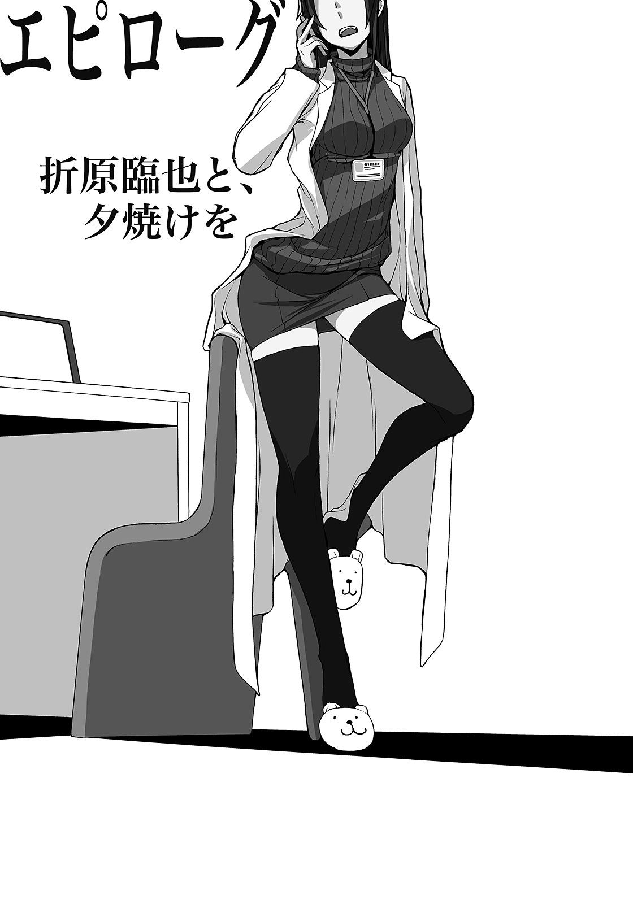
それで？ 結局どうなったの？
『どうもこうもないさ。街が更地になったわけじゃないけど、少なくとも「阿多村と喜代島の分割統治」っていうバランスで成り立っていた武野倉市は完全に崩壊したよ。何しろ、阿多村竜二も喜代島堂馬も鉱山に閉じ込められて指示が出せない。互いに爆弾で攻撃されたと勘違いした富津久会と翁華連合が大抗争。機動隊まで出張って三日がかりの大捕物だったみたいだよ』
ふうん。馬鹿な連中ね。
『ついでに言うと、鉱山の街っていう意味での武野倉市も終わったね。最悪な事に、今回の事件を受けて、空港と再開発の話も一旦白紙になるかもって感じらしいよ？』
最悪ね。私達にとっても痛手よ。何人首を括るのかしら。責任を取って死んだら？
『酷い事言うね。俺はただ、みんなが欲しがってる情報をあげただけだよ？ その結果、街が一つ無くなっただけさ。どっちみちあの街はもう限界だったから、俺が行かなくても阿多村竜二と喜代島親子がグダグダにして10年ぐらいでもっと悲惨な事になってただろうけどね』
こっちでもニュースになってたわよ。一人の女が妹の仇討ちで暴君達に一矢報いたって、半分美談みたいになってるわね。で、そのアザミって子はどうなったの？ 貴方に嫌がらせされたから、悲観して自殺でもしたかしら。
『憑き物が落ちたみたいになってるって噂だよ。まあ、あれがきっかけで阿多村竜一や喜代島堂馬がどれだけ悪辣な事をやってきてたかが表沙汰になったからねえ。当時の警察署長とかも処分されるってさ。まったく、人生何が起こるか解らないよね。でも、アザミさんは気になるから、今度変装して裁判でも傍聴しようかと思ってさ』
貴方、本当に遠慮ってものがないわね。
そういえば、その馬鹿息子達はどうしてるの？
『坑道で酸欠寸前になってるところを助けられたみたいだよ。まあ、今後の事を考えるとそのまま死んでた方がマシだったって言うかもね』
貴方にだけは言われたくないでしょうね。
死んでた方がマシだった......ってみんなに悔しがられる立場でしょう？ 貴方は。
『もう少し歯に衣着せてくれてもいいんじゃないかな？ 久しぶりなんだし』
......ええ、久しぶりね。それにしても、あなた、本当に生きてたのね。
『死にかけたけどね』
晩節を穢したんじゃない？
惜しまれる内が花って言葉を知らないほど無知だったかしら。
まあ、私には関係無い事だけど。じゃあね。
♀♂
刃金市 海岸沿いの公園
通話が一方的に切れた事を確認した後、臨也は肩を竦めて見せた。
「まったく、波江さんは相変わらず厳しいなあ。ネブラが武野倉の再開発に関わるかもっていうから情報を教えてあげたのに」
「付き合う相手は選ぶ事だな」
武野倉市に隣接する街の海岸。車椅子上で肩を竦める臨也の横に、一人の男が立っている。
「そうですね。その点俺は、警察庁のエリートキャリア様とお近づきになれて幸運ですよ」
「今回の件でキャリアも傷物になったがな」
それは、武野倉市の警察署長──柿沼だった。
普段の彼を知る佐々崎や喜代島が見れば、『誰だ？』と眉を顰めるような変貌ぶりだった。
他者に媚びる様子は欠片もなく、眼鏡の奥の眼光は鷹のように鋭い。『若手エリート』という言葉がいかにも似合う貴族的な雰囲気を醸し出している。
「まったく、こちらの想定以上に引っかき回してくれたな。阿多村と喜代島という膿を絞り出すどころか、まさか街そのものが壊れかけるとは」
「言ったでしょう？ 貴方の為じゃなくて、俺は俺の為に動くって。......まあ、俺も想定以上でしたよ？ 人間関係で引っかき回そうとしたら、まさか爆弾テロにまでなるなんて普通考えませんって」
肩を竦める臨也に、柿沼は溜息混じりに言った。
「まあいいさ。前の警察署長に関しては知り合いの監察官が動く。そこからまた膿は絞り出せるだろう......爆弾での人死にが出なかったのは唯一の救いだ。お前のやらかした分も含めてな」
「ああ、あのでっかい人、どうなりました？」
「報告によると、瓦礫をはねのけて逃げたそうだ。『オリハライザヤァァ』と怪物のように叫んでたらしい。良かったな。友達ができたみたいだぞ」
「あの手の力押しタイプ、苦手なんですけどね......」
少しだけ嫌そうな顔をした後、臨也は気になっていた事を尋ねる。
「そういえば、甚五郎さんはどうなります？」
「失脚するであろう喜代島と違って、揉み消しの証拠は丁寧に潰していたようだ。罪に問うことはできるだろうが、収監までは難しいな。もっとも、奴はグループと財産を整理して、どこかに引っ込むつもりらしいが......奴の手の内は全ては暴けんだろうな」
「そうですか。柿沼さんの手腕でも暴けませんか。池袋署で俺を散々いびってくれた貴方でも」
「......何を暴こうか、何を隠そうが、全ては今更だ」
皮肉を込めた臨也の言葉に、柿沼は苦笑を浮かべた。
「もう、あの街に太陽はない。沈んだ。もう沈んでしまったんだよ、臨也」
「それを望んだのは貴方でしょうに」
「ああ、腐った太陽に照らされるぐらいなら、闇夜の中で正義を護るのが俺達の務めだ」
柿沼は鼻を鳴らすと、表情をやや緩めながら愚痴を溢す。
「とりあえず、逃げた佐々崎の手配からか。やれやれ、余計な真似をしてくれたな」
そして──臨也の背後にある数台の車と、その周囲に立つ人間の一部を見て、柿沼は意地の悪い笑みを浮かべて見せた。
「そうそう。......炭鉱爆破での失踪者を探すのは、もう少し時間がかかるだろうな。今の内に、せいぜい遠くに送り届ける事だ」
武野倉市の騒動に追われ、10日ぶりの半日休暇を得た警察署長が去った後──臨也はゆっくりと車椅子を手動で動かし、車の周りにいる面々に近づいて行く。
そして、その内の一人に声を掛けた。
旧坑道の奥での落盤に巻き込まれて『行方不明』という事になっている、阿多村和久である。
「やあ、気分はどうだい、生死不明の失踪者君」
「臨也さん......」
どこか怯えているような和久の肩に手を回し、顔を近づけて誰にも聞こえぬように囁いた。
「見せておくれよ、和久君。君があの純粋な菜々ちゃんに後ろめたさを抱えながら、この先どんな生き方をするのかを」
「......本当に、アザミさん、俺の事を何も言ってないんですか......？」
「そうだよ、和久君。『共犯者』なんかいない。全部自分の手で成し遂げた復讐だって言い張っているらしい」
阿多村和久は『共犯者』だ。柿沼と佐々崎から得た警察の情報や、竜一に毎日のようにいびられていたという周囲の声などから、臨也はすぐにピンと来て、彼にカマをかけたのである。
結果、彼はすぐに認めたのだが──アザミが彼に、『君と菜々ちゃんは坑道で生き埋めになって死ぬ。名前を変えて新しく生きてくれ』と、そんな事を提案したらしい。
臨也が『彼女は、また俺の想像を超えてくれた』と考えていると、菜々がこちらに近づいて来て言った。
「あの......本当に、私達に新しい戸籍を頂けるんでしょうか」
「もちろんさ。約束したろう？ 情報の代わりに、君達の駆け落ちを手伝うって」
「でも......もしかしたら、臨也さんが誘拐犯扱いされて逮捕されてしまうかも......」
やはり何処かズレた事を言って心配する菜々に、臨也は一瞬ポカンとした後、ケラケラと笑いながら答えた。
「いいんだよ。菜々ちゃん。俺にとってはね、人間が決めた法律よりも、人間そのものの方が大事なんだ」
偽りのない本音だった。
だが、それをどう好意的に受け取ったのか、菜々は目を輝かせながら遥人に言った。
「臨也さんって、やっぱりいい人なんですね！」
「そうだよ！ 臨也さんは凄く優しい人なんだから！」
菜々と遥人がそんな会話をするのを聞き、それ以外の全員が『それだけは絶対にない』と心の中で呟いた。
「......私も、あのぐらい馬鹿だったら幸せだったのかな」
ぼそりと呟くひまりに、坐が小さく首を振る。
「幸せなど人それぞれじゃよ。お主にも某にも、そのうち見つかるさ。臨也殿をこの手で縊り殺せば、その時は幸せかもしれんしの」
「......私も殺る」
その会話がたまたま耳に入ったのか、臨也が頰に軽い冷や汗を搔きながら問い掛けた。
「何か物騒な会話してない？ 坐さん、もしかして天井崩しに巻き込んだの、まだ恨んでる？」
「まさか。あの程度の些事で恨もうが恨むまいが、臨也殿が死んだ方がいい事に変わりはありませんのでな」
「......そう。それならいいんだけど」
何がいいのか自分でも解らぬまま、臨也がそのまま自動車の方に向かって車椅子を進めていくと、車の奥から二人の人影が顔を出した。
「やれやれ、あのお坊ちゃんとお嬢ちゃんを暫くうちで雇えとは、正気ですか？」
「私は好きだよう？ 菜々ちゃんだっけ？ ああいう箱入り娘っ子ちゃんー」
オールバックにサングラスという男と、ゴスロリ眼鏡の少女である。
「まあそう言わないでよ、磯坂さん。それにしても、資料見たけど、俺の妹達のスリーサイズまで報告するって、やりすぎじゃない？」
「手抜きはしない主義ですので、そもそも、貴方のせいで我々はこの地域で仕事しにくくなったんですから。次の任地はしっかり紹介して下さいよ、折原社長」
「登記だと違う人が社長になってるんだから、俺の事はせめて裏社長って呼んでくれないかな」
「駄目社長でいいよー」
「そんな事を言う子には給料を上げないよ、いなりず......ゲフっ」
真顔になったネクから喉に手刀を喰らった臨也は暫し咳き込む事となった。
「さて......お喋りはこのぐらいにして、そろそろ出発しようか......おや？」
呼吸を整えながら顔を上げると、臨也の目にとある光景が焼き付いた。
「ほら、見てみなよ。武野倉市が夕焼けに染まってるよ」
それは見事な茜色で、まるで太陽の中で燃え落ちているかのようにも見えた。
「正直、あの街はいつか潰れると思ってたけど、まさか本当に一人で暴れて街を潰すだなんて、俺にはとても真似できない。アザミさんの行動力は、本当に尊敬に値するよ」
今はこの場にいない人物の事を思い出し、彼女に最大限の敬意と好意を向けながら、臨也は静かに夕焼けに燃える街を見つめ続けた。
共に並んだ中で、臨也の本質を良く知る者達は思う。
彼はきっと、夜の闇も日の出も同等に美しいと言うのだろう。
そう理解しながらも、彼らは臨也の横に立ち、夕焼けに照らされる武野倉市の街を、そして阿多村という帝国の終焉を眺め続けた。
彼らは知っている。
折原臨也と行動を共にし続ければ、何れ夕焼けに身を焦がされるのは自分達だと。
それを理解した上で、今はただ──折原臨也と、夕焼けを。
願わくば、その落日が明日の日の出に繫がると信じながら。
彼らは皆、そう思いながら沈む太陽を見つめ続けた。
臨也と共に歩まなければ、決して見られぬ景色がどこかにあると信じながら。
完
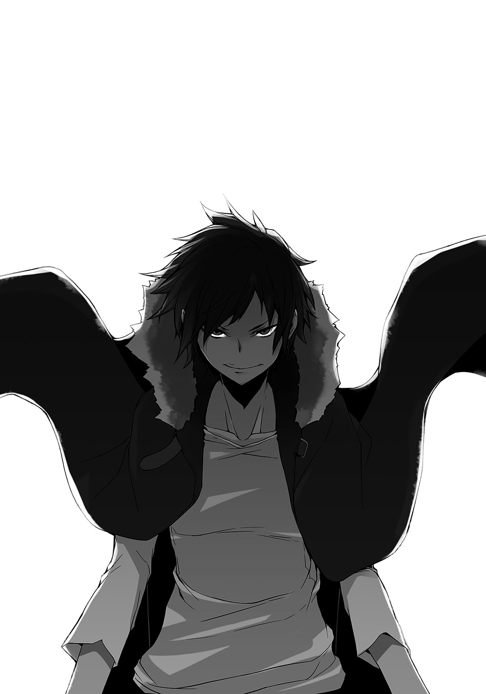
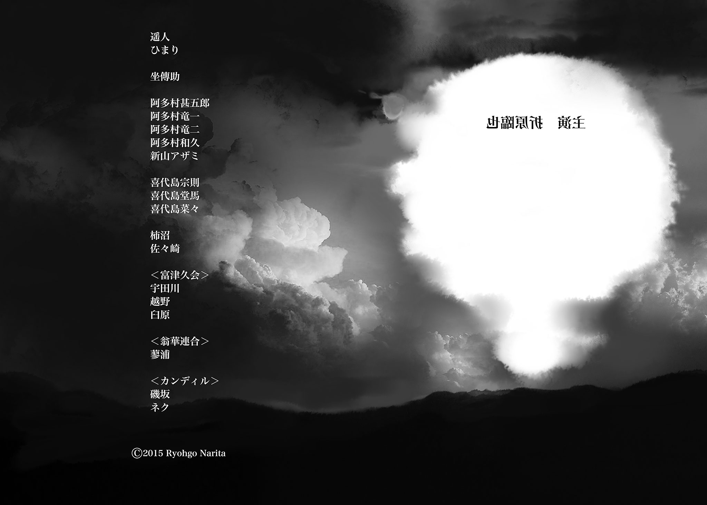
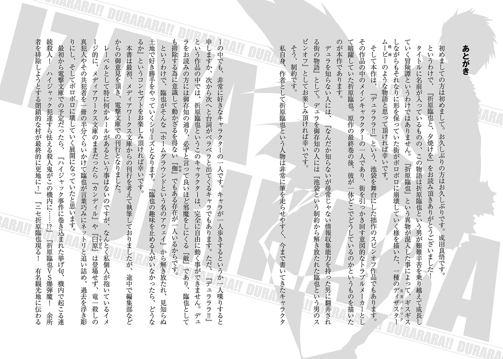
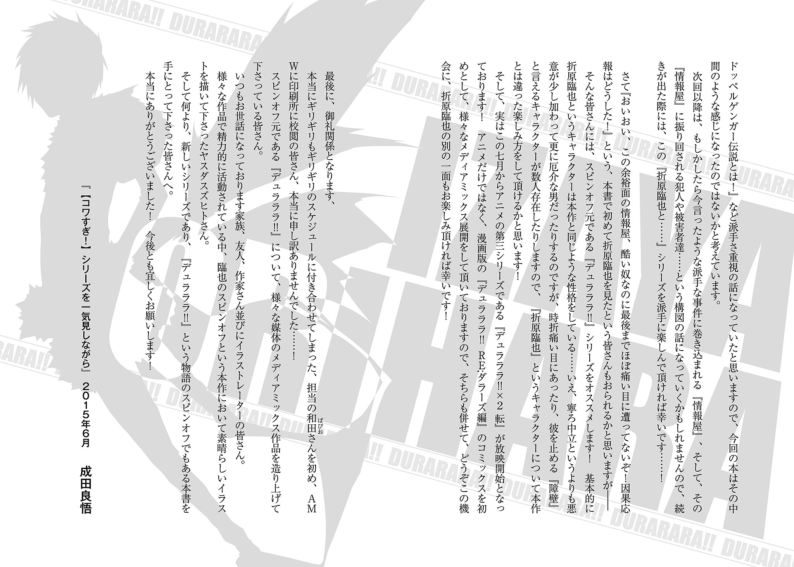
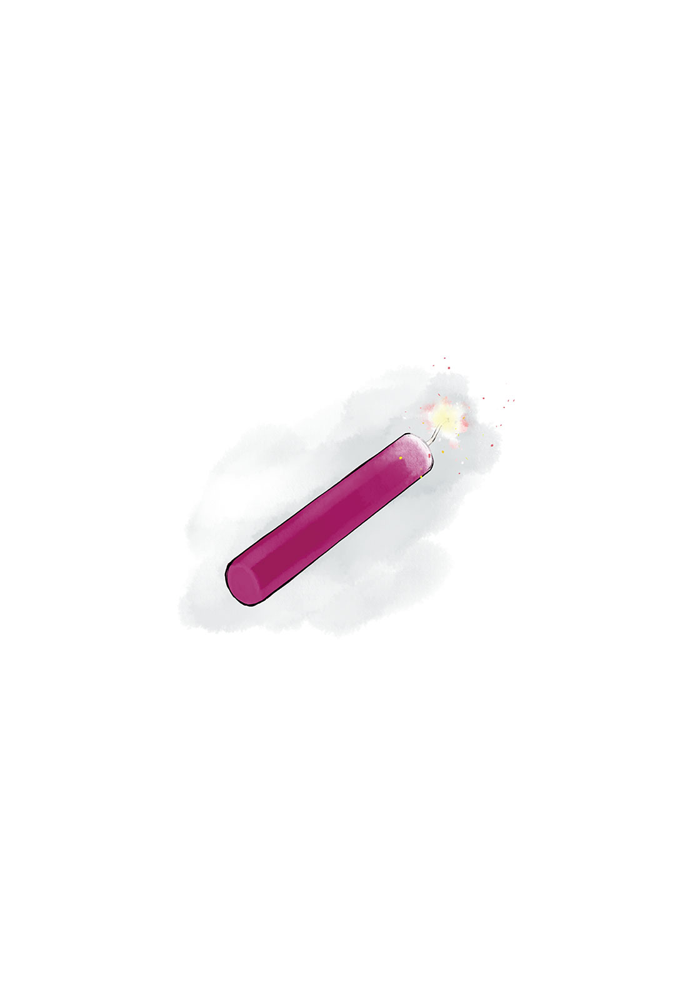
成田良悟
デュラＳＨ×３の著者近影と同じ陶器造形作家さん（カミクボユウスケさん）から購入した『陶器のドラゴン』を眺めながら、粘土のように柔軟な発想で考案し、熱を籠めて書き上げると見栄えが良くなるような作品を書きたいなあと今更ながら思う35歳埼玉在住作家。
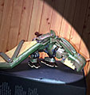
イラスト／ヤスダスズヒト
チャイナ服とつり目とワンピースに偏った情熱を燃やす関西ノリぶっちゃけ系イラストレーター。
本書に対するご意見、ご感想をお寄せください。
電撃文庫公式ホームページ 読者アンケートフォーム
http://dengekibunko.dengeki.com/
※メニューの「読者アンケート」よりお進みください。
ファンレターあて先
〒102-8584 東京都千代田区富士見1-8-19
アスキー・メディアワークス電撃文庫編集部
「成田良悟先生」係
「ヤスダスズヒト先生」係
本書は書き下ろしです。
この物語はフィクションです。実在の人物・団体等とは一切関係ありません。
 電撃文庫
電撃文庫
折原臨也と、夕焼けを
成田良悟
発 行 2015年8月20日
発行者 塚田正晃
発行所 株式会社KADOKAWA
〒102-8177 東京都千代田区富士見2-13-3
03-3238-8745（営業）
http://www.kadokawa.co.jp/
プロデュース アスキー・メディアワークス
〒102-8584 東京都千代田区富士見1-8-19
03-5216-8399（編集）
http://dengekibunko.dengeki.com/
本書（電子版）に掲載されているコンテンツ（ソフトウェア／プログラム／データ／情報を含む）の著作権およびその他の権利は、すべて株式会社KADOKAWAおよび正当な権利を有する第三者に帰属しています。
法律の定めがある場合または権利者の明示的な承諾がある場合を除き、これらのコンテンツを複製・転載、改変・編集、翻案・翻訳、放送・出版、公衆送信（送信可能化を含む）・再配信、販売・頒布、貸与等に使用することはできません。
(C)2015 RYOHGO NARITA
※2015年7月10日発行の電撃文庫『折原臨也と、夕焼けを』初版に基づき制作